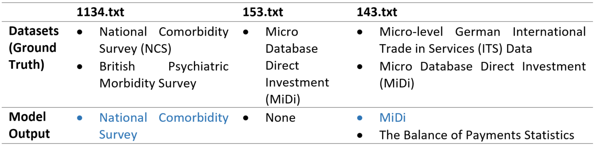
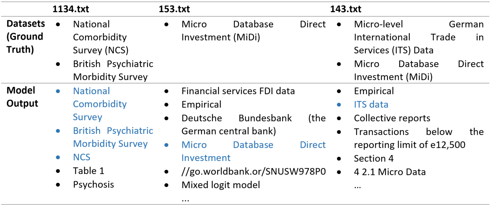
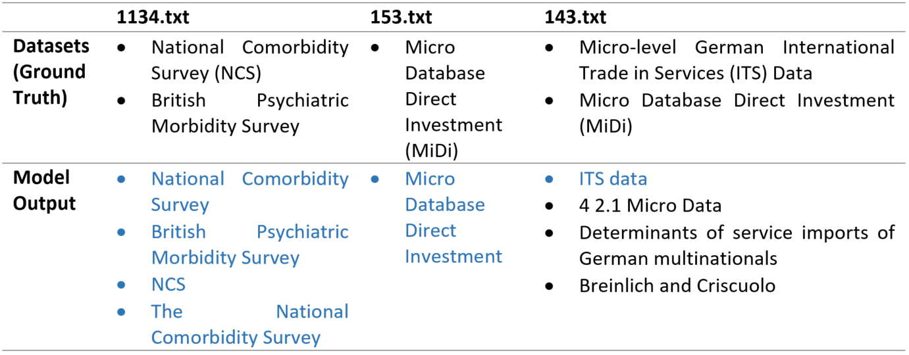
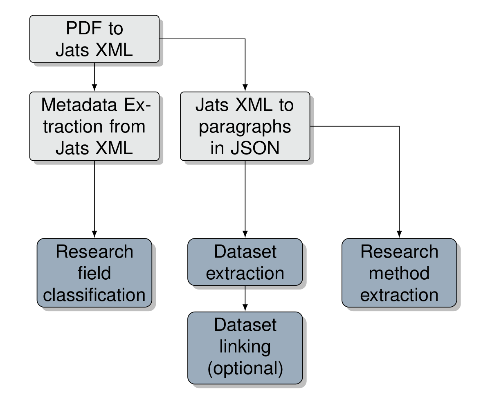
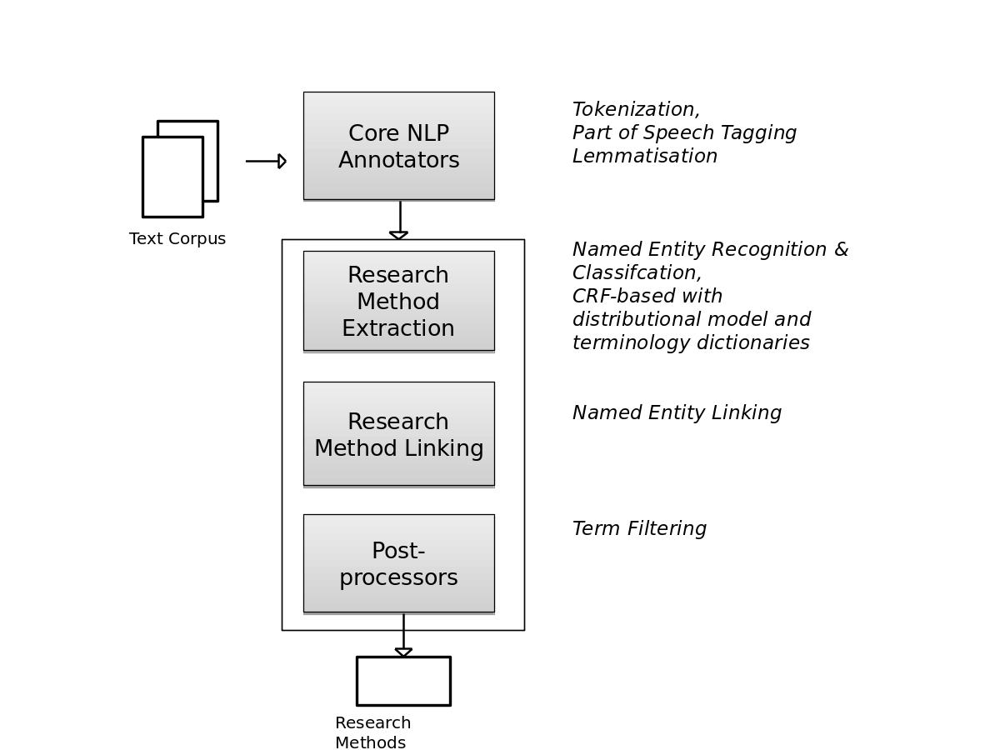
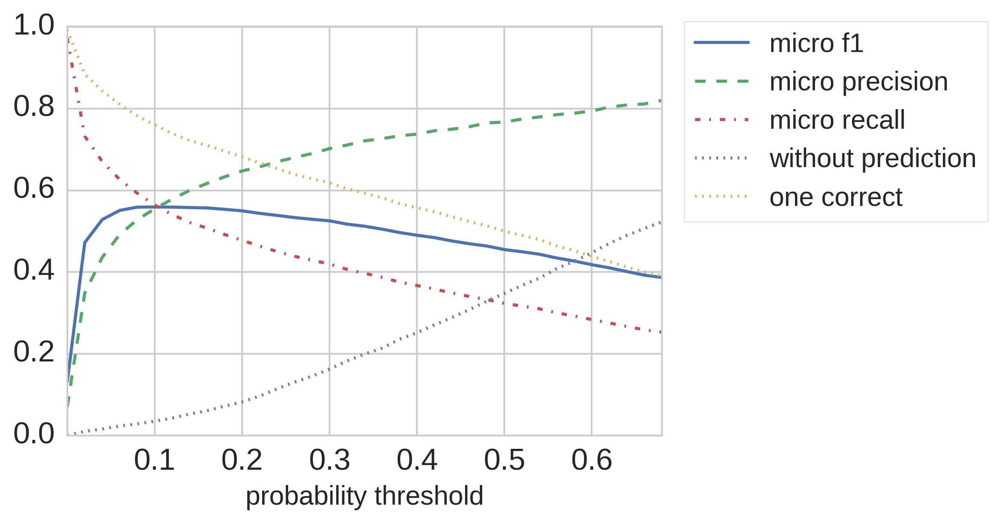

Karam Abdulahhad is a postdoctoral at GESIS - Leibniz Institute for the Social Sciences in Germany. He is engaged in the ExploreData project to build an advanced search engine for social science data. He has a Ph.D. degree in computer sciences from Grenoble-Alpes University in France, where he tackled the problem of term-mismatch. He proposed a new IR model by adapting an idea from physics. His research interests include IR theory, logical/conceptual/semantic IR, machine learning, and text mining. Recently, he is studying the profitability of the modern embedding technics in IR. He taught in several universities and developed several tools.
Palakorn Achananuparp is a senior research scientist at Living Analytics Research Centre (LARC), Singapore Management University. He is interested in developing and applying machine learning, natural language processing, and crowdsourcing techniques to solve problems in a variety of domains, including online social networks, politics, and public health.
Daniel Acuna is an Assistant Professor in the School of Information Studies at Syracuse University, Syracuse, NY. He runs the Science of Science and Computational Discovery Lab, supported by grants from NSF, DDHS, and DARPA and featured in Nature Podcast, The Chronicle of Higher Education, NPR, and the Scientist. The goal of his current research is to predict future academic success and remove potential biases that scientists and funding agencies commit during peer review. He has created tools to improve literature search, peer review, and detect scientific fraud.
Bob Allen is developing a model-oriented approach to information organization. His previous work ranged from recommender systems to neural networks. Bob studied at Reed College and UCSD. He joined the Research organization at Bell Laboratories. He then joined to the Bellcore Applied Research group in information science and digital libraries. He was the Editor-in-Chief of the ACM Transactions on Information Systems and later Chair of the ACM Publications Board. Since 1998 he has been a faculty member at number of universities around the world such as Maryland, Drexel, Victoria (NZ), Tsukuba (Japan), and Yonsei (Korea).
Waleed Ammar is a senior research scientist at Google, where he works on NLP-related problems in biomedical and clinical applications. Before joining Google, Waleed was a research scientist at the Allen Institute for Artificial Intelligence where he led the Semantic Scholar research team. In 2016, he received a Ph.D. degree in artificial intelligence from Carnegie Mellon University. Before pursuing the Ph.D., Waleed was a software developer at Microsoft Research, web developer at eSpace Technologies, and teaching assistant at Alexandria University.
Christine Betts is a software engineer working on human computation at Google AI. She graduated with honors in computer science from the University of Washington. While there, she was an intern at The Allen Institute for AI, and before that at Facebook and Google.
Katarina Boland is research associate in the department Knowledge Technologies for the Social Sciences at GESIS - Leibniz Institute for the Social Sciences. She joined GESIS in August 2011 after earning her Magistra Artium degree in Computational Linguistics, Computer Science and Psychology at Heidelberg University. Katarina has been part of the DFG projects InFoLiS I and InFoLiS II which addressed the automatic linking of research data and scientific publications. Katarina’s main research interests lie in the field of Natural Language Processing and Text Mining. Currently, she is primarily involved in research on Information Extraction, NLP & Journalism and automatic fact-checking.
Minh-Son Cao is a Master student in School of Computing at KAIST, under the supervision of Professor Sung-Hyon Myaeng at Information Retrieval and Natural Language Processing Laboratory. Previously, he received his Bachelor Degree from the University of Engineering and Technology, Vietnam National University (VNU-UET) in June 2017. He was a member of Data Mining and Knowledge Technology Laboratory from August 2015 to June 2017, under the supervision of Associate Professor Xuan-Hieu Phan. His research focuses on the application of Deep Learning in Natural Language Processing, mainly on embedding problems.
Stefan Dietze is full professor for Data & Knowledge Engineering at the Institute for Computer Science at Heinrich-Heine-University Düsseldorf, Scientific Director of the department Knowledge Technologies for the Social Sciences at GESIS – Leibniz Institute for the Social Sciences and affiliated member at the L3S Research Center of the Leibniz University Hanover, Germany. His research interests are at the intersection of information retrieval, semantic technologies and artificial intelligence, and in particular, the extraction, fusion and search of knowledge and data on the Web. Stefan’s work has been published at major scientific venues, such as WWW/The Web Conf, SIGIR, CHI or ISWC, where he also frequently serves as PC and/or OC member.
Dimitar Dimitrov is a PostDoc at GESIS - Leibniz Institute for the Social Sciences, Cologne, Germany. He obtained a Ph.D. from the University of Koblenz-Landau, Koblenz, Germany. Before that, he studied Software Engineering at the University of Applied Sciences Konstanz, Konstanz, Germany, where he also obtained his master’s degree in Computer Science. At GESIS, Dimitar Dimitrov is working on the da|ra project aimed to deliver the software infrastructure for assigning DOI names to social and economic datasets. His research focuses on applying statistical and machine learning techniques to study user behavior in web-based systems.
Behnam Ghavimi is a research fellow in WTS department at GESIS – Leibniz Institute for the Social Sciences. He graduated from the University of Bonn with a Master’s degree in Computer Science. His master thesis was about detecting dataset references in texts under the supervision of Prof. Sören Auer and Dr. Philipp Mayr. Since September 2016, he was involved in different projects focused on NLP (text analysis and text mining) and recommender systems. One of his projects was the EXCITE project - jointly run by WeST at the University of Koblenz-Landau and GESIS to extract citations from publications and make more citation data openly available.
Andrew Gordon is Senior Data Engineer at Columbia University Information Technology. Previously, Andrew was Research Information Scientist with the Coleridge Initiative at New York University. There, Andrew served as an information specialist, programmer, and ETL engineer supporting the full research and administrative data lifecycle for ingest, curation, facilitating data discovery, and providing access to sensitive, administrative data for academics and policy analysts. Andrew has a Master of Science degree in Information from the University of Michigan School of Information and a Bachelor of Arts degree in Cultural Anthropology from the University of Michigan.
Suchin Gururangan is a Predoctoral Young Investigator at the Allen Institute for AI (AI2). His research interests involve model evaluation and robustness in NLP, especially under low-resource settings and distant domains. Before joining AI2, Suchin was a master’s student in NLP at the University of Washington, and before graduate school, Suchin was a data scientist at various companies in Boston in Seattle.
Giwon Hong is a master’s student in the School of Computing at KAIST and research assistant in IR&NLP Lab at KAIST. He graduated from Sungkyunkwan University with a degree in Computer Science in February 2018. His research lays in the area of Natural Language Processing, specifically in Question Answering and Relation Extraction
Rricha Jalota is a developer in the Computer Science department of Paderborn University. She works in the areas of data access and knowledge extraction. Her interests lie in the application of Machine Learning/Deep Learning approaches to solve NLP problems in the domain of Question Answering, Conversational AI and Information Retrieval.
Daniel King is a Predoctoral Young Investigator on the Semantic Scholar team at The Allen Institute for AI. He received his B.S. in Computer Science from Harvey Mudd College in May 2018. His research interests are generally in Natural Language Processing and using AI techniques to make useful tools. Outside of research and software engineering, he enjoys playing soccer, bughouse chess, and hiking.
Sebastian Kohlmeier is the Sr. Manager of Program Management and Business Operations at the Allen Institute for AI where he leads program management for applied research, business intelligence and data science and partner development. Prior to joining the Allen Institute for AI, Sebastian worked as a Technical Program Manager and Engineering Manager in a variety of roles at Amazon and Microsoft. Sebastian graduated with honors from Western Washington University in 2007.
Philips Kokoh Prasetyo Philips Kokoh Prasetyo is a principal research engineer at the Living Analytics Research Centre (LARC) in the Singapore Management University. He enjoys analyzing data from many different perspectives, and his current interests include machine learning, natural language processing, text mining, and deep learning. He received Master degree from National Cheng Kung University in Taiwan, and Bachelor degree from Sekolah Tinggi Teknik Surabaya in Indonesia. He received several awards including ACLCLP thesis award in 2009, and DPU scholarship from 2007 to 2009.
Julia Lane is a Professor at the NYU Wagner Graduate School of Public Service, at the NYU Center for Urban Science and Progress, and a NYU Provostial Fellow for Innovation Analytics. She cofounded the Coleridge Initiative, whose goal is to use data to transform the way governments access and use data for the social good through training programs, research projects and a secure data facility. The approach is attracting national attention, including the Commission on Evidence Based Policy and the Federal Data Strategy.
Ekaterina Levitskaya is an Associate Research Scientist at the Coleridge Initiative, New York University. She utilizes computational approaches to the social science research, with special focus on text analysis and natural language processing. Her background is in computational linguistics and applied data science. She is interested in applying computational skills for the projects with social impact and utilizing text as data in a variety of applications for the social science research.
Ee-Peng Lim Dr Ee-Peng Lim is the Lee Kong Chian Professor of Information Systems and Director of Living Analytics Research Center in the Singapore Management University. He received his PhD degree in Computer Science from the University of Minnesota. His research expertise covers social media mining, social/urban data analytics, and information retrieval. He has published more than 90 international journal papers and 280 conference papers, many of them appeared at top ACM and IEEE journals and conference venues. He is the recipient of the Distinguished Contribution Award at the 2019 Pacific Asia Conference on Knowledge Discovery and Data Mining (PAKDD).
Jonathan Morgan is a Doctoral Candidate at the University of Mannheim. Jonathan has worked as a Senior Research Scientist at New York University; a Senior Data Scientist at the United States Census Bureau; a programmer, designer, and product manager for higher education systems integrations and data governance applications at various companies and institutions; and as an online producer for The New York Times and Multiplatform Editor for the Detroit News. He has a Bachelor of Arts in Computer Science from Wittenberg University, a Master of Arts in Journalism from NYU, and was a University Enrichment Fellow at Michigan State University.
Ian Mulvany is head of transformation at SAGE Publishing. He helped setup SAGE’s methods innovation incubator SAGE Ocean following a lean product development approach. Previously he ran technology operations for eLife, was head of product for Mendeley and ran a number of early web2.0 products for Nature Publishing Group. He is passionate about creating digital tools that support the research enterprise. He is interested in the interplay between different stakeholders that can lead to the sustainably of these kinds of tools.
Paco Nathan is a technologist, consultaant and evil mad scientist with deep experience in the areas of machine leraning, human in the loop patters for AI and text mining and NLP. He is advisor to several tech organizations including: NYU Coleridge Initiative, IBM Data Science Community, Amplify Partners, Recognai, Data Spartan, Primer AI, Deep Learning Analytics (GDMS acq. 2019), Level Up Analytics (Intuit acq. 2013). He is co-chair for Rev by Domino Data Lab. Assisting the program director, Ben Lorica, on Strata Data and The AI Conf.
Axel-Cyrille Ngonga Ngomo is a full professor at the Computer Science department of Paderborn University. In his work, he focuses on the life cycle of knowledge graphs. He has hence been involved in the development of approaches for the extraction, storage, querying, integration and fusion as well as the exploitation of knowledge graphs. One core usage of knowledge graphs he explores is the development of explainable and responsible active machine learning algorithms. Axel is a proponent of open data, open research, and open science with a keen interest in paradigms and frameworks for reproducible scientific research.
Wolfgang Otto is a postgraduate and research associate at GESIS - Leibniz Institute for the Social Sciences in Germany. As part of the Knowledge Technologies for the Social Sciences Department under Stefan Dietze, he applies NLP-techniques on text and data corpora in the Social Sciences. After finishing with a master degree at the NLP Group at Leipzig University (Prof. Dr. Gerhard Heyer), he is part of a team in a third funded project (German Research Fund) to build up a Specialized Information Service for Political Scientists (pollux-fid.de). A Project the State and University Library Bremen (SuUB) is realizing in cooperation with GESIS. During his studies, he collaborated in Projects on Digital Humanities, Applied Text Mining, and Data Science.
Sophie Rand is an Associate Research Scientist working on the Rich Context project at the Coleridge Initiative. Previously, she was a Public Health Data Analyst at the New York City Department of Health and Mental Hygiene, first in the Bureau of Primary Care and Prevention, where she worked with data from Health Information Exchanges and Electronic Health Records in support of clinical-community public health programs; and in the Division of Disease Control, working with real-time Emergency Department, reportable infectious disease, and school health data. Sophie holds a Bachelors of Science in Engineering from the Cooper Union and a Master’s in Public Health from the CUNY School of Public Health.
Michael Röder is a research associate and a Ph.D. candidate in the Computer Science department of Paderborn University. His research focuses on data gathering, data analysis and benchmarking of linked data systems. He has been involved in several research projects and reviewed papers for different scientific journals and conferences.
Haritz Puerto San Roman is a master’s student in the School of Computing at KAIST and research assistant in IR&NLP Lab at KAIST. He graduated from the University of Malaga with a degree in Computer Science in July 2017. His research lays in the application of Machine Learning to Natural Language Processing, specifically to solve the problem of Question Answering.
Amila Silva Amila Silva is a graduate from University of Moratuwa, Sri Lanka, with a First-Class Honors degree in Electronics and Telecommunication Engineering, where he was placed second of the graduating class of 110 students. He is currently working towards a Ph.D. degree at the Department of Computing and Information Systems, the University of Melbourne, Australia. He was awarded the Melbourne Graduate Research Scholarship supporting his studies. Besides, he was awarded the Rowden White Scholarship, a prestigious scholarship provided by the University of Melbourne to talented Ph.D. students. His research interests include continual learning, graph analytics, and data mining.
René Speck is a research associate and a Ph.D. candidate in the data processing service center (Research and Development Department II) at Leipzig University. His work and research focus on knowledge extraction, knowledge graphs, natural language processing, and machine learning. René Speck has been involved in several projects at the Leipzig University since 2013. He has been a reviewer for several conferences and journals since then as well.
Nikit Srivastava is a master’s student and a student research assistant in the Computer Science department at Paderborn University. His research mainly focuses on data science chatbots and word embeddings. He has been involved in the development of many proofs-of-concept and prototype demonstrations for different scientific research papers and conferences.
Narges Tavakolpoursaleh is a postgraduate and research fellow at GESIS - Leibniz Institute for the Social Sciences in Germany. At the moment, as a part of a team, she involves in a third-party funded project (STELLA) that aims to create an evaluation infrastructure for search and recommendation services within productive web-based search systems with real users.
Ricardo Usbeck is a senior (guest) researcher at Paderborn University focusing on data extraction and information retrieval. His main interest is the combination of machine learning, statistics, and linked data. Ricardo is leading and executing several national and international research projects concerned with searching large amounts of heterogeneous and small, specific datasets using natural language.
Daniel Vollmers is a research associate and a Ph.D. candidate in the Computer Science department of Paderborn University. His research focuses on Question Answering knowledge extraction and machine learning. He has been involved in several research projects in these domains.
Alex D. Wade is Program Manager for Knowledge Graphs and Open Science at the Chan Zuckerberg Initiative. Alex earned his master’s in library science from the University of Washington and has worked for the libraries at the University of California at Berkeley, the University of Michigan, and the University of Washington. Alex has spent his post-academic career working on problems in information retrieval, knowledge representation, and open science at Microsoft, Amazon, and Facebook, and currently works on the Meta service and the Open Science group at the Chan Zuckerberg Initiative.
Tong Zeng is a Ph.D. candidate in the School of Information Management at Nanjing University and a visiting scholar in the School of Information Studies at Syracuse University, working with Professor Daniel Acuna in the Science of Science and Computational Discovery Lab. Tong’s research interests lie within text mining and scientometrics. In particular, he is interested in applying natural language processing and network science techniques on scientific literature to investigate, understand, and facilitate various aspects of scientific communication. His recent projects involve detecting dataset mentions in full text, assigning credit to datasets, and disambiguating authors at scale.
Andrea Zielinski is a Senior Research Scientist at the Fraunhofer Institute for Systems and Innovation Research (ISI), Karlsruhe, Germany and conducts applied research in Machine Learning and Text Mining at the Innovation System Data Excellence Center (ISDEC). She studied Computer Science with a focus on Artificial Intelligence and Linguistics at the University of Hamburg. In 2002, she received her PhD in Computational Linguistics from Saarland University. Since 2008, she also serves as a lecturer for Text Mining at the Department of Computational Linguistics, Heidelberg University, Germany. Her research interests lie at the intersection of Natural Language Processing and Machine Learning, particularly on areas relating to Text Mining and Semantics.
Rich Context Introductory Chapter
Ian Mulvany, Paco Nathan, Sophie Rand, Julia Lane
Science is at a crossroads. The enormous growth of access to data coupled with rapid technological progress, has created opportunities to conduct empirical research at a scale that would have been almost unimaginable a generation or two ago. Researchers can now rapidly acquire and develop massive, rich datasets; routinely fit complex statistical models; and conduct their science in increasingly fine-grained ways. Yet there is no automated way to search for and discover what datasets are used in empirical research, leading to fundamental irreproducibility of empirical science and threatening its legitimacy and utility(1, 2). There is an enormous interest to change the current manual and ad-hoc system, and incentives are increasingly aligned: while only a fraction of datasets are identified in scientific research, those publications that do cite data are cited up to 25% more than those that do not(3).
Vannevar Bush foreshadowed the issue more than 60 years ago:
“There is a growing mountain of research. But there is increased evidence that we are being bogged down today as specialization extends. The investigator is staggered by the findings and conclusions of thousands of other workers—conclusions which he cannot find time to grasp, much less to remember, as they appear. … Mendel’s concept of the laws of genetics was lost to the world for a generation because his publication did not reach the few who were capable of grasping and extending it; and this sort of catastrophe is undoubtedly being repeated all about us, as truly significant attainments become lost in the mass of the inconsequential”(11).
We can do better – and we now have the opportunity to do so.
The core problem that needs to be addressed is automating the search for and discovery of datasets used in empirical data – building an Amazon.com for data. The vast majority of scientific data and outputs cannot be easily discovered by other researchers even when nominally deposited in the public domain. Faced with a never-ending stream of new findings and datasets generated using different code and analytical techniques, researchers cannot readily determine who has worked in an area before, what methods were used, what was produced, and where those products can be found. Resolving such uncertainties consumes an enormous amount of time and energy for many social scientists. A new generation of automated search tools could help researchers discover how data are being used, in what research fields, with what methods, with what code and with what findings —often by passively capitalizing on the accumulated labor of one’s extended research community. And automation can be used to reward researchers who validate the results and contribute additional information about use, fields, methods, code, and findings.(8)
New advances in technology—and particularly, in automation—can now change the way in which social science, and hence other sciences, is done. The place to start is with the social sciences. The great challenges of our time are human in nature - terrorism, climate change, the use of natural resources, and the nature of work - and require robust science to understand the sources and consequences. The lack of reproducibility and replicability evident in many fields(1, 4–7) is even more acute in the study of human behavior both because of the difficulty of sharing confidential data and because of the lack of scientific infrastructure. Social scientists have eagerly adopted new technologies in virtually every area of social science research—from literature searches to data storage to statistical analysis to dissemination of results(8). And, in the United States, the recent passage of the Foundations of Evidence-based Policymaking Act(9, 10) and the focus on a Federal Data Strategy, mean that there is an important use case for showcasing the value of new approaches.
The knowing how it has been produced and used before: the required elements what do the data measure, what research has been done by what researchers, with what code, and with what results. Acquiring that knowledge has historically been manual and inadequate. The challenge is particularly acute in the case of confidential data on human subjects, since it is impossible to provide fully open access to the source files.
This book was born out of a need to solve a very concrete problem. In 2016, the US Congress passed the Commission on Evidence-based Policymaking Act to make a set of recommendations on how to better use data for decision-making. The US Census Bureau was charged with supporting the deliberations of the Commission and asked our team at New York University to build a secure access facility in which data from multiple agencies could be securely hosted.
After we built the facility, and had dozens of users, we realized that putting data in one place, while necessary, was not sufficient for good analytical work to be done. Every user who accessed the data wanted to know what other work had been done with the data, with what assumptions and what results. We were able to provide them with some information, but essentially the information was drawn from our own research experience and was certainly not representative of the entire field. The obvious solution was to see if computer scientists had the technological tools available to automate the discovery of research datasets and the associated research methods and fields in research publications. Our computer science colleagues assured us that, while the technology existed in principle, no single team was known for having developed a solution.
We decided to see what we could to advance the field, and approached Schmidt Sciences, the Alfred P. Sloan Foundation and the Overdeck Family Foundation for support. As part of that support, we ran the competition with the results described in this book. We challenged participants to combine machine learning and natural language processing methods to identify the datasets used in a corpus of social science publications and infer both the scientific methods and fields used in the analysis and the research fields.
The core of the book describes both how the competition was set up, as well as the results achieved by different competing teams. However, as is always the case with exciting research agendas, the competition helped us identify five major scientific challenges that need to be addressed: (i) document corpus development, (ii) ontology development for dataset entity classification, (iii) natural language processing and machine learning models for dataset entity extraction, (iv) graph models for improving search and discovery, and (v) the use of the results to engage the community to both validate the model results, retrain the model and to contribute code and knowledge. So the other chapters in the book provide an overview of what could be done with more resources and talent devoted to this interesting question. The next section provides a more detailed overview of the contribution of each chapter.
Section 1 provides an overview of the motivation and approach. Section 2 describes new approaches to develop corpora and ontologies. Section 3 describes the competition results in terms of model development. Section 4 provides a forward looking agenda.
Section 1: Motivation and approach
In Chapter 2, " Where’s Waldo: Conceptual issues when characterizing data in empirical research," researchers from the Research Data and Service Center at the Deutsche Bundesbank show us why better metadata for social science data enables discovery of datasets and research, in ways that surpass what traditional metadata from data producers can support. They present a new modus operandi in the service delivery model of research data facilities, based on the premise that datasets have a measurable value that can be deduced from the relationships between datasets and publications, and the people who author, do research on, and consume them - that is, Rich Context around datasets.
They argue that a major advantage of rich context is that it closes the loop on metadata is closed: a loop initiated by the metadata from the data producer side, is closed by metadata from the data usage side. The authors elucidate why such rich data from the usage perspective is needed to deliver codified knowledge to the research community to guide literature review and new research; without understanding the linkage between datasets and outcomes, we are disabled in shaping new, impactful research.
The authors identify two primary reasons for this need: first, that metadata on the datasets from the data users perspective helps the data creator to improve upon the quality of the data itself, improving dataset owners’ service delivery (e.g. bundesbank as a service provider, the service being data provision, consulting on dataset usage, creation of new data products, etc); and second, that metadata on the usage of datasets in publications helps us measure impact of datasets in their ability to drive policy-making. With this closed loop, the scope of researchers’ discovery is broadened to include not only literature and datasets, but the interplay between those two - that is, how datasets have been used by whom and how. The authors discuss a tangible outcome of measuring dataset value - a dataset recommendation system, enabling expedient sharing of available datasets through the research community.
Chapter 3 outlines the operational approach that was taken to develop the Rich Context Competition. The goal of the competition, the results of which are described in Section 2, was to implement AI to automatically extract metadata from research - identifying datasets in publications, authors and experts, and methodologies used. As such, the competition was designed to engage practitioners in AI and NLP to develop models based on a corpus developed at the Interuniversity Consortium of Political and Social Research. The competition attracted 20 teams from around the world and resulted in four finalists presenting their results at NYU on February 15, 2019 (see the agenda and video here).
The results of the competition provided metadata to describe links among datasets used in social science research. In other words, the outcome of the competition generated the basis for a moderately-sized knowledge graph. the winning team in the Rich Context Competition was from Allen AI which is a leader in the field of using embedded models for natural language. Typical open source frameworks which are popular for deep learning research include PyTorch (from Facebook) and the more recent Ray (from UC Berkeley RISElab).
A major challenge is developing a training corpus that sufficiently represents the population of all documents, and tagging the datasets in the corpus. It is essential to do this well if high quality models are to be developed. There is a literature outlining the issues with developing a "gold standard corpus" (GSC) of language around data being mentioned and used in analysis in academic publications, since creating one is time-consuming and expensive (12) In Chapter 4 “Standardized Metadata, Full Text and Training/Evaluation for Extraction Models”, Sebastian tk and Alex Wade describe the need for, and strategies for collecting, large sets of annotated full-text sources for use as training data for supervised learning models developed in the Rich Context Competition. Dataset Extraction, the NLP task at the core of the Rich Context Competition, relies on a high-quality set of full text sources with metadata annotations. Developing such a corpus must be done strategically, as full-text articles and their metadata are organized inconsistently across their sources. The corpora gathered for use as training data for the Competition required ad-hoc manual labor to compile. Here, authors describe the legal, technological and human considerations in creating a corpus. They dictate the scale of full-text data needed, and the impact that an interdisciplinary (e.g spanning multiple domains) corpus has on that scale. They suggest development of a corpus with open-access text resources, use of human-annotators for labeling of full-text, and attention to the mix of domains that may be in a corpus when developing models.
There is a separate challenge of developing a common understanding of what a dataset is. Developing standard ontologies is a fundamental scientific problem, and one that is often in the domain of libraries and information scientists. Although some measure of linguistic ambiguity is likely to be unavoidable in the social sciences given the complex subject matter, even modest ontologies that minimally control the vocabulary researchers use would have important benefits. In Chapter 5, “Metadata for Administrative and Social Science Data”, Robert B. Allen describes a framework for the application of metadata to datasets, details existing metadata schema, and gives an overview of the technology, infrastructure and human elements that need to be considered when designing a rich metadata schema for describing social science data.
Allen describes three types of metadata - structural, administrative and descriptive; and emphasizes the growth needed in descriptive metadata, which are characterized by semantic descriptions. Allen describes existing metadata schemas which accommodate domain-specific metadata schema, like the W3C DCAT, and the unique semantic challenges faced by social science as opposed to natural sciences - in particular that concepts - e.g. “family”, “crime” - are less well-defined, and definitions change across sub-domains. He considers data repositories and describes the essential role of metadata in making such repositories searchable and therefore useful. He touches on several prominent data repositories in the social and natural sciences and describes their methods of gathering metadata and how the metadata supports services offered, like search, computing environments, preservation of data for archives, and logging of the history of a dataset and its provenance. Allen describes other challengings in creating and maintaining metadata, prompted by things like changes in technology that yield data streams, and changes in metadata standards. He discusses some of the technology underlying data repositories; in particular data cubes for data storage that facilitate data exploration and retrieval; containerization and cloud computing enabling sharing and reproducibility; and collection management systems which can provide metrics on usage, like number of downloads, maintenance of datasets, etc.
Chapter 6, by the Allen AI team, describes their overarching approach. The team used a named entity recognition model to predict dataset mentions. For each mention, they generated a list of candidate datasets from the knowledge base. They also developed a rule based extraction system which searches for dataset mentions seen in the training set, adding the corresponding dataset IDs in the training set annotations as candidates. They then use a binary classifier to
predict which of these candidates is a correct dataset extraction. While this approach was eventually the winning approach given the design of the corpus and the scoring mechanism, it suffers from being too fragile for general application, since it is necessarily corpus dependent. That team did not devote substantial time to identifying fields and methods.
Chapter 7, by the KAIST team, describes a very different approach. They generated their own questions about dataset names and use a machine learning technique to train the model for solving question answering task. In other words, questions suitable for finding dataset names such as “What is the dataset used in this paper?,” are generated and the question answering model is trained to find the answers to those questions from the papers. Furthermore, the resulting answers from the model are filtered by types of each word. For example, if an answer contains words with organization or agency types, then this answer is likely to include the actual dataset names. They also were quite innovative with identifying research fields, by using Wikipedia as the source, and methods by using machine learning techiques
Chapter 8, by the GESIS team, also used a Named Entity Recognition procedure. However, their design was module-based approach and they developed tools that can be used separately but also as parts of a data processing pipeline. For identifying research methods and fields, they exploited the Social Science Open Access Repository maintained at GESIS – Leibniz Institute for the Social Sciences. They also used the ACL Anthology Reference Corpus which is a corpus of scholarly publications about computational linguistics
Chapter 9, by the DICE team at Paderborn University, also used a Named Entity Recognition approach. They trained an Entity Extraction model based on Conditional Random Fields and combined it with the results from a Simple Dataset Mention Search to detect datasets in an article. For the identification of Fields and Methods, they essentially used search string to find embedded words
Chapter 10, by Singapore Management University, was an incomplete submission, with a very interesting approach. They used dataset detection followed by implicit entity linking approach to tackle dataset extraction task. They adopt weakly supervised classification for research methods and fields identification tasks utilizing SAGE Knowledge as an external source and as a proxy for weak labels.
In Chapter 11, researchers from Digital Science describe the role user engagement plays in creating rich context around datasets, which are take on properties of ‘first class research objects’ (like journal articles) in that they are published as distinct research outputs in their own right. Authors lay out a set of challenges in the sharing of datasets and dissemination of dataset metadata, and articulate goals in creating infrastructure to answer these challenges.
As technology has yielded ever larger streams of datasets available for social science research, two critical, interrelated elements of infrastructure have not kept apace: information infrastructure, and cultural infrastructure. Information infrastructure refers to content of interest to the rich context competition models - journal articles, datasets, and their metadata (including details on the data stewards, usage of the datasets in research, and code used to prepare and analyze datasets). Cultural infrastructure refers to the incentives and value propositions in place to encourage individual data stewards, data users and experts to share datasets and contribute metadata on datasets. Cultural infrastructure around datasets do not fit into the existent culture of research publications.
In venturing to build out information infrastructure around datasets, we must consider how concepts like versioning, reproducibility, and peer review carry over to datasets. Further, how do metadata carry over, when there is so much variability in what we mean when we say dataset? Incentives around data sharing, dataset curation, and metadata contribution are even slimmer than in publishing, where there exists a culture of “publish or perish.” This question must be resolved if we wish to enrich the context around datasets to make them more efficiently consumable.
The future agenda is described in the concluding chapter by Paco Nathan and Ian Mulvany
The first step is to create a corpus of research publications to be used for training data during the Rich Context Competition.
The next step will be a formal implementation of the knowledge graph, based primarily on extensions of open standards and use of open source software. That graph is represented as an extension of a DCAT-compliant data catalog. Immediate goals are to augment search and discovery in social science research, plus additional use cases that help improve the knowledge graph and augment research.
In the longer term, the process introduces human-in-the-loop AI into data curation, ultimately to reward researchers and data stewards whose work contributes additional information into the system. With this latter step, in the broader sense Rich Context helps establish a community focused on contributing code plus knowledge into the research process
General competition information
The competition had two phases. In the first phase, participants were provided with labeled data, consisting of a corpus of 2,500 publications matched to the datasets cited within them. Participants could use this data to train and tune their algorithms. In the second phase, they were provided with a large corpus of unlabeled documents and asked to identify the datasets used in the documents in a test corpus, as well as the associated methods and research fields. The participants were scored on the accuracy of their techniques, the quality of their documentation and code, and the efficiency of the algorithm – and also on their ability to find methods and research fields in the associated passage retrieval.
The timeline was as follows:
September 30 2018: Participants submit a letter of intent (see How to Participate)
October 15 2018: Participants notified and Phase 1 data provided (see First Phase Participation)
November 15 2018: Preliminary algorithm submitted (see Program Requirements)
December 1 2018: 15 finalists selected (see First Phase Evaluation) and Phase 2 data provided (see Second Phase Participation)
January 15, 2019: The algorithms of up to 6 teams are selected for final submission (see Second Phase Evaluation)
February 15 2019: Workshop is held in New York for final presentation and selection of winning algorithms (see Second Phase Evaluation)
All the information provided to participants was available here
https://github.com/Coleridge-Initiative/rich-context-competition
1. J. P. A. Ioannidis, Why Most Published Research Findings Are False. PLoS Med. 2, e124 (2005).2. M. R. Munafò et al., A manifesto for reproducible science. Nat. Hum. Behav. 1, 21 (2017).3. G. Colavizza, I. Hrynaszkiewicz, I. Staden, K. Whitaker, B. McGillivray, The citation advantage of linking publications to research data (2019), (available at https://arxiv.org/pdf/1907.02565.pdf).4. C. F. Camerer et al., Evaluating the replicability of social science experiments in Nature and Science between 2010 and 2015. Nat. Hum. Behav. 2, 637 (2018).5. A. Dafoe, Science deserves better: the imperative to share complete replication files. PS Polit. Sci. Polit. 47, 60–66 (2014).6. N. Young, J. Ioannidis, O. Al-Ubaydli, Why Current Publication Practices May Distort Science. PLoS Med (2008).7. G. Christensen, E. Miguel, Transparency, reproducibility, and the credibility of economics research. J. Econ. Lit. 56, 920–980 (2018).8. T. Yarkoni et al., “Enhancing and accelerating social science via automation: Challenges and Opportunities” (2019), , doi:10.31235/osf.io/vncwe.9. N. Hart, T. Shaw, Congress Provides New Foundation for Evidence-Based Policymaking (2018), (available at https://bipartisanpolicy.org/blog/congress-provides-new-foundation-for-evidence-based-policymaking/).10. Office of Management and Budget, Federal Data Strategy (2019), (available at https://strategy.data.gov).11. V. Bush, Science, the endless frontier: A report to the President (US Govt. print. off., 1945).12. L. Wissler, M. Almashraee, D. M. Díaz, A. Paschke, in IEEE GSC (2014).
Title: Who’s Waldo: Conceptual issues when characterizing data in empirical research Author:Stefan Bender, Hendrik Doll, Christian Hirsch 1 Affiliation: Research Data and Service Centre , Deutsche Bundesbank Date: June 14, 2019
Empirical economic and social science research uses microdata for analyses to connect theory to socie-tal problems. We present conceptual lessons learned from a machine learning competition held to au-tomate the discovery of datasets, research methods and fields in these research publications. Obtained information from the competition can be used to inform the debate about the added value of the used (micro) data. Being able to measure societal benefits of data access is important to put funding decisions on an objective basis, since much research data is generated by publically funded researchers or available from official institutions. The obtained information from the competition can also be used to build up a user-centric dataset recommendation system. Both of these outcomes will elevate the current knowledge generating process of empirical research in a research data centre.
Policy makers increasingly recognize that informed decision-making requires microdata-backing. Only microdata can uncover interdependencies between entities and document disparate global develop-ments. Making microdata available for independent research is subject to legal requirements that are designed to prevent the disclosure of information concerning an individual person or business entity. At Deutsche Bundesbank, the Research Data and Service Centre (RDSC) is tasked with making microdata available for independent research while simultaneously ensuring statistical confidentiality.
To strengthen effective quantitative research through optimal microdata usage, the RDSC has engaged in a series of projects that are targeted at enhancing user experience. One specific project currently pur-sued by the RDSC is the development of a microdata recommendation system, which is based on how microdata is being used in empirical research. Describing microdata from the usage in publications dis-tinguished this approach from traditional metadata for researchers, which is largely based on how data is produced.
Empirical research papers are an obvious source of information about dataset usage. A useful microdata recommendation system needs to rely on a corpus of dataset usage, as large as possible. Hand-curating such a sufficiently large corpus is prohibitively labor-intensive and error-prone. Therefore, being able to automatically retrieve the necessary information from research papers lays the groundwork for any future implantation of such a recommendation system. The competition is an important first step and proofs data set extraction from research publications to be feasible and scalable.
We present lessons learned from the machine learning competition held to automate the discovery of datasets, associated research methods and fields in social science research publications. In doing so, we show our insights about dataset taxonomies from our experience in a research data center and from designing a machine learning competition. We do this with a background of all authors in social science. We refer the readers interested in the more technical aspect of the task of extracting dataset citations from publications to later chapters.
Extracting dataset citations from publications is a fairly difficult task because of the variety of dataset ci-tation formats and the absence of training data. Besides empirical research support, the gained infor-mation is the basis to provide value for policy purposes in the G20 context. For example, by providing researchers with information about the use and availability of microdata previously not being available in a systematic way, the results of this competition and the ensuing microdata recommendation system are a step towards reducing data gaps that have been diagnosed in the aftermath of the financial crisis.
On a broader level, the outcome of the competition contributes to the ongoing digitalization efforts of the Deutsche Bundesbank. Extracting relevant information from research papers as an unstructured data source broadens the value of unstructured, underexplored, data. Thus, the project presents a well-defined use-case to turn tacit knowledge into codified knowledge by converting text into relatively well-structured information. As a concrete first institutional implementation of competition results, microdata-based research will be supported by turning unstructured information into a useful source of reference for researchers.
The overriding principle of Bundesbank – and other Central Banks, National Statistical Institutes and Of-ficial International Institutions - when working with micro data is compliance with the statutory secrecy and data protection requirements, and thus maintaining the confidentiality of the information submitted by the reporting agents. European and national legal provisions regulate both the user group and the access channels to micro data, prescribe the required degree of data anonymisation and oblige data providers and data recipients to maintain data confidentiality at all times.
In response to the increased internal and external demand for microdata and the data confidentiality re-quirements, in 2013 the Bundesbank set up the Integrated Microdata - based Information and Analysis System (IMIDIAS) and established the Research Data and Service Centre (RDSC) (for a detailed moti-vation, refer to Kalckreuth, 2014 and Bender and Staab, 2015). The RDSC applies a standardised pro-cedure to generate high-quality datasets that cover a large part of data requests for research purposes. Thereby, the RDSC grants internal and external researchers’ access to selected Bundesbank microdata and serves as an interface between data producers and data users.
Requests to use microdata are first reviewed pursuant to legal requirements. The RDSC provides access to anonymized datasets on banks, securities, investment funds, enterprises and households, all of which can be accessed at dedicated researcher workstations or for most of the Bundesbank’s surveys – as for the Panel on Household Finances (PHF) study – the RDSC offers so called scientific use files. Data access and the underlying legal requirements are described in detail by Schönberg (2018).
In addition, the RDSC provides information and advice to researchers on data selection, data content and analytical approaches. Together with the relevant statistical experts, it ensures that the microdata provided are documented in detail and archived. In doing so, the RDSC works according to globally rec-ognized standards and was accredited as a research data centre (RDC) by the German Data Forum (“Rat für Sozial- und Wirtschaftsdaten”).
To date, metadata in the RDSC is provided to research using structured data reports. They are an es-tablished and well-functioning tool to convey information linearly from the data producers via the RDSC to the data users. To go a step further, efforts are underway in the RDSC to document microdata from the usage side. This relevant source of information has not been considered yet, because necessary in-formation on which datasets are used in which publication has not been broadly available to date. The competition changes this for the first time.
Potential of such data documentation from the usage side is manifold. Examples include newly arriving researchers, who get to see, what other researchers did with the data. At a glance, one can directly see potential for linkages with other micro datasets if others have done it. Data producers benefit from feed-backs on potential data gaps or limitations of the used data (which goes back to the initial institutional motivation for creating a research data center). Thereby a circular information flow is created by allowing feedback loops.
A main principle of the RDSC is to give free access to Bundesbank micro data for independent research. Motives for doing so are to get feedback on the data (use published research results to increase the internal data knowledge) and to strengthen evidence-based policy-making by Bundesbank itself. For fulfilling both of these tasks, the RDSC has to ensure microdata is used effectively by providing excellent services. Implementing potential for structured feedback from researchers back to data production and new research enables an improving empirical knowledge generating process.
The knowledge generating process of empirical research in the RDSC can be organised along the four key dimensions (i) data services, (ii) research, (iii) publication, and (iv) (structured) user specific knowledge.
Figure 1: The four dimensions of the knowledge generating process of empirical research in the RDSC
Data Services comprises raw microdata and comprehensive documentation of the data both of which the RDSC compiles together with the data producing units in Bundesbank. 2 Furthermore, the data ser-vices dimension also includes the methodological improvement of microdata through e.g. applying rec-ord linkage techniques to facilitate the creation of new datasets for research. Finally, the RDSC also of-fers advisory services to potential and existing microdata users on topics such as e.g. dataset selection or analytical options.
The second dimension of the knowledge generating process of empirical research in the RDSC is re-search. After the application of a researcher is approved by the RDSC, researchers conduct their re-search project in a secure environment designed to ensure ongoing compliance with internal data policies and external government regulations. For most microdata this requires researchers to be physically present at the premises of the RDSC in order to analyse the data. Furthermore, only strictly anonymised research outcomes may be used outside of the secure environment.
Researchers as users of data services produce research outcomes. These outcomes – after data confi-dentiality clearance – sometimes take the form of publications, which present results to the interested public in a form optimized for human consumption as unstructured text. These publications contain knowledge accumulated by researchers about data usage over time (experience), e.g., knowledge about dataset particularities, which in turn could be utilised to inform the debate on how to improve data services
Examples of user specific knowledge acquired by researchers include: • How data is used (e.g. additional data cleaning, variable transformation, combining datasets, us-ing additional information) • What purposes data is used for (e.g. topics, methodology, research area) • What kinds of analyses or techniques have been tried and are used ultimately • What information about data is most valuable to get to the results, respectively which linkage or data enrichment makes renders the data most valuable.
Being able to access structured user-specific knowledge through e.g. a competition enables improving data services by making discovery of data and related projects, people, and publications at Bundesbank more comprehensive and efficient. For example, knowledge harvested from publications may be used to enhance services provided by RDSC by allowing standard datasets to be tailored to the needs of re-searchers. Similarly, data producers benefit from feedback on their data, allowing them to improve data quality.
The challenge is to establish such a feedback loop. If effective feedback is given and used, the microda-ta-based knowledge-generating process restarts with data services, but on a higher level. Better data services in turn allow better research, because available microdata is better described and more effec-tively used. By automatizing the feedback-loop between research, publications, knowledge, and data services, the knowledge generating process can loop faster and augment quicker. We expect this to lead to improvements in the four key dimensions of this process of empirical research in the RDSC.

Figure 2: Elevating the knowledge generating process of empirical research in the RDSC to a higher level by enabling a feedback loop to data services.
At the moment, this feedback loop is not present in a systematic way. The aim of the competition is to identify appropriate procedures to close the gap between publication and data services, which would enable transforming knowledge available in publications into generally re-usable knowledge to inform stakeholders (data producers, RDSC, decision makers at Bundesbank). The results of the competition will thus ultimately enable better data services which in turn will make research outcomes more efficient through the channel of a more optimal data usage.
This section details two applications of obtaining dataset usage information from publications that would add value to the data services provided for the RDSC. First, existing applications can be optimized in a user-centric way which would lead to obtaining refined products (e.g. improved researcher recommen-dations and data documentation). Second, the case for societal investment in free data access can be empirically fortified. Positive externalities (i.e. research as a public good) suggests a less then societally optimal provision of research data and related services. Obtaining a dataset impact factor can then make the case for further investment in microdata provision by concretely showing a dataset’s impact.
The structured user-specific knowledge produced during the competition may be used to inform the de-sign of a dataset proposition system for researchers. By obtaining information on dataset usage in publi-cations, data is for the first time available to construct indices on data set joint usability (and dataset maps to visualize such indices). Such an index connects datasets through actual use by researchers that combined data sets in the past. This enables recommendations, such as, “Researchers, who used dataset A, also used dataset B”.
Going further, the usability index can be expanded into a measure, how well new datasets fit each other. Without needing joint dataset usage in past publications goodness-of-fit measures may be predicted based on dataset usage in the same field, using the same methods or by additional metadata similarity. This can be a valuable accelerator to effectively distribute new datasets in the research community. While both indices can be implemented using only information from the competition, extensions may enhance value to users which are based on other information such as current metadata.
When thinking about user recommendations, the example is set by large online platforms. These online platforms can recommend from two dimensions of information (excluding interaction for simplicity). First, data is available on a large number of observed purchases per customer, which enables statements like “since you like products A and B, you might also like C”. Second, data is present on large numbers of observed customers per product, which enables statements like “users like you also bought”.
In our setting, with the knowledge generating process of empirical research in the RDSC, we consider researchers and datasets. The universe of data users/ researchers is decently large (i.e. the first dimen-sion), but per user, we only observe a limited amount of “dataset consumption” (i.e. the second dimen-sion). Hence, we have a decent chance of recommending based on other users behaviour. However, we have only limited means of predicting a single users future datasets needs based on his past personal “dataset shopping” behaviour.
However, we suspect a simpler underlying behavioural model of “data shopping” compared to shopping through large online platforms, because publishing with one dataset is not a casual purchase. Instead, it implies real commitment relating to being content with the purchase (less cognitive dissonance). Thus, we suspect that, compared to online platforms, less data points per person are needed, in order to make sensible recommendations. Also, in order to gain more of the rare information per user, we can fall back on dataset citations, i.e. “indirect data usage”, as outlined in chapter 3.
A challenge in building a data-driven recommendation system is to make sure that recommended da-tasets are indeed feasible to use, i.e. constitute meaningful recommendations. Thus, besides information about datasets, additional information such as fields and methods is needed to be ingested into the system. This additional information essentially constitutes additional links between datasets that helps better align datasets. This is especially true in the finance domain where linking microdata is a common feature in empirical research.
Second, the RDSC as part of a public institution has a responsibility towards its principals i.e. society. Granting data access free of charge for researchers should be backed by empirically measurable bene-fits of such data provision. Benefits from data usage can justify societal investment in free data access. However, measuring societal benefits through data access is not obvious at first glance. One possible starting point of approximating societal benefits of data access can be to measure the creation of knowledge 3 created by specific datasets.
One can argue that added value of providing administrative microdata is the marginal benefit relative to the second-best comparable commercial database, if such a database exists. Also, one can argue that a dataset, which enables causal evidence, adds more value to societal knowledge, compared to previously available datasets, from which only correlations could be deduced if an important goal is to inform the policy debate. However, both of these methods require identifying which empirical result from a publica-tion can be attributed to which dataset.
Extracting dataset citations from publications is a fairly difficult task because of the variety of dataset ci-tation formats and the absence of training data (for a recent overview of data retrieval see Koesten et al., 2019). Boland et al (2012) propose a weakly supervised approach, using a pattern induction method for the detection of study references in full texts. They use a corpus of 259 publications from the Social Science Open Access Repository (SSOAR). They use a bootstrapping approach, starting with a small corpus of manually created training instances. The resulting system InfoLink now informs SSOAR.
Boland and Mathiak (2015) describe dataset extraction as a twofold task, finding dataset citation string and following entity resolution (match the string to the correct entity/ DOI). Concerning entity resolution, they report the difficulty of broad survey dataset citations that ignore data variability (such as years, ver-sions, questionnaire variants, etc.), motivating a dataset taxonomy. Named dataset citations are often underspecified allowing identification of the survey but not of the precise dataset (which of multiple sub-samples, aggregation levels, survey modes, etc.).
Zhang et al (2016) also use a bootstrapping approach to extract dataset citations from 116 computer science journals publications. Ghavimi et al. (2016) use a similar approach for social science papers finding datasets with well-documented metadata. According to them, only 25% of all dataset citations are given in the references, highlighting the unstructured citation culture for datasets. We advance from these with an environment with less available dataset metadata and a corpus of publications from a va-riety of fields for our purposes. To tackle this, we continue with a larger hand-curated annotated corpus.
Metadata schemas for datasets are available, such as DataCite metadata schema and the da|ra metadata schema, which complies with the DataCite schema (Helbig et al. 2014). They offer dataset taxonomies and standardized citation propositions, however their categories do not optimally support automatic search and extraction, if no unique dataset identification (such as a DOI) is used. In the con-text of central banks that provide microdata, recent progress has been made in the context of INEXDA. A metadata standard (in line with DataCite) has been developed (Bender et al. 2018) and datasets pro-vided by the RDSC are all DOI registered.
Improving dataset citation is high on the scientific agenda in recent years. This notably includes promot-ing widespread usage of persistent and unique dataset identifiers. As available datasets spread across a large number of databases, identification of datasets is important for reproducibility and to credit data creation efforts to incentivize data creation and publication (Lagoze and Vilhuber 2017, McMurry et al. 2017, Mooney and Newton 2012). If unique and persistent dataset identification in publications were available, Ball and Duke (2011) raise the idea of dataset impact factors with such information.
This section presents lessons that we learned throughout the duration of the competition. We organise this section around the three sets of information that where the main focus of the competition: datasets mentions, research fields, and (statistical) methods used. We begin by describing our a priori expectation of what a dataset is. We did not delve into definitions of a dataset but rather considered it sufficiently defined for our purposes (as empirical social scientists and for the competition).
Since our approach depends on getting to know the user-perspective, we thought it plausible to let usage in empirical papers define a dataset for the purpose of the competition. Having a background in working at a large provider of financial data, we had a vague idea that all datasets would look like those the RDSC provides access to, which consist mostly of collections of structured data in matrix or database form. These datasets typically are defined by a name and with a well-defined scope, thus allowing clear citation, probably including a unique dataset identifier (such as a Digital Object Identifier, DOI).
Since the corpus of publication used for the competition spanned different domains (like healthcare, ed-ucation, and others), we quickly realized that our dataset image had an econocentric bias. In social sci-ence, we learned, datasets can be categorized into two broad categories for the purposes of extraction. First, there are named datasets, i.e. well defined, usually large-scale and publicized datasets (e.g. Com-pustat).
Generally, named dataset mentions are short strings in the publications, have commonly used abbrevia-tions (e.g. MMSR), and often containing institution name or name of commercial data vendor. Some-times (rarely, but increasingly) these datasets can be identified by a unique digital object identifier (DOI). These datasets are usually well-defined in scope and time, with formal documentation available. While data is usually collected with a specific purpose in mind, such datasets are be used across multiple pa-pers and research domains.
The second dataset category is what we call created datasets. By created dataset we understand da-tasets usually collected or built by authors of a publication for the purpose of analysing one specific re-search question. Often, created data comes in the form of small-scale surveys, (structured) interviews, or randomized controlled trials, RCTs. Such data normally does not have a trademark name, but instead one or multiple paragraph descriptions in the publication. Dataset information is blended together with information on data collection and sampling methods. Data reference at its most condensed form then comes in a structure like “we interview a given number of participants in a given region suffering from a given disease and code responses in the following way”.
In contrast to named datasets, created datasets usually are not referred to by a specific string or com-monly used abbreviation. Data collection is usually paper specific, and the universe of existing datasets are not easily searchable. This makes it hard for text mining algorithms to correctly extract strings refer-ring to dataset entities. Specific created datasets are harder to use for follow-up research, and reproduc-ibility is given only if publishers provide data together with the paper. Therefore, the lack of unique iden-tification and search terms renders data collection potentially redundant and dataset spread not optimal.
Throughout the competition duration it became clear that the fraction of named and created datasets varies across social science domains. Since different fields of social sciences rely on different identifica-tion techniques and differing potentials for conducting RCTs, the predominantly used data sources natu-rally vary. This has important repercussions for designing a competition, since algorithm performance and later recommendation system performance varies with the input corpus and the application field.
The number of datasets used per empirical paper (linked data) also varies across research areas. This number is also dependent on named vs. created datasets. In fields with widespread use of multiple da-tasets at once, the added value of recommending additional useful data might be expected to be higher than in fields that create study-specific data every time. Conversely, one could argue that the marginal utility of adding additional datasets is decreasing.
The optimal way forward is to start a data recommendation system for research field with higher ex-pected marginal utility from additional datasets. In our view, these are research areas with widespread usage of named datasets. Named datasets are constructed without the concrete research question in mind. That is why information to answer a particular research question often has to be obtained from more than one data source and is particularly true in empirical economic and finance research.
From the distinction above, one could make the argument that named datasets are easier to identify than created datasets. However, this is not the case, because the same dataset name can refer to multiple subsamples or waves of same datasets, and it is unclear where to make distinctions between dataset entities. This makes it difficult to identify the mentions referring to the same data points. Issues are, just to name a few, different time periods or subsamples, different states of data and states of knowledge, computational data pre-processing or enrichment steps. These identification issues render the current task of entity resolution of extracted dataset mentions complicated.
Unique dataset identification carries significant repercussions for reproducibility purposes, where identi-fying the exact data used for a study is paramount. For reproducibility purposes, the current solution to this dataset identification problem is the direct data upload to the publisher together with the publication. This is neither storage-efficient for large datasets nor feasible in the case of confidential microdata. A more flexible way to solve this issue is to assign unique identifiers (DOIs) to the datasets.
With a DOI (identifying the exact time frame, sampling universe, data version, wave, aggregations, state of knowledge, etc.), datasets are identified and quantitative research using confidential microdata is re-producible. To make lives easier, DOIs also drastically facilitate the automatized extraction of well-defined datasets from publications (comparable to largely standardized citations of other publications, allowing easy retrieval of publication networks, etc.).
Summarizing, if we successfully identify datasets and solve the issue of entity resolution, we can link and propose created datasets and thereby enable further research with such data, which takes up a notable fraction of publications in certain fields. While this task is harder than for named datasets, the potential for improvement remains larger as of today. For created datasets, too, DOI usage would be desirable; however encouragement or enforcement to use DOIs is harder in this case, because of a larger target group – authors instead of a limited number of data stewards. Even in case of widespread DOI usage for named datasets, the competition algorithms yield valuable results through the created datasets extraction in order to allow referencing and making available datasets used in the past for further analysis.
After a discussion about dataset types and usage in fields, the last lesson that we learned about datasets concerns the mention of datasets in publications. These mentions come in two types. First, datasets used for empirical analysis and second, cited datasets in the literature review or references. Dataset citations (without empirical usage) can generally occur in the literature review section, even in theoretical, methodological papers, e.g. a given paper might report summary statistics based on datasets (“Author Y uses Compustat to…”). Sometimes differences between cited and used datasets are only semantic in nature. In well-written papers, the difference is usually fairly easy to distinguish for humans, but less clear for algorithms.
A key lesson we learned, is to think ahead of time, what the informational need is for the use-case at hand, used or cited datasets. Note that in an optimal setting, if information were available on the universe of datasets used for analysis in papers and on all publication citations, dataset citations would be redundant. This comes from the fact that a dataset citation in one publication is based on a dataset used for analysis in another publication and can be linked via available literature citations.
While literature citations are mostly standardized within research domains and are relatively straightfor-ward to extract (hence publication networks / publications maps exist), information on used datasets in papers remains incomplete (even after the competition). Because of this, for the competition, we asked for used and cited datasets. It is important to note, that extracted dataset citations are always incomplete, since some authors report aggregate statistics from a different paper, but not the data behind (“Smith et al show…”).
If well separated, through extracted dataset citations, one obtains a “dataset map”, thus the “closeness of datasets”, and network measures such as centrality distinguishing important datasets (“nodes”). Through extracted empirical dataset usage on the other hand, one obtains relevant information for our purposes, namely information relating to dataset similarity and joint usage possibilities from the user perspective. However, for our envisioned recommendation system, usage of cited data (“indirect” data usage) is a valuable feature, since it yields more limited data on dataset “purchases” of a user.
As training data for the algorithms it is important to include theoretical literature, essays, etc. in the corpus of publications. Obviously, this is helpful for algorithms to correctly identify true negatives, i.e. correctly identifying theoretical papers. For this task, distinguishing between cited and used datasets becomes relevant once again, because clearly separating theoretical papers that merely cite data from empirical papers depend on such a distinction.
The competition also asked participants to extract information about research fields and methods used in the publication. We want to gather this information from the user side, because data producers and annotators do not necessarily foresee all usage potential for their data and the point of our envisioned system is to increase user value. One such idea is to construct dataset similarity indices from the usage side, information is relevant not only on existing joint usage by others (“people like you often used dataset Y, too” – hence dataset extraction), but also on new dataset or linkage potentials (“this might also interest you based on your preferences”). For this, information is necessary on the context, how datasets are used.
To obtain the most relevant categories of research fields, we did not provide any thesauri to the compe-tition, on purpose. The rationale behind this was to see the unhindered creativity of teams, which availa-ble information sources they would use or not use (e.g. reference datasets, Wikipedia, archive.org, other repositories, thesauri, statistical clustering techniques, etc.). On the other hand, thesauri limit the cata-logue of potentially identifiable fields and methods, thus prohibiting new methods and fields to be identi-fied in fast-changing modern research areas. Also thesauri might disturb algorithm performance, since algorithm might be forced to categorize topics and fields to older or less exact categories than necessary.
However, using thesauri does have well-known advantages, as any librarian will confirm. These ad-vantages include easy clustering of similar fields and methods and a manageable category set of predic-tions. For field predictions, we generally face a fine line between too broad predictions (safe, but unin-formative) and too narrow predictions (narrow, but potentially wrong). A potential way out is backward induction here – we can present differently aggregated predictions for fields to users and get feedback from them (let users rank usability – “Was this helpful to you?”).
Concerning our definition of methods for the purpose of the competition, two questions arise. The first is the definition of statistical methods (i.e. inclusion of sampling methods, qualitative methods, etc.). Sec-ondly, there are multiple statistical methods in a publication (besides the main causal analysis, there can be methods reported for data preparation, sampling, baseline results, robustness checks, descriptive statistics, etc.) and issues of potential weighting of importance of these.
For useful new recommendations to be provided to researchers, we decide to include in statistical methods all methods that describe potential for a merge of datasets / joint usability, hence to include all the above listed. We consider a broad definition of methods, not only including high-level statistical methods, such as ordinary least squares, but also including the observed unit, time period or even re-gression equations. If two papers then use different datasets in the same field using the same methods, there is a relatively high likelihood that those datasets can be linked or used together to create new in-sights.
Several decades ago, publication citation networks were constructed and to our knowledge no such un-dertaking has yet been done for datasets. This comes from the fact that no curated training data corpus is readily available in decent quality. Since no such data is available, we manually annotate papers for the competition and now propose to go forward with this in a larger scale.
We would have no need for this competition in a world with universal dataset identifier usage (such as DOIs). In such a scenario unique identification and standardized citations of datasets would be readily available. Since DOIs only now and slowly gain widespread application for datasets in social science, our task is a 1:n mapping of publications to datasets without unique identifiers. For scientific papers many journals already provide DOIs for papers.
There are ongoing efforts by journals to have all used data published for reproducibility reasons. Incen-tivizing researchers to provide unique identification of datasets used in papers is a logical next step. This will ensure reproducibility for confidential microdata and facilitate our use-cases. In the meantime, we show a way forward to learn from the current state of information and analytically use presently available information.
The competition highlights that datasets can be categorized in different dimensions for the purposes of extracting dataset mentions from publications. We propose a binary distinction of datasets into named as opposed to created datasets. As named datasets, we consider formal, large datasets by commercial or official institutions, often referenced in relatively standardized forms as commonly used abbreviations. Created datasets are those created for the specific purpose of one research question in mind. They are generally described in less standardized paragraphs. Usage of named versus created datasets varies across research areas.
Also varying across research areas is the number of datasets used per empirical paper. This number al-so depends on the spread of formal, named datasets as opposed to created datasets for single studies. In fields with widespread use of multiple datasets at once (linked data), the added value of recommending additional useful data might be expected to be higher than in fields that create study-specific data every time. Conversely, one could argue that the marginal utility of adding additional datasets is decreasing. The optimal way forward is to start a data recommendation system for research field with higher expected marginal utility from additional datasets.
In this competition, we asked teams to extract datasets, fields and methods from a corpus of hand-annotated research publications. The value of the extracted information lies in informing a user-centric dataset recommendation system and thereby enabling optimal and timely spread of available datasets throughout the research community. Furthermore, such information allows us to compute dataset impact factors by obtaining data-driven information on which datasets underlie high-quality research outputs. This in turn is a proxy for societal benefits of data provision by research data centres, thus motivating in-vestment in data access infrastructure.
We introduce a circular model of the knowledge generating process, which increases in levels. From da-ta services, research is conducted, publications are published and user-specific knowledge is generated. Having such knowledge on dataset usage, data services in turn can be improved. Thereby the circle repeats on a higher level. The current competition works on strengthening the knowledge pillar as well as the transmission mechanisms from publications to knowledge to improved data services. 4
Automatic processing of generated knowledge in publications becomes increasingly available with mod-ern text analysis tools. Extracting such information is important, because timely and optimal usage of gained results increases the speed, by which findings can be incorporated into data services and thereby next-level research is enabled in turn. To further improve automatic processing, minimum standards for dataset taxonomy are needed. Harmonized metadata schemas for data sets – like the INEXDA metadata schema for central banks and statistical offices (compliant with and building upon DataCite) – offer such an approach.
The competition showcased that information extraction of the necessary information for such systems is possible. The delivered prototype algorithms prove this claim. With the proof of concept, there is a more substantiated case for investing in a larger hand-curated training corpus of annotated research papers. On the road towards a user-centric dataset recommendation and metadata system, the competition forced us to clarify organizational needs and methodological aspects.
For the way forward, it is important to note the importance of the research area on the strategic path to-wards a unified user-centric microdata recommendation system. The choice of the research domain will greatly influence algorithm performance. Since human effort in creating training data is expensive, one should deliberately pick research domains to start with. This arises because text extraction algorithms (and humans) struggle with informally described created datasets. The low-hanging fruits of prototyping dataset recommendation systems, usability indices etc. are easier to implement for research areas with a largely formalized dataset citation culture (however ultimately potential for benefits may well be larger in other research areas).
Christian Herzog1,a, Daniel W Hook1,2,3,b, Mark Hahnel1,c, Stacy Konkiel1,d, and Duane E. Williams1,e
1Digital Science, London, N1 9XW, UK
2Department of Physics, Washington University in St Louis, St Louis, Missouri, USA
3Centre for Complexity Science, Imperial College London, London, SW7 2AZ, UK
(ahttps://orcid.org/0000-0002-9983-0033, bhttps://orcid.org/0000-0001-9746-1193, chttps://orcid.org/0000-0003-4741-0309, dhttps://orcid.org/0000-0002-0546-8257 ehttps://orcid.org/0000-0002-2111-3413)
The relationship between research, researchers and data is changing. Data has always played a critical role in scientific research, however in recent years it has taken centre stage not only for the so-called hard sciences, but also for the social sciences, and it has an increasing role in the humanities (Giuliano, 2019). We assert that this change is, at least in part, driven by two key factors: First, the increasing volume of data that is available to researchers either, for example, through the increasing sensitivity of instruments that aid experimental work, or through the ubiquity of computer systems with which we interact in our daily lives. Second, our ability to process and analyse these data is growing quickly as computers become faster and algorithms become more powerful. While some researchers welcome having more data to work with, others are challenged or marginalised in this new data-rich world (Eijnatten et al., 2013; Grusin, 2014; Leurs and Shepherd, 2017). These effects are often compounded by the tools that researchers must master to connect their research to data.
In the hard sciences, the CERN Open Data Portal contains 131 datasets describing particle collisions, each of which comprise around 300Gb of data at the time of writing (CERN, 2019). In the social sciences, the CISER Data Archive at Cornell is home to more than 1000 different social science data sets (CISER, 2019). These examples are individual instances chosen at random from many that could be used to demonstrate the variety and scale of data available for research. However, even these examples don’t begin to quantify the amount of detailed personal data available to companies such as Facebook. Data of this latter kind has already been used in academic studies as well as in more controversial contexts (Jordan and Weller, 2018; Kamp et al., 2019; Stark, 2018). Clearly, there is an increasing diversity and depth of data available for research from both traditional and from new sources.
Many researchers now work with large volumes of data. Fortunately, many facilitating technologies have become commoditised and are available at a fraction of their original cost: storage is cheap and data transfer is fast. But, Increasing the value of data to researchers is no longer about technology, rather it is about the information and culture around the data.
In this chapter, we take our lead from Chapter 1 in recognising not only that science is at a crossroads but that the whole of research is changing. We discuss two elements of infrastructure that, if enhanced, can make data more useful and valuable to the whole research community: information infrastructure and cultural infrastructure. The Rich Context project supports the development of tools that enrich not only information infrastructure around datasets, but which also enhance the cultural infrastructure. Information infrastructure includes details of the approach to data stewardship, context of usage, code applied to the dataset in its production, as well as code applied to the data to derive further results or translate it for practical uses. All these factors add critical elements to the research infrastructure. Cultural infrastructure includes creating the incentives, triggers and frameworks that encourage the dataset stewards, experts and users to contribute to these critical information elements.
Information infrastructure can be defined as the collection of processes and artefacts that are foundational to today’s scholarly communications. A simplified model of scholarly communications would have artefacts such as journals, journal articles, article metadata and citations. In this case, the processes would be peer review and scholarly search.
When creating one of the first scientific journals Philosophical Transactions 350 years ago, the members of the Royal Society did not have today’s data-centric world in mind. While a clear line can be drawn from the articles of that time to the articles of today, infrastructures have grown up around research publications in the intervening years that have moved the structures and expectations of the research article forward. These norms are powerful and persistent through their ubiquity. For example, in the large majority of modern research literature, we continue expect articles to be grouped into journals and published on a specific date, and we expect there to be a version of record that constitutes a definitive record of a piece of research.
Data is more fluid than a standard research article: it is produced and updated more frequently and iteratively; it needs to be shared with many in a collaborative context; it is processed and versioned by different colleagues. Data does not fit into the normalised research publication. Research fields that rely on data are beginning to publish data as a distinct output from a research article. Data is becoming a principal research output, while the technological challenges of publishing data are being addressed, the format and necessary fields of the metadata that describe data, the file format in which the data resides, the resource to annotate the data to make it useful to others, the way in which data should be cited in a paper or by another dataset, the description of the processing that has been applied to the data, the details of the ethical review process behind the exercise that gathered the data, and many other norms do not yet exist homogeneously across subjects and geographies. There are not yet strongly established norms that help researchers to have trust in data.
A dataset can change with time for many reasons: data may be added over time, corrections may be issued, and so on. In these cases, it may be appropriate to “version” the dataset (by issuing a persistent identifier for a point-in-time snapshot for the dataset, allowing subsequent changes to receive their own “versions”). But changes to a dataset may have a knock-on effect on the interpretation of the data and may fundamentally alter the research result that was originally reported. Moreover, in many fields “Big Data” is so central that it not only puts pressure on the community to establish an acceptable model of data publication, but also puts significant stress on how we read, interpret, and review research as a whole.
Many datasets are now so vast that we lack the ability as humans to consume them in an easy way. Visualisation technologies and other tools that allow us to interact with and sample data dynamically have received significant attention in recent years, and have helped with the interpretation of data in online environments. But it is simply impossible to reduce some types of data to a single figure or printable table, as would be the case for “traditional” journal publishing. By attempting to do so, we miss the essence of the data and risk failing to communicate data-driven conclusions accurately. This limitation of current publication formats (e.g. static PDF files for articles) is an issue that relates to the reproducibility crisis of modern research.
Peer review is another process that is not easy to apply to data as a “first class” research object. Historically, peer reviewers have ensured that a piece of research is well-communicated and correct in the sense that it is reproducible. This level of peer review is difficult to apply in the context of research data. If data is being published as a primary output, then it may be possible to perform a kind of peer review by applying some statistical tests to a sample of the data, or by using some other appropriate technique. However, it is no longer practical in most cases to set up a parallel experiment to reproduce data, as had been the case in years past. Across all contexts there are good reasons for these challenges: the experiment may be too costly to repeat, or the conditions of the original data collection may not be replicable (for example, surveying stress levels of the populace during a specific political event). In addition, ethical considerations such as the anonymity of those being surveyed may make certain types of data difficult to review. Thus, we need to develop robust and accepted approaches to peer review, not only for data itself but also for those publications that are heavily based on data. Without peer review or some suitable proxy for peer review that makes sense for data, it is difficult to know whether a dataset can be trusted. Without trust, a dataset has no value to a researcher who seeks to build upon it.
Several publishing innovations have made journal articles more discoverable and accessible in recent years, such as preprint servers, the widespread use of Digital Object Identifiers (DOIs), and centralized search engines. However, while some of these infrastructures do enhance a researcher’s ability to find research data, they do not fully translate from the realm of journals to data. There are multiple reasons for this lack of translation, some of the key features include: a) weakness of a homogeneous metadata infrastructure for datasets; b) inhomogeneity in the types of data that can be shared; c) proliferation of different platforms to store data; d) lack of standardised publication practices; e) lack of adoption of standards across fields. When compared with the “shape” of an academic article for which there is a standard structure (e.g. DOI, abstract, title, authors, keywords, etc) specifically designed to facilitate human search, it is clear that datasets are contextualised by an immature information infrastructure.
Datasets are more complex to classify and annotate than articles, yet some progress is being made. The core fields required to create a valid DataCite record are identifier, creator, title, publisher, publication year and resource type (DataCite Metadata Working Group, 2016). All other data fields are optional (e.g. location, funder, subject, contributors) due to the fundamental uncertainty in what might constitute research data in the future. This flexibility limits how data can be discovered. It has taken some years for Web of Science, Google and others to introduce functionality to search for datasets in their discovery systems.
Technological infrastructure for data--or lack thereof--has huge implications for the discovery, peer review, citation practices, interpretation, and availability of data. These challenges are interconnected with challenges we face when thinking about the cultural infrastructure for data, as well.
There are two main aspects to cultural infrastructure: incentives and capability. Both aspects affect how researchers engage with research data, and their behaviours relating to sharing it with others and making it available to external scrutiny.
Anecdotally, academics do not typically take up research careers for financial gain. Rather, they choose to dedicate themselves to understanding a specific problem or field partially in the hope of making a discovery. For most researchers, success is not strongly coupled to prize winning, but rather by winning the freedom to determine their own research agenda. Researchers in many fields are promoted by publishing in specific high-impact journals, leading to funding success, which in turn usually leads to greater control of your research.
Sharing data is often not well-aligned with the current model of incentives. Parting with the data that underpins your research gives rise to two concerns. Firstly, that someone may find an error in your work and discredit what you have done. Secondly, that someone else may not share their own data but will gladly reuse yours if you make it available. This is especially the case in fields where success is based on having more data to analyse.
A further level of inequity exists in which data-related jobs are valued by the Academy. If a researcher happens to be particularly talented in working with data curation, data analysis or data processing, there is no track for recognising these talents. They are unlikely to be a first author on a publication in a major journal due to their data wrangling talents, and hence they have less of a chance of career progression than researchers who take a more traditional “publish or perish” path with their work as described above.
This set of perverse incentives means that people with the capability to handle data are often incentivised to leave research. Hence, not only do we have a problem of incentives in sharing and communicating data, but we also have a problem in retaining people who have the capability that we need to structure data so that it can be shared and built upon.
Capability for sharing data is the second aspect of the cultural challenge that academia continues to wrestle with. Making data available to others is generally accepted as a key part of the research communication process. However, there are certain established norms around when the data should be shared, and to what depth it is shared (Linek et al., 2017); for example, in fields where human subjects research is prevalent, there is a much more conservative attitude towards open data than in fields like astronomy where data sharing is widely practiced, given that data can be collected by only a handful of observatories and telescopes worldwide.
In fields that are more applied, ensuring that data generated as a result of a commercial relationship is protected is crucial. In such fields, academics often have a better understanding of copyright, intellectual property rights and licences (Treadway et al., 2016). But outside of this context, there is a general lack of understanding of these issues and hence data are often not shared over concerns for a perceived legal barrier.
Other concerns are ethical—for example, should these data be shared if it might infringe the rights of the subjects of the research? Researchers are beginning to become aware that, through the use of algorithms, some data is not as well anonymised as it may first appear (Siddle, 2014). Anonymisation of data is a research field in and of itself (Li et al., 2007).
The degree and nature of ethical issues and industry-proximity vary greatly between different research fields and give rise to different cultures of data usage and re-usage across fields and even within fields. Some researchers are motivated to engage with the open access community and hence choose approaches to sharing data that include granting permissive licences, association of unique identifiers with data, adherence to data standards and training students to adhere to similar approaches. Other researchers are motivated to ensure that data are not shared due to the information that can be inferred by processing the data.
The power of the newest algorithms, or of algorithms yet to come, mixed with constantly developing ethical nuance means that it is difficult to pre-empt what may or may not be acceptable to share in the future. Hence, some may feel that it is simply better not to share, especially in the social sciences, where many of these issues are more prone.
Other concerns are simply practical—how does one make data available in a way that is meaningful to others? The work associated with making a dataset generically machine-readable is challenging for many researchers, who are not to be experts in data handling. The work associated with making a dataset human-understandable, reproducible and fully contextualised is often significant. Funding constraints may make it impractical to share data or to add useful, valuable or even critical annotations to a dataset. However, funders are beginning to prioritise these activities in their grant programs (Jisc, 2019; NNLM, 2019). All these factors lead to uncertainty exacerbated by different levels of confidence and understanding and consequently an uneven landscape in what is shared, how it is shared and where it is shared.
The points discussed above offer some indication of what would be needed to improve the value of research data. Firstly, to address issues of cultural infrastructure, we need to adopt an expanded version CredIT (Allen et al., 2014) that focuses on datasets. This expansion would ensure that all contributors to a dataset’s creation, development and maintenance over time are stored in a machine-readable format. Such a record is central to the facilitation of culture change across research. Only with this structure in place can the activities around datasets be readily recognised and incentives created that would support data sharing. Secondly, to address the deficits in information infrastructure, a set of tools that allow research data to be discovered and contextualised needs to be introduced. In this section, we focus on this second challenge.
The ability to add context any piece of research was a strong driver for the creation of Dimensions (Hook et al., 2018). The idea that all research happens in a particular place, at a particular time, carried out by a set of people, some of whom may be affiliated with a research institution, gives a set of metadata that allows us the “weak context” of a piece of research. By “weak context” we mean that the context being provided gives no deep understanding of the context of an article to a non-expert and is essentially indistinguishable from standard metadata. But with modern data mining approaches, it is possible to add a “strong context”.
Strong contextualisation of research should provide a user with rich information about the research including funding, other research produced as part of the larger project (e.g. related publications, clinical trials, etc), and details of the research that was built on top of it. This information should also fit into, trends and graphical representations that offer a more complete, more rapid understanding of how research fits into the larger field, related fields, or the context of the publishing journal or supporting institution. For example, for a research article, we should be able to quickly understand how many researchers are in a related field, whether the field is growing, how old the field is, how much funding has been deployed in the field, which countries have provided that funding, whether the field has begun the translation to application through patents or clinical trials, or whether it has been used as a basis for the formulation of policy.
Context can also be offered in the data that we provide to understand the reach and influence of research.
Alternative metrics (“altmetrics”) are data from the social web that run orthogonal to classic citation measures, which can be seen to add significant context to an article – extending our understanding of how different cohorts of potential users of the research are engaging with it. For example, altmetrics can be used to understand if an article is being mentioned in the news, in which geographical regions it is being noticed, whether it is being used as part of a teaching syllabus, and many other kinds of public and non-traditional scholarly engagement. These data can then be visualized in creative ways to add instant additional context to engagement with a research article (see Fig. 3.1).

Figure 3.1: Different types of context tracked by Altmetric.com for any research output.
(Reproduced by permission of Altmetric.com)
How datasets are used in research more broadly is another important piece of context that data search engines lack that would significantly enhance discoverability of a dataset and that would consequently increase the value of the data. This is where the Rich Context project can add significant value to a broad research community.
Enhanced context for research data and its impacts could be offered to users in the form of in-app badges and other “signposts” that connect data with its larger context. Such a contextualizing badge could bring together existing data, including not only the number of citations that the dataset has received, but also whether the data has been versioned (through Figshare’s repository metadata), discussed online (through Altmetric data), and what kind of tools and insights have been built on top of the data (through rich mining of full-text and citation data available in the ReadCube reference management corpus and in Dimensions).
Correctly developed and accepted by the community, this type of information can make a contribution to solving many of the problems highlighted in this article. If the correct contextual facets can be developed, then recognition would be easier to assign to those who have contributed to the process of creating and maintaining datasets. With greater context around them, datasets become easier to locate, understand and value. This in turn could lead to a broader evaluative environment and more engagement from academics.
Engagement across academia, however, is not uniform. Mechanisms need to be provided to engage data science-focused researchers from whom more details of their tools, scripts and codebooks could be drawn, adding further value to research data. At the same time, engagement tools need to allow data scientists to leverage this information so that it is valuable to them when they are the consumers of search results. These are subtly different use cases from those of standard researchers. By mining ever more open research systems wherein data is being analyzed (e.g. Gigantum, Github, etc), we can start to integrate these other crucial engagement contexts as well.

Figure 3.2: Mock-up of a research data badge helping to contextualise a set of search results.

Figure 3.3: Mock-up of a research data badge helping to contextualise a specific dataset.
In Figures 3.2 and 3.3, we have visualised some early concepts for how a contextualized research data badge could look. This visualisation is based on insights from the Rich Context project and uses data that could be mined from articles that use a specific dataset. In particular, we suggest four facets of context that both data science-focused researchers and others could find helpful when viewing a dataset:
Experts who have made use of the data, sourced from references made to the dataset in a professional context such as an industry whitepaper or policy document
Academics that cite the data, mined from citation of the dataset or ancillary data in the peer reviewed literature
End users of the data, sourced from code book references included in public code repositories
Enhancements of the data, vis-à-vis annotations and comments made on the data in public forums.
In summary, we believe that, if deployed across the many environments in which researchers discover data, the thinking behind the Rich Context project can overcome both the cultural and information-based infrastructure challenges that we highlighted. If these challenges can be overcome by the methods developed, for example in Chapter 13 of this volume, then this will significantly extend the use and discoverability of datasets. The number and variety of datasets in use in academia will certainly expand in the future, and we can only see data becoming even more central to contemporary research efforts. As such, it is critical to invest in robust infrastructures, not only to support the production and sharing of these data, but also to change the culture and evaluative environment around research data. It is only through initiatives such as these that we will be able to solve the vast and complex sociotechnical challenges that face academia today.
Allen, L., Scott, J., Brand, A., Hlava, M., Altman, M., 2014. Publishing: Credit where credit is due. Nature 508, 312–313. https://doi.org/10.1038/508312aCERN, 2019. CERN Open Data Portal [WWW Document]. URL http://opendata.cern.ch/search?page=1&size=20&subtype=Collision&type=Dataset (accessed 11.30.19).CISER, 2019. CISER. URL https://ciser.cornell.edu/data/data-archive/ (accessed 11.30.19).DataCite Metadata Working Group, 2016. DataCite Metadata Schema 4.0 [WWW Document]. URL https://support.datacite.org/docs/schema-40 (accessed 11.30.19).Eijnatten, J. van, Pieters, T., Verheul, J., 2013. Big Data for Global History: The Transformative Promise of Digital Humanities. BMGN-LCHR 128, 55. https://doi.org/10.18352/bmgn-lchr.9350Giuliano, F., 2019. Humanités numériques et archives : la longue émergence d’un nouveau paradigme. Documentation et bibliothèques 65, 37. https://doi.org/10.7202/1063788arGrusin, R., 2014. The Dark Side of Digital Humanities: Dispatches from Two Recent MLA Conventions. differences 25, 79–92. https://doi.org/10.1215/10407391-2420009Hook, D.W., Porter, S.J., Herzog, C., 2018. Dimensions: Building Context for Search and Evaluation. Front. Res. Metr. Anal. 3, 23. https://doi.org/10.3389/frma.2018.00023Jisc, 2019. Research Data Management Toolkit | Jisc [WWW Document]. URL https://rdmtoolkit.jisc.ac.uk/plan-and-design/data-management-planning/ (accessed 11.30.19).Jordan, K., Weller, M., 2018. Academics and Social Networking Sites: Benefits, Problems and Tensions in Professional Engagement with Online Networking. Journal of Interactive Media in Education 2018, 1. https://doi.org/10.5334/jime.448Kamp, K., Herbell, K., Magginis, W.H., Berry, D., Given, B., 2019. Facebook Recruitment and the Protection of Human Subjects. West J Nurs Res 41, 1270–1281. https://doi.org/10.1177/0193945919828108Leurs, K., Shepherd, T., 2017. 15. Datafication & Discrimination, in: The Datafied SocietyStudying Culture through Data. Amsterdam University Press, Amsterdam. https://doi.org/10.1515/9789048531011-018Li, N., Li, T., Venkatasubramanian, S., 2007. t-Closeness: Privacy Beyond k-Anonymity and l-Diversity, in: 2007 IEEE 23rd International Conference on Data Engineering. Presented at the 2007 IEEE 23rd International Conference on Data Engineering, IEEE, Istanbul, pp. 106–115. https://doi.org/10.1109/ICDE.2007.367856Linek, S.B., Fecher, B., Friesike, S., Hebing, M., 2017. Data sharing as social dilemma: Influence of the researcher’s personality. PLoS ONE 12, e0183216. https://doi.org/10.1371/journal.pone.0183216NNLM, 2019. Data Management Plan | NNLM [WWW Document]. URL https://nnlm.gov/data/data-management-plan (accessed 11.30.19).Siddle, J., 2014. I Know Where You Were Last Summer: London’s public bike data is telling everyone where you’ve been. I Know Where You Were Last Summer. URL https://vartree.blogspot.com/2014/04/i-know-where-you-were-last-summer.html (accessed 11.30.19).Stark, L., 2018. Algorithmic psychometrics and the scalable subject. Soc Stud Sci 48, 204–231. https://doi.org/10.1177/0306312718772094Treadway, J., Hahnel, M., Leonelli, S., Penny, D., Groenewegen, D., Miyairi, N., Hayashi, K., O’Donnell, D., Digital Science, Hook, D., 2016. The State of Open Data Report. Digital Science. https://doi.org/10.6084/M9.FIGSHARE.4036398.V1
Christian Herzog is CEO of Dimensions and Chief Portfolio Officer at Digital Science. A medical doctor by training, Christian also studied economics and started in 2005 Collexis, a software company focused on text-mining based software applications for the research space. In 2010, Collexis was acquired by Elsevier where Christian spent the following two years as the VP for Product Management SciVal. in 2013, Christian and his co-founders started ÜberResesarch as part of Digital Science which led to the launch of Dimensions as a large-scale research information infrastructure in 2018.
Daniel Hook is CEO of Digital Science. He co-founded Symplectic while studying for his PhD in theoretical physics at Imperial College London in 2003. Symplectic became one of Digital Science’s first investments in 2010. Daniel continues to be an active researcher and holds visiting academic positions at Imperial College London and at Washington University in St Louis. He has written more than 30 academic papers and has co-authored a book on Quantum Theory. Daniel is a Fellow of the Institute of Physics, a Policy Fellow at CSaP in Cambridge and serves on the ORCID board as its treasurer.
Mark Hahnel is the CEO and founder of Figshare, which he created whilst completing his PhD in stem cell biology at Imperial College London. Figshare provides research data infrastructure for institutions, publishers and funders globally. Mark is passionate about open science and its potential to revolutionize the research and has led the community in the development of research data infrastructure. Mark sits on the DataCite board, the DOAJ advisory board, the judging panel for the National Institutes of Health (NIH), Wellcome Trust Open Science prize and acted as an advisor for SpringerNature’s masterclasses.
Stacy Konkiel is the Director of Research Relations at Dimensions and Altmetric. Stacy’s research interests include incentives systems in academia and informetrics, and she has written and presented widely about altmetrics, Open Science, and research data services. Previously, Stacy worked with teams at Impactstory, Indiana University & PLOS. You can learn more about Stacy at stacykonkiel.org.
Duane Williams is VP of US Government at Digital Science. Duane earned his doctorate in theoretical chemistry from the Quantum Theory Project at University of Florida. His current work focuses on improving strategic research investment decisions through new data sets, new tools and metrics to gain insight into the global research landscape. Prior to joining Digital Science, he served as Senior Scientific Analyst and Project Manager for the IP and Science division of Thomson Reuters (now Clarivate Analytics). There he designed and led custom analyses and software development to facilitate data-driven objective assessments of research programs.
The Allen Institute for Artificial Intelligence (AI2) is a non-profit research institute founded by Paul G. Allen with the goal of advancing artificial intelligence research for the common good. One of the major undertakings at AI2 is to develop an equitable, unbiased software platform Semantic Scholar1 for finding relevant information in the scientific literature. Semantic Scholar extracts meaningful structures in a paper (e.g., images, entities, relationships) and links them to other artifacts when possible (e.g., knowledge bases, GitHub repositories), hence our interest in the rich context competition (RCC). In particular, we participated in the RCC in order to explore methods for extracting and linking datasets used in papers. At the time of this writing, Semantic Scholar comprehensively covers the computer science and biomedical literature, and we plan to expand our coverage in 2019 to other scientific areas, including social sciences.
In the following sections, we describe our approach to the three tasks of the RCC competition, which are described in more detail in Chapter 5: 1. extracting the datasets used in publications, 2. predicting the field of research of publications 3. extracting the methods used in publications
This task focuses on identifying datasets used in a scientific paper. Datasets which are merely mentioned but not used in the research paper are not of interest. This task has two sub-tasks:
Citation prediction: extraction and linking to a provided knowledge base of known datasets, and
Mention prediction: extraction of both known and unknown dataset mentions.
The provided knowledge base of known datasets includes approximately 10K datasets used in social science research. The high textual similarity between different datasets in the knowledge base informs our approach for linking dataset mentions to their dataset in the knowledge base. Approximately 10% of the datasets in the knowledge base were linked one or more times in the provided corpus of 5K papers. To attempt to generalize mention discovery beyond those present in the knowledge base, we train a named entity recognition (NER) model on the noisy annotations provided by the labeled mentions in the knowledge base.
 Figure 6.1: A high-level overview of our appraoch to dataset mention detection and linking.
Figure 6.1: A high-level overview of our appraoch to dataset mention detection and linking.
We provide a high-level overview of our approach in Figure 6.1. First, we use an NER model to predict dataset mentions. For each mention, we generate a list of candidate datasets from the knowledge base. We also developed a rule based extraction system which searches for dataset mentions seen in the training set, adding the corresponding dataset IDs in the training set annotations as candidates. We then use a binary classifier to predict which of these candidates is a correct dataset extraction.
Next, we describe each of the sub-components in more detail.
We first constructed a set of rule based candidate citations by exact string matching mentions and dataset names from the provided knowledge base. We found this to have high recall and low precision, both on the provided development fold and our own development fold that we created. High recall and low precision was the desired outcome for this candidate generation step. However, after our test submission, it became clear that there were many datasets in the actual test set that did not have mentions in the provided knowledge base. If the provided development fold had been representative of the test set (rather than the train set) in terms of what datasets were mentioned in it, we could have discovered this issue sooner. In this case, it would have been more representative of the test set if it included more datasets that did not have example mentions in the provided knowledge base. The importance of reliable evaluation and training data is discussed further in Chapter 12.
To address this limitation, we developed an NER model to predict additional dataset mentions. For NER, we use a bi-LSTM model with a CRF decoding layer, similar to Peters et al., 2018, and implemented using the AllenNLP framework2. In order to train the NER model, we automatically generate mention labels by string matching mentions in the provided annotations against the full text of a paper. This results in noisy labeled data, because it was not possible to find all correct mentions this way (e.g., some dataset mentions were not annotated), and the same string can appear multiple times in the paper, while only some are correct examples of dataset usage.
We limit the percentage of negative examples (i.e., sentences with no mentions) used in training to 50%, and use 40 words as the maximum sentence length. We use 50-dimensional Glove word embeddings (Pennington et al., 2014), 16-dimensional character embeddings with 64 CNN filters of sizes (2, 3, 4). The CNN character encoder outputs 128-dimensional vectors. We optimize model parameters using ADAM (Kingma and Ba, 2014) with a learning rate of 0.001. Training the model took approximately 12 hours on a single GPU.
In order to generate linking candidates for the NER mentions, we score each candidate dataset based on TF-IDF weighted token overlap between the mention text and the dataset title. For a given mention, many dataset titles can have a non-zero overlap score, so we take the top 30 scoring candidates for each mention as the linking candidates for that mention.
The linking model takes as input a dataset mention, its context, and one of the candidate datasets in the knowledge base, and outputs a binary label. We use a gradient boosted trees classifier using the XGBoost3 implementation. The model takes as input the following features:
We note that it is possible to predict zero, one or multiple dataset IDs for the same mention, and each dataset candidate is scored independently.
We performed a randomized hyperparameter search with 100 iterations over the following hyperparameters and ranges and used a learning rate of 10^-1:
max_depth : range(2, 8)n_estimators : range(1, 50)colsample_by_tree : numpy.linspace(0.1, 0.5, 5)min_child_weight : range(5, 11)Each model took a negligible amount of time to train, and the entire hyperparameter search took a few minutes to train on a machine with 8 CPUs.
The second task of the competition is to predict research areas of a paper. The task does not specify the set of research areas of interest, nor is training data provided for the task. After manual inspection of a subset of the papers in the provided test set, the SAGE taxonomy of research, and the Microsoft Academic Graph (MAG) (Shen et al., 2018), we decided to use a subset of the fields of study in MAG as labels. In particular, we included all fields related to social science or papers from the provided training corpus. However, since the abstract and full text of papers are not provided in MAG, we only use the paper titles for training our model. The training data we ended up with included approximately 75K paper titles along with their fields of study as specified in two levels of the MAG hierarchy. We held out about 10% of the titles for development data. The coarse level (L0) has 7 fields while the more granular one (L1) has 32. Fields associated with less than 100 papers were excluded.
For each level, we trained a bi-directional LSTM which reads the paper title and predicts one of the fields in this level. We additionally incorporate ELMo embeddings (Peters et al., 2018) to improve performance. In the final submission, we always predict the most likely field from the L0 classifier, and only report the most likely field from the L1 classifier if its prediction exceeds a score of 0.4. It takes approximately 1.5 and 3.5 hours for the L0 and L1 classifiers to converge, respectively.
The third task in the competition is to extract the scientific methods used in the research paper. Since no training data was provided, we started by inspecting a subset of the provided papers to get a better understanding of what kind of methods are used in social science and how they are referred to within papers. This limitation, and the difficulty of working on an undefined task, is discussed in Chapter 2.
Based on the inspection, we designed regular expressions which capture common contextual patterns as well as the list of provided SAGE methods. In order to score candidates, we used a background corpus to estimate the salience of candidate methods in a paper. Two additional strategies were attempted but proved unsuccessful: a weakly-supervised model for named entity recognition, and using open information extraction (openIE) to further generalize the list of candidate methods.
First, we report the results of our NER model in Table 6.1. Since it is easy for the model to memorize the dataset mentions seen at training time, we created disjoint train, development, and test sets based on the paper–dataset annotations provided for the competition. In particular, we sort datasets by the number of papers they appear in, then process one dataset at a time. For each dataset, we choose one of the train, development, or test splits at random and add the dataset to it, along with all papers which mention that dataset. When there is a conflict, (e.g., a paper p has already been added to the train split when processing an earlier dataset d1, but it is also associated with a later dataset d2), the later dataset d2 along with all papers associated with it are added to the same split as d1. For any further conflicts, we prefer to put papers in the development split over the train split, and the test split over the development split.
We also experimented with adding ELMo embeddings (Peters et al., 2018), but it significantly slowed down training and decoding which would have disqualified our submission due to the runtime requirements of the competition. As a result, we decided not to include ELMo embeddings in our final model. If the requirements for the competition had permitted the use of a GPU at evaluation time, neural network based embeddings like ELMo could be leveraged.
| prec. | recall | F1 | |
|---|---|---|---|
| dev set | 53.4 | 50.3 | 51.8 |
| test set | 50.7 | 41.8 | 45.8 |
Table 6.1: NER precision, recall and F1 performance (%) on the development and test sets.
| prec. | recall | F1 | |
|---|---|---|---|
| baseline | 28.7 | 58.0 | 38.4 |
| + p(d|m), p(m|d) | 39.6 | 42.0 | 40.7 |
| + year matching | 35.1 | 57.0 | 43.5 |
| + aggregated mentions, tuning, and other features | 72.5 | 45.0 | 55.5 |
| + dev set examples | 77.0 | 47.0 | 58.3 |
| + NER mentions | 56.3 | 62.0 | 59.0 |
Table 6.2: End-to-end precision, recall and F1 performance (%) for citation prediction on the development set provided in phase 1 of the competition.
| prec. | recall | F1 | |
|---|---|---|---|
| phase 1 holdout | 35.7 | 19.6 | 25.3 |
| phase 2 holdout | 39.6 | 18.8 | 25.5 |
Table 6.3: End-to-end precision, recall, and F1 performance (%) for dataset prediction on the phase 1 and phase 2 holdout sets. Note that the phase 1 holdout results are for citation prediction, while the phase 2 holdout results are for mention prediction.
We report the end-to-end performance of our approach (on the development set provided by the organizers in the first phase) in Table 6.2. This is the performance after using the linking classifier to predict which candidate mention–dataset pairs are correct extractions. We note that the development set provided in phase 1 ended up having significantly more overlap with the training data than the actual test set did. As a result, the numbers reported in Table 6.2 are not indicative of test set performance. End to end performance from our phase 2 submission can be seen in Table 6.3. This performance is reflective of our focus on the linking component of this task. Aside from the competition development set, we also used a random portion of the training set as an additional development set. The initial model only uses a dataset frequency feature, which gives a baseline performance of 38.4 F1. Adding p(d ∣ m) and p(m ∣ d), which are the probability of entity given mention and probability of mention given entity improves the performance (Δ = 2.3 F1). Year matching helps disambiguate between different datasets in the same series, which was found to be a major source of errors in earlier models (Δ = 2.8 F1). Aggregating mentions for a given dataset, adding mention and sentence length features, adding an is acronym feature, and further hyper-parameter tuning improve the results (Δ = 12.5 F1). Adding examples in the development set while training the model results in further improvements (Δ = 2.8 F1). Finally, adding the NER-based mentions significantly improves recall at the cost of lower precision, with a positive net effect on F1 score (Δ = 0.7 F1).
Two clear limitations of our model are its difficulty in generalizing to unseen datasets, and its inability to effectively distinguish between datasets that are used in a publication and datasets that are merely referenced. These limitations are the main causes of the low recall (due to difficulty generalizing to unseen datasets) and low precision (due to difficulty distinguishing between used datasets and referenced datasets). An interesting approach to improving recall is presented in Chapter 7, and could potentially be leveraged in future work.
To select a model, we performed a 100 trial random search across model hyper-parameters, evaluated on a held out development set of papers from the Microsoft Academic Graph. Our final model contained 512 hidden dimensions, 2 layers and 0.5 dropout prior to classification. The top performing classifier achieved 84.4% accuracy on our development set on L0 fields, and 65.2% accuracy on our development set on L1 fields. The main limitation of using MAG for this problem is that our model cannot find new fields of research, and is limited to those provided by MAG. Additionally, our method performs classification based only on the titles of papers, while there are other pieces of information about the paper that would be useful for classifying the field of research. Other resources that could have been used to help with this task are presented in Chapters 7 and 8.
We evaluated performance by manually evaluating the output of our extractor for a subset of 50 papers from the provided test set to compute precision. Since evaluating recall requires a careful annotation, we resorted to using yield as an alternative metric. Our final submission for method extraction has 95% precision and yield of 1.5 methods per paper on the manually inspected subset of papers. Similarly to research area prediction, the main limiation here is the difficulty our model has finding new methods, as it is limited to the SAGE ontology and a few hand-crafted patterns. One potential way to alleviate this issue is to leverage external resources, as presented in Chapter 8.
This report summarizes the AI2 submission at the RCC competition. We identify dataset mentions by combining the predictions of an NER model and a rule-based system, use TF-IDF to identify candidates for a given mention, and use a gradient boosted trees classifier to predict a binary label for each candidate mention–dataset pair. To identify research fields of a paper, we train two multi-class classifiers, one for each of the top two levels in the MAG hierarchy for fields of study. Finally, to extract research methods, we use a rule-based system utilizing a dictionary and common patterns, followed by a scoring function which takes into account the prominence of a candidate in foreground and background corpora.
We now provide some possible directions of improvement for each component of our submission. For dataset extraction, the most promising avenue of improvement is to improve the NER model, and the most promising avenue to improve the NER model is to collect less noisy data. We effectively have distantly supervised training data for the NER model, and the first thing to try would be directly annotating papers with dataset mentions to provide a clearer signal for the NER model. As mentioned previously and discussed in Chapters 5 and 8, the dataset mentions provided are not located in the text, and are simply extracted strings. Given these strings, labels in the actual text can be created by searching for the provided string. However, this is a noisy process, as the string may occur multiple times in the document, and all occurrences may or may not be correct dataset mentions. This is especially problematic when the string is a common word (e.g. “time”). Therefore, directly annotating the strings in the full text (i.e. providing character offsets for the strings) would help to reduce the noise in the NER data. For research area prediction, it would help to include signals beyond just the paper title for predicting the field of study. The difficulty here is finding labeled training data that includes richer signals like abstract text and paper keywords. For method prediction, exploring the use of open information extraction is a potential avenue of future research. Additionally, it would be helpful to clarify what exactly is meant by a method, as it is currently unclear what a successful method extraction looks like. The main lesson learned is that, when presented with noisy, distantly supervised, real-world data, to produce a production-quality system, it becomes very important to (1) have a high-confidence evaluation dataset, and (2) look for other data sources that are similar enough to the task at hand to be useful. Taking steps towards both of these objectives are promising avenues of future work.
As discussed in Chapter 1 and throughout, the dataset extraction discussed in this report is intended to be part of a broader effort to create infrastructure and tools that will aid in the discovery and usage of datasets in social science research. This is critical to enable reproduciblity, collaboration, and effective use of data. We look forward to seeing what comes out of this project as a whole, and how AI techniques can be leveraged to have positive impact in the social sciences.
We would like to thank the competition organizers for their tireless efforts in preparing the data, answering all our questions, doing the evaluations, and providing feedback. We also would like to thank Zhihong (Iris) Shen for helping us use the MAG data.
Diederik P. Kingma and Jimmy Ba. 2014. Adam:A method for stochastic optimization.CoRR,abs/1412.6980.
Jeffrey Pennington, Richard Socher, and Christo-pher D. Manning. 2014. Glove: Global vectors forword representation. InEMNLP.
Matthew E. Peters, Mark Neumann, Mohit Iyyer,Matt Gardner, Christopher Clark, Kenton Lee, andLuke S. Zettlemoyer. 2018. Deep contextualizedword representations. InNAACL 2018.
Zhihong Shen, Hao Ma, and Kuansan Wang. 2018.A web-scale system for scientific knowledge explo-ration. InACL
1: www.semanticscholar.org
2: https://github.com/allenai/allennlp/blob/master/allennlp/models/crf_tagger.py
3: https://xgboost.readthedocs.io/en/latest/
4: https://github.com/allenai/coleridge-rich-context-ai2
The code for the submission can be found on GitHub4. There is a README with additional documentation at this github repo.
The KAIST’s approach for retrieving datasets is to generate questions about datasets like what is the dataset used in this publication? and use a machine-learning system that can read a publication and a question, and give the answer to it. This machine-learning system retrieves a list of candidate answers among which one of them should be the name of the dataset. To remove those wrong candidate answers, they proposed to filter them out by their entity types. For example, if the entity type of a candidate answer is organization, it is likely to be a dataset name because datasets are created by organizations.
For research field retrieval, they proposed to compare publications with Wikipedia articles to discover the research fields. First, they crawled Wikipedia articles that correspond to the list of research fields. Then, they retrieved the research fields of the publications by measuring the similarity between the papers and the crawled Wikipedia documents. For example, they crawled the Wikipedia article economic history which corresponds to the research field economic history. If the similarity between a publication and the article economic history is high enough, it is determined that the publication belongs to the research field economic history. They proposed to use TF-IDF as similarity measure, which is based on term frequency and document frequency, but others could be applied too.
For the research methods retrieval, they modeled the task as a named-entity recognition problem. They considered research methods as named entities, real-world objects that can be denoted with a proper name, and trained a machine learning model to identify and retrieve them.
Although Information Retrieval is a well-established research field, only a few attempts have focused on the task of dataset extraction form publications. [@ghavimi2016identifying] tackled this problem using heuristics and dictionaries but encountered several problems. Firstly, they gave too much weight to acronyms. For example, NYPD (New York Police Department) is detected as a dataset name. Secondly, they gave too much weight to the year of publication of the datasets because they assumed that dataset names are usually followed by the year of publication. However, this may only apply to Social Sciences publications. For example, Computer Science datasets do not appear followed by the publication year so this heuristic cannot detect all possible types of dataset mentions.
In this section, a detailed explanation of the used models for dataset names, research field, and research methods retrieval is provided.
The followed approach to retrieve dataset names is based on Machine Reading Question Answering (MRQA). First, given a publication, a list of candidate paragraphs in which the dataset is mentioned is selected. Then, using a query generation module, a specific query for each paragraph is created. After that, each pair of paragraph-query is input into the MRQA model. This model creates a list of candidate answers that is further processed using a feed-forward neural network. This network takes as input pairs of candidate answers and their entity types. The types of the answer candidates are obtained using an entity typing module. The output of this feed-forward neural network is the final list of dataset names found in the publication. Figure 7.1 shows an overview of the pipelined system. In the following subsections, the MRQA, query generation, and entity typing models are explained in detail.
Figure 7.1: Overall architecture for dataset retrieval
MRQA models are neural networks that find answers for given queries according to a text. These answers must appear explicitly in the text. Since the dataset retrieval task is about finding explicit dataset mentions from publications, MRQA models are suitable for this task.
The MRQA model used in this work is Document QA [@clark2017simple]. It uses Bi-GRU, bi-attention, and self-attention mechanism. In addition, Document QA performs a paragraph selection that pre-filters and selects the k most relevant paragraphs using TF-IDF similarity between the query and paragraphs of the text. The model was trained on SQuAD v1.1, a common dataset to train MRQA models [@rajpurkar2016squad]. For details about the implementation and computing resources to train it, they refer to the original publication.
The KAIST team had the hypothesis that MRQA models do not need the full publication to find datasets. Rather, the MRQA models only need to process the paragraph where the answer appears. Among the literature of MRQA, the model used in this work stands out because of its paragraph selection stage. Using this model, it is possible to select a list of candidate paragraphs where the answer may appear, and then use the MRQA model to process them and retrieve the datasets.
Queries that are suitable for finding datasets are required to utilize an MRQA model for the dataset retrieval task. However, defining a general query for retrieving datasets is not trivial, since the dataset mentions appear in various forms like surveys, datasets, or studies. Therefore, they devised a query generation module to generate multiple specific queries instead of a single general query.
To create a list of important query terms that the queries should include, they used a query generation model proposed by [@yuan2017machine] that creates a query given a text and an answer. All the queries generated by this model are too specific and cannot be used for other publications or other dataset names. However, they can be utilized to create a list of query terms to generate more specific queries for other publications. To create this list, they extracted query terms that are frequent in the list of queries and at the same time are not frequent in sentences that do not include a mention to a dataset. Because of this, these query terms have the discriminative power to retrieve dataset mentions since 1) queries are generated to extract mentions and 2) the query terms do not appear in the sentences without dataset mentions. This list is used two times in their pipelined system. First, concatenating the first k query terms a general query is built. This query is employed by the paragraph selection stage of Document QA, as shown in Figure 7.1. Then, the query generation module generates specific queries for each paragraph concatenating the query terms that appear in the paragraph and on the list.
Ultra-Fine Entity Typing [@Choi:2018:ACL] can predict a set of free-from phrases like criminal or skyscraper given a sentence with an entity mention. For example, in the sentence: Bob robbed John and he was arrested shortly afterward, Bob is of type criminal. In the task of the present book, candidate answers proposed by the MRQA model and the sentence in which they appear are input into Ultra-Fine Entity Typing. This system can predict 10k different entity types among which dataset is included. However, after a few experiments, they observed that most of the entity types obtained from the dataset names are not dataset but organization, agency, and similar types. This is due to the fact that datasets are usually created by organizations and thus, they include the name of the organization in the name of the dataset. Since these entity types are consistent, it is possible to use them as a feature for their candidate answer classifier. In this work, the KAIST team used the pre-trained model that was released with the original publication. For details about the implementation and computing resources to train it, they refer to the original publication.
Using the score given by the MRQA model for each candidate answer and the entity types given by the Entity Typing model for each candidate answer, a neural network classifier that filters the wrong candidate answers provided by the MRQA model is used. The intuition of this classifier is that a candidate answer with a high score given by the MRQA model and whose entity type is organization or something similar is highly likely to be a correct dataset name. Due to this pattern, they were able to create a neural network classifier to filter out candidate answers.
The classifier has the following architecture:
Input size: 10332 (10331 labels from Ultra-Fine Entity Typing and one from the Document QA score)
1 hidden layer with 50 neurons
Output size: 2
The training set consists of 25172 examples and the test set of 6293 examples obtained from the training set provided by the competition. To train the network, Adam optimizer was used with cross entropy as the loss function.
Their approach to obtain research fields is based on comparing the publications with Wikipedia articles using TF-IDF similarity. First, using the list of research fields provided by the competition, a set of Wikipedia articles about different research fields was obtained using the Python library MediaWiki. The list provided by the competition has three levels of hierarchy as shown in the example (Figure 7.2). The leaf nodes of that hierarchy were searched in Wikipedia to retrieve specific research fields instead of general ones. For example, they were aiming to retrieve Neurosurgery instead of Medicine. Then, using Scikit-learn [@scikit-learn], a TF-IDF matrix of all the publications and Wikipedia articles of research fields were computed. The research field and all its superior nodes in the hierarchy associated with the Wikipedia article most similar to the publication were returned along with the similarity in the range [0,1]. The overall architecture can be seen in Figure 7.3.
 Figure 7.2: Research fields hierarchy
Figure 7.2: Research fields hierarchy
 Figure 7.3: Overall architecture for research fields retrieval
Figure 7.3: Overall architecture for research fields retrieval
For the research methods retrieval task, they modeled it as a named-entity recognition (NER) problem. Research methods are considered to be named entities and because of this, they can be tagged as research method label (RS) instead of common NER labels such as location, and people. Figure 7.4 shows the main architecture of the model proposed by [@lample2016neural] and used in this task.
 Figure 7.4: Paragraph selection for DocQA in research method retrieval
Figure 7.4: Paragraph selection for DocQA in research method retrieval
The representation of a word using the model is obtained considering its context. The KAIST team had the assumption that research methods have dependencies and constraints with words that appear in their surrounding context. Therefore, the conditional random field [@lafferty2001conditional] layer in this model is suitable for detecting research methods by jointly tagging the whole sentence, instead of independently tagging each word.
For this task, the research method phrases that appeared in the training set were marked using as reference the list of research methods provided by the competition. Then, the training set was represented in CoNLL 2003 format [@tjong2003introduction], using IOB tag (Inside, Outside, Beginning) to train the model. Every token was labeled as B-RS if the token is the beginning of a research method, I-RS if it is inside a research method but not the first token, or O otherwise. Training the model took approximately one day using a CPU AMD Ryzen 7 2700, a GPU Nvidia GeForce GTX 1050 Ti, and 8GB RAM.
The KAIST team tried different ideas to extract dataset names. First, they tried to extract the dataset names using hand-crafted queries in the MRQA model. However, they noticed that these manually generated queries do not have sufficient discriminative power. Therefore, they tried to generate a general query with enough discriminative power to retrieve datasets’ names. To this end, they converted the sentences containing the dataset into queries and then clustered the converted queries to get general queries. However, they found that each of the resulting clusters did not reflect the semantics of the desired general queries. Hence, they had to create specific queries for each publication as explained in the previous section. These specific queries helped to increase the recall but at the same time affected negatively to the precision. The use of entity typing worked well to remove the wrong candidate answers proposed by the MRQA model. Thanks to this entity-type filtering, they were able to improve the recall using the query generation module without sacrificing the precision.
They also tried to use the section names as a feature for the paragraph selection module of Document QA. However, the use of section names degraded the overall performance. In their analysis, they stated that the heuristics that they used to extract them generated noise that affected the performance. For example, total, variable, and funding were detected as section names but clearly, they are not.
Finally, their idea to compare publications with Wikipedia articles to retrieve research fields yielded successful results. But on the other hand, their first idea to retrieve research methods was not successful. It was based on identifying the context words of the research methods by using the frequency of those words. The reason for the bad performance was due to the lack of discriminative power of the most common words that co-occur with the research methods. Therefore, they tried to model it as a NER problem, where they consider each research method that appeared in a publication as a named-entity. By modeling the problem in this way, they could use existing NER models to extract research methods from publications. However, this approach did not achieve satisfactory results either.
Due to the difficulty of performing a quantitative analysis on a not extensively labeled dataset, a qualitative analysis was made. Several random publications were chosen and manually labeled to check the quality of the model and discover the strong and weak points.
To analyze the effects of the query generation module and entity typing module, they performed analyses on 100 publications from the dev set of the first phase using three different settings:
Document QA only
Document QA + Query Generation Module
Document QA + Query Generation Module + Entity Typing Module
Figure 7.5 shows the results from three publications from the list of analyzed publications using Document QA only. Compared to the other settings, Document QA only setting retrieves high-quality answers (dataset mentions). However, the number of retrieved answers is notably small. For example, the result from 153.txt publication is empty as shown in Figure 7.5. In fact, using this setting the model can only retrieve 260 answers (predictions) from the list of analyzed publications.
Figure 7.5: Results from Document QA only. Right answers from the model in blue.
These results were expected due to the difficulty of defining general queries as explained in section Question Generation Module. Without a query generation module, it is hard to make a representative enough query to retrieve various forms and types of the dataset mentions.
Figure 7.6 shows the results from three publications from the list of analyzed datasets using Document QA and the Query Generation Module. Because of the addition of the Query Generation Module, a larger number of answers were retrieved. For example, the result from 153.txt publication contains several answers including the right one, Micro Database Direct Investment. Therefore, this and the retrieval of more than 2,000 answers from the list of analyzed datasets proves that the Query Generation Module improves recall of the entire dataset retrieval model. On the other hand, compared to the Document QA only setting, there is a considerable amount of wrong candidate answers. For instance, in Figure 7.6, empirical, Table 1, and Section 4 are not dataset mentions.
Figure 7.6: Results from Document QA + query generation module. Right answers from the model in blue.
They believe that the reason for this noise is that some query terms may cause the retrieval of wrong answers. For example, the query term study can help to retrieve dataset mentions such as ANES 1952 Time Series Study. However, this term can also retrieve wrong answers such as empirical study. These types of query terms are still needed to retrieve various forms and types of dataset mentions but clearly generate noise.
Figure 7.7 shows the results of the analyzed publications using Document QA, the Query Generation Module, and the Entity Typing Module. Although the Entity Typing Module might not remove all the wrong answers caused by the Query Generation Module such as 4 2.1 Micro Data, most of them are successfully removed and thus, the overall precision is improved. Using this setting the model retrieves 526 answers (predictions) from 100 publications from the dev set of the first phase of the competition.
Figure 7.7: Results from Document QA + query generation module + entity typing module. Right answers from the model in blue.
They randomly selected 20 publications from the training set of the first phase. They can test their model using the training set because the model does not require any training phase. The model was able to predict research fields correctly for 11 of those publications. The strongest point is that the model is able to predict research fields that are significantly specific such as Home health nursing management. Among the weak points of the model, it has problems when two research fields are similar or share subtopics. Moreover, sometimes it fails due to the fact that it tries to retrieve excessively specific fields while more general ones would be suitable.
20 random publications were selected and labeled from the training set of the second phase and the results are not satisfactory. The model is able to find proper research methods for 12 publications out of 20. For example, the model successfully detects the research method of the publication with id 15359, Factor analysis. However, the results contain a significant amount of noise. For example, the model retrieves for the document with id 10751 several wrong answers like Reviews describe, Composite materials, and Detailed databases.
After the completion of this project, the KAIST team realized that some steps could have been in a different way and would have led to better results. For example, they focused a lot on the model creation, but they could have spent more time on the analysis of the dataset to extract all its potential and search for additional datasets to alleviate the noise of the provided dataset.
In addition, since Document QA is good for prototyping, it was a good idea to use it at the beginning to check that their hypothesis of modeling dataset retrieval as a Question Answering task was right. However, at some point during the project, they should have changed it to another model with state-of-the-art performance. Also, they use symbolic queries for the MRQA model. But since they are generating specific queries for each publication, it should be possible to define and generate queries in the form of embeddings. This could help to improve even more the recall boost provided by the Query Generation Module and at the same time avoid the generation of noise. Furthermore, for research fields, other ranking methods should have been tried like BM25, a ranking function used by search engines whose performance is better than TF-IDF. Finally, for research methods, they should have analyzed more the dataset to use more suitable techniques such as unsupervised NER instead of supervised NER.
The KAIST team proposed to model the dataset retrieval task as a Question Answering task. This is a unique approach in this competition and led to successful results as shown in the analysis. This approach is flexible because it allows the retrieval of new datasets that are not in the training set. In addition, the model does not require to be trained on a dataset discovery task. They achieved good results even though they used a pre-trained model on SQuAD, a dataset for Question Answering using Wikipedia pages. Their approach to retrieve research fields is simple, fast to compute, and powerful. It can retrieve specific research fields with high precision. On the other hand, the proposed approach to retrieve research methods did not achieve as good results as the other task. The main problem was that they did not tackle the noise problem in the dataset.
This work is the very first step of the Coleridge Initiative to build an “Amazon.com” for data users and data producers. The next step is to construct a system that recommends datasets to researchers. The KAIST team has the hypothesis that datasets depend on research fields and vice versa. For example, in the research field Question Answering, a subfield of Natural Language Processing and Computer Science, the most commonly used dataset is SQuAD [@rajpurkar2016squad]. Therefore, according to their hypothesis, two publications using SQuAD are presumably to be in the same field, Question Answering. Based on this hypothesis, it would be possible to build hierarchical clusters of publications with the same research field. In this way, a cluster will have publications with the same research field and similar datasets. As an example, the QA cluster will have papers about QA and those papers will use similar datasets like SQuAD and TriviaQA [@joshi2017triviaqa]. With these clusters, the system will be able to recommend datasets to data users. For example, if a publication is in the Question Answering field, the proposed system would be able to recommend the authors SQuAD and TriviaQA. Moreover, it would be able to recommend to data producers fields with a lack of datasets.
In addition, there is room for improvement in the models they proposed. For example, since they used a pre-trained model in Document QA, they think they did not exploit the whole potential of this system, so they would like to train the model using a big enough training set of publications.
This work was supported by the Institute of Information & Communications Technology Planning & Evaluation (IITP) grant funded by the Korean Government (MSIT) (No. 2013-0-00179, Development of Core Technology for Context-aware Deep-Symbolic Hybrid Learning and Construction of Language Resources) and Next-Generation Information Computing Development Program through the National Research Foundation of Korea (NRF) funded by the Ministry of Science, ICT (2017M3C4A7065962).
The technical documentation of the code is provided in the GitHub repository of the project https://github.com/HaritzPuerto/RCC/tree/master/project
Authors: Wolfgang Otto, Andrea Zielinski, Behnam Ghavimi, Dimitar Dimitrov, Narges Tavakolpoursaleh, Karam Abdulahhad, Katarina Boland, Stefan Dietze
Affiliation: GESIS – Leibniz Institute for the Social Sciences, Cologne, Germany
Corresponding author: wolfgang.otto@gesis.org
GESIS - the Leibniz Institute for the Social Sciences (GESIS)[1] is the largest European research and infrastructure provider for the social sciences and offers research data, services and infrastructures supporting all stages of the scientific process. The GESIS department Knowledge Technologies for the Social Sciences (WTS)[2] is responsible for developing all digital services and research data infrastructures at GESIS and aims at providing integrated access to social sciences data and services. Next to traditional social sciences research data, such as surveys and census data, an emerging focus is to build data infrastructures able to exploit novel forms of social sciences research data, such as large Web crawls and archives.
Research at WTS[3] addresses areas such as Information Retrieval (IR), Information Extraction (IE) & Natural Language Processing (NLP), semantic technologies and human computer interaction and aims at ensuring access and use of social sciences research data along the FAIR principles, for instance, through interlinking of research data, established vocabularies and knowledge graphs and by facilitating semantic search across distinct platforms and datasets. Due to the increasing importance of Web- and W3C standards as well as Web-based research data platforms, in addition to traditional research data portals, findability and interoperability of research data across the Web constitutes one current challenge. In the context of Web-scale reuse of social sciences resources, the extraction of structured data about scholarly entities such as datasets and methods from unstructured and semi-structured text, as found in scientific publications or resource metadata, is crucial in order to be able to uniquely identify social sciences resources and to understand their inherent relations.
Prior works at WTS/GESIS addressing such challenges apply NLP and machine learning techniques to, for instance, extract and disambiguate mentions of datasets[4] (Boland et al., 2012; Ghavimi et al., 2016)), authors (Backes, 2018a, 2018b) or software tools (Boland and Krüger, 2019) from scientific publications or to extract and fuse scholarly data from large-scale Web crawls (Sahoo et al., 2017; Yu et al., 2019). Resulting pipelines and data are used to empower scholarly search engines such as the GESIS-wide search[5] (Hienert et al., 2019) which provides federated search for scholarly resources (datasets, publications etc.) across a range of GESIS information systems or the GESIS DataSearch platform[6] (Krämer et al., 2018), which enables search across a vast number of social sciences research datasets mined from the Web.
Given the strong overlap of our research and development profile with the recent initiatives of the Coleridge Initiative to evolve this research field through the Rich Context Competition (RCC)[7], we are enthusiastic about having participated in the RCC2018 and are looking forward to continue this collaboration towards providing sound frameworks and tools which automate the process of interlinking and retrieving scientific resources.
The central tasks in the RCC are the extraction and disambiguation of mentions of datasets and research methods as well as the classification of scholarly articles into a discrete set of research fields. After the first phase, each team received feedback from the organizers of the RCC consisting of a quantitative and qualitative evaluation. Whereas quantitative results of our inital contribution throughout phase one have shown significant room for improvement, the qualitative assessement, conducted by four judges on a sample of ten documents, underlined the potential of our approach.
Since we have been shortlisted for the second phase of the RCC, this chapter describes our approaches, techniques, and additional data used to address all three tasks. As described in the following subsections, we decided to follow a module-based approach where each module or the entire pipeline can be reused. The remaining chapter is organised as follows. The following Section 2 provides an overview of our approach, used background data and preprocessing steps, whereas Sections 3, 4, and 5 describe our approaches in more detail, including results towards each of the tasks. Finally, we discuss our results in Section 6 and provide an overview of future work in Section 7.
This section describes the external data sources we used as well as our pre-processing steps.
The central tasks in the RCC are the extraction of dataset mentions from text. Even so, we considered the discovery of research methods and research fields important. To this end, we decided to follow a module-based approach. Users could choose to use each specific module solely or as parts of a data processing pipeline. Figure 8.2 shows an overview of modules developed and their dependencies. Here, the upper three modules (which are in gray) describe the pre-processing steps (cf. Section 2.3). The lower four modules (blue) are used to generate the output in a predefined format as specified by the competition.
 Figure 8.1: An overview of the individual software modules described in this document and their dependencies. Gray: Our pre-processing pipeline. Blue: three main tasks of the RCC.
The pre-processing step consists of extracting metadata and raw text from PDF documents. The output of this step is then used by the software modules responsible for tackling the individual sub-tasks. These sub-tasks are to discover research datasets (cf. Section 3), methods (cf. Section 4) and fields (cf. Section 5). First, a Named Entity Recognition module is used to find dataset mentions. This module used a supervised approach trained on a weakly labled corpus. In the next step, we combine all recognized mentions for each publication and compare these mentions to the metadata from the list of datasets given by the competition. For this linking step the mentions and year information located in the same sentence are used. The corresponding sentence and extracted information are saved for debugging and potential usage in future pipeline components. The task of identifying research methods is solved unsing a Named Entity Recognition and Linking module with incorporated word embeddings and lexical resources. For identifying research fields, we trained a classifier on openly available abstracts and metadata from the domain of social sciences crawled from the Social Science Open Access Repository[8] (SSOAR). We tried different classifiers and selected the best performing one, a classifier based on fasttext[9], i.e. a neural net based approach with a high performance(Joulin et al., 2017).
After the first phase, each team received feedback from the organizers of the RCC. The feedback is two folds, a quantitative and qualitative evaluation. Unfortunately, the quantitative assessment showed our algorithm for dataset mention retrieval did not perform well regarding precision and recall metrics. In contrast to this, our approach has been found convincing regarding the quality of results. The qualitative feedback is based on a random sample of ten documents given to four judges. The judges were asked to manually extract dataset mentions. After this the overlap between their dataset extractions and the output of our algorithm was calculated. Other factors that judges took into consideration are specificity, uniqueness, and multiple occurrences of dataset mentions. As for the extraction of research methods and fields, no ground truth has been provided; these tasks were evaluated against the judges’ expert knowledge. Similarly to the extraction of dataset mentions, specificity and uniqueness have been considered for these two tasks. The feedback our team received was overall positive.
For developing our algorithms, we utilized two external data sources. For the discovery of research methods and fields, we resort to data from the Social Science Open Access Repository[10] (SSOAR). GESIS – Leibniz Institute for the Social Sciences maintains SSOAR by collecting and archiving literature of relevance to the social sciences.
In SSOAR, full texts are indexed using controlled social science vocabulary (Thesaurus[11], Classification[12]) and are assigned rich metadata. SSOAR offers documents in various languages. The corpus of English language publications that can be used for purposes of the competition consists of a total of 13,175 documents. All SSOAR documents can be accessed through the OAI-PMH[13] interface.
Another external source we have used to discover research methods is the ACL Anthology Reference Corpus (Bird et al., 2008). ACL ARC is a corpus of scholarly publications about computational linguistics. The corpus consists of a total of 22,878 articles.
Although the organizers of the RCC offered plain texts for the publication, we decided to build our own pre-processing pipeline. The extraction of text from PDF files is still an error prone process. To handle de-hyphenation and paragraph segmentation during extraction time and benefit from automatic metadata extraction (i.e. title, author, abstracts and references) we decided to use a third party extraction tool. The Cermine Extraction Tool[14](Tkaczyk et al., 2015) transforms the files into XML documents using the Journal Article Tag Suite[15](Jats). For the competition we identified two interesting elements of the Jats XML format, i.e., (<)front(>) and (<)body(>). The (<)front(>) element contains the metadata of the publication, whereas the (<)body(>) contains the main textual and graphic content of the publication. As a last step of the pre-processing, we removed all linebreaks from the publication. The output of this step is a list of metadata fields and values, as shown in Table 8.1 for each publication paragraph.
| Example Text Field Data | |
|---|---|
| publication_id | 12744 |
| label | paragraph_text |
| text | A careful reading of text, word |
| for word, was … | |
| section_title | Data Analysis |
| annotations | [{’start’: 270, ’end’: 295, |
| ’type’: ’bibref’, … | |
| section_nr | [3, 2] |
| text_field_nr | 31 |
| para_in_section | 1 |
Table 8.1: Example preprocessing output for a paragraph in a given publication.
In the scientific literature, datasets are cited to reference, for example, the data on which an analysis is performed or on which a particular result or claim is based. In this competition, we focus on (i) extracting and (ii) disambiguating dataset mentions from social science publications to a list of given dataset references. Identifying dataset mentions in literature is a challenging problem due to the huge number of styles of citing datasets. Although there are proposed standards for dataset citation in full-texts, researchers still ignore or neglect such standards (see, e.g., (Altman and King, 2007)). Furthermore, in many research publications, a correct citation of datasets is often missing (Boland et al., 2012). The following two sentences exemplify the problem of the usage of an abbreviation to make a reference to an existing dataset. The first example illustrates the use of abbreviations that are known mainly in the author’s research domain. The latter illustrates the ambiguity of abbreviations. In this case, WHO identifies a dataset published by the World Health Organization and does not refer to the institution itself. Example 1: P-values are reported for the one-tail paired t-test on Allbus* (dataset mention) and ISSP (dataset mention). Example 2: We used WHO data from 2001 (dataset mention) to estimate the spreading degree of AIDS in Uganda.* We treat the problem of detecting dataset mentions in full-text as a Named Entity Recognition (NER) task.
Let (D) denote a set of existing datasets (d) and the knowledge base (K) as a set of known dataset references (k). Furthermore, each element of (K) is referencing an existing dataset (d). The Named Entity Recognition and Linking task is defined as (i) the identification of dataset mentions (m) in a sentence, where (m) references a dataset (d) and (ii) linking them, when possible, to one element in (K) (i.e., the reference dataset list given by the RCC).
We focus on the extraction of dataset mentions in the body of the full-text of scientific publications. There are three types of dataset mentions: (i) The full name of a dataset (”National Health and Nutrition Examination Survey“), (ii) an abbreviation (”NHaNES“) or (iii) a vague reference, e.g.,”the monthly statistic“. With all these these types, the NER task faces special challenges. In the first case, the used dataset name can vary in different publications. For instance one publication cites the dataset with”National Health and Nutrition Examination Survey“ the other could use the words ”Health and Nutrition Survey“. In the case where abbreviations are used, a disambiguation problem occurs, e.g., in”WHO data“. WHO may describe the World Health Organization or the White House Office. In the case, that an abbreviation is used after the dataset name has been written in full, the mapping between these different spellings in one text is referred to as Coreference Resolution. The biggest challenge is again the lack of annotated training data. In the following we describe how we have dealt with this lack of ground truth data.
Missing ground truth data is the main problem to handle during this competition. To this end, supervised learning methods for dataset mentions extraction from texts are not applicable without the identification of external training data or the creation of useful labeled training data from information given by the competition. Because of the lack of existing training data for the task of dataset mention extraction we resort to the provided list of dataset mentions and publication pairs and re-annotate the particular sentences in the publication text. A list of dataset identifying words is provided for some of the known links between publications and datasets by the competition. These words represent the evidence of the linkage between publication and datasets and are extracted from the publication text. In the course of re-annotation, we search for each of the identifying words in the corresponding publication texts. For each match, we annotate the occurence in our raw text and use these annotations as ground truth. As described in the pre-processing section, our units for processing the publication text are paragraphs. The re-annotated corpus consists of a list of paragraphs for each publication with stand-off annotations identifying the mentions of datasets (i.e. position of the start and end characters and the entity type for each mention: dataset). This re-annotation is then used to train Spacy’s neural network-based NER model[16]. We created a holdout set of 1,000 publications and a training set of size 4,000. Afterwards, we train our model with the paragraphs as a sampling unit. In the training set, 0.45 percent of the paragraphs contained mentions. For each positive training example, we have added one negative sample that contains no known dataset mentions and is randomly selected. We used a batch size of 25 and a dropout rate of 0.4. The model was trained for 300 iterations.
We evaluated our model with respect to four metrics: precision and recall, each for strict and for partial match. While the strict match metrics are standard evaluation metrics, the partial match metrics are their relaxed variants in which the degree to which dataset mentions have to match can vary. Consider the following partial match example: “National Health and Nutrition Examination Survey” is the extracted dataset mention, while “National Health and Nutrition Examination Survey (NHANES)” is the true dataset mention. In contrast to the strict version of the metrics, this overlapping match is considered a match for the partial version. The scores describe whether a model is able to find the correct positions of dataset mentions in the texts, even if the start and end positions of the characters are not the same, but the ranges overlap.
| Metric | Value |
|---|---|
| Precision (partial match) | 0.93 |
| Recall (strict match) | 0.95 |
| Precision (strict match) | 0.80 |
| Recall (strict match) | 0.81 |
Table 8.2: Performance of phase one approach of dataset extraction.
Table 8.2 shows the results of the dataset mention extraction on the holdout set. The model can achieve high strict precision and recall values. As expected, the results are even better for the partial version of the metrics. It means that even if we couldn’t match the dataset mention in a text exactly, we can find the right context with very high precision.
In the second phase of the competition, additional 5,000 publications were provided by RCC. We extended our approach to consider the list with dataset names supplied by the organizers and re-annotated the complete corpus of 15,000 publications in the same manner as in phase one to obtain training data. This time we split the data in 80% for training and 20% for test.
We resort to the same evaluation metrics as in phase one. However, we calculate precision and recall on the full-text of the publication and not on the paragraphs as in the first phase. Table 8.3 shows the results achieved by our model. We observe lower precision and recall values. Compared to phase one, there is also a smaller difference between the precision and recall values for the strict and partial version of the metrics.
| Metric | Value |
|---|---|
| Precision (partial match) | 0.51 |
| Recall (partial match) | 0.90 |
| Precision (strict match) | 0.49 |
| Recall (strict match) | 0.87 |
Table 8.3: Performance of phase two approach for dataset extraction.
Inspired by a recent work of Nasar et al. (Nasar et al., 2018), we define a list of basic entity types that give key-insights into scholarly publications. We adapted the list of semantic entity types to the domain of the social sciences with a focus on research methods, but also including related entity types such as theory, todel, measurement, tool, performance. We suspect that the division into semantic types might be helpful to find research methods. The reason is that the related semantic entities types might provide clues or might be directly related to the research method itself.
For example, in order to achieve a certain research goal, an experiment is used in which a certain combination of methods is applied to a dataset. The methods can be specified as concepts or indirectly through the use of certain software. The result is then quantified with a performance using a specific measure.
Example: P-values (measurement) are reported for the one-tail paired t-test (method) on Allbus (dataset) and ISSP (dataset). We selected the entity types research method, research theory, research tool and research measurement as the target research method related entity types (see Table 8.4). This decision is based on an ecxamination of the SAGE ontology given by the RCC as a sample of how research method terms might look like.
| Entity type | Corresponding | Examples |
| SAGE type | ||
| Research Method | SAGE-METHOD | Bootstrapping, Active Interviews |
| Research Measurement | SAGE-MEASURE | Latent Variables, Phi coefficient, Z-score |
| Research Theory | SAGE-THEORY | Frankfurt school, Feminism, Actor network theory |
| Research Tool | SAGE-TOOL | SPSS, R statistical package |
Table 8.4: Entity types of relevance for the research method extraction task.
The task of Named Entity Recognition and Linking is to (i) identify the mentions (m) of research-related entities in a sentence and (ii) link them, if possible, to a reference knowledge base (K) (i.e. the SAGE Thesaurus[17]) or (iii) assign a type to each entity, e.g. a research method, selected from a set of predefined types.
There are some major challenges that any named entity recognition, classification and linking system needs to handle. First, regarding NER, identifying the entities boundary is important, thus detecting the exact sequence span. Second, ambiguity errors might arise in classification. For instance,‘range’ might be a domain-specific term from the knowledge base or belong to the general domain vocabulary. This is a challenging task for which context information is required. In the literature, this relates to the problem of domain adaptation which includes fine-tuning to specific named entity classes[18]. With respect to entity linking, another challenge is detecting name variations, since entities can be referred to in many different ways. Semantically similar words, synonyms or related words, which might be lexically or syntactically different, are often not listed in the knowledge base (e.g., the lack of certain terms like ‘questioning’ but not ‘questionnaire’). This problem of automatically detecting these relationships is generally known as linking problem. Note that part of this problem also results from PDF-to-text conversion which is error-prone. Dealing with incomplete knowledge bases, i.e. handling of out of vocabulary (OOV) items, is also a major issue, since knowledge bases are often not exhaustive enough and do not cover specific terms or novel concepts from recent research. Last but not least, the combination of different semantic types gives a more coherent picture of a research article. We hypothesize that such information would be helpful and results in an insightful co-occurrence statistics, and provides additional detail directly related to entity resolution, and finally helps to assess the relevance of terms by means of a score.
Our research method extraction tool builds on Stanford’s CoreNLP and Named Entity Recognition System[19]. The information extraction process follows the workflow depicted in figure 8.2, using separate modules for pre-processing, classification, linking and term filtering.
 Figure 8.2: Overview of the entity extraction pipeline.
We envision the task of finding entities in scientific publications as a sequence labeling problem, where each input word is classified as being of a dedicated semantic type or not. In order to handle entities related to our domain, we train a CRF based machine learning classifier with major semantic classes, (see Table 8.4, using training material from the ACL RD-TEC 2.0 dataset (QasemiZadeh and Schumann, 2016). Apart from this, we follow a domain adaptation approach inspired by (Agerri and Rigau, 2016) and ingest semantic background knowledge extracted from external scientific corpora, in particular the ACL Anthology (Bird et al., 2008; Gildea et al., 2018). We perform entity linking by means of a new gazetteer based on th SAGE dictionary of Social Research Methods (Lewis-Beck et al., 2003), thus putting a special emphasis on the social sciences. The linking component addresses the synonymy problem and matches an entity despite name variations such as spelling variations. Finally, term filtering is carried out based on termhood and unithood, while scoring is achieved by calculating a relevance score based on TF-IDF (cf Table 8.6).
Our research experiments are based on publications from the Social Science Open Access Repository (SSOAR)[20] as well as the train and test data of the Rich Context Competition corpus[21]. Our work extends previous work on this topic (cf. (Eckle-Kohler et al., 2013)) in various ways: First, we do not limit our study to abstracts, but use the entire fulltext. Second, we focus on a broader range of semantic classes, i.e. Research Method, Research Theory, Research Tool and Research Measurement, tackling also the problem of identifying novel entities.
For domain adaptation, we integrate further background knowledge. We use topical information from word embeddings trained on an scientific corpus as an additional feature to our NER model. For this, we use agglomerative clustering of the word embeddings to identify topical groups of words. The cluster number of each word is used as additional sequential input feature for our CRF model. Semantic representations of words are a successful extension of common features, resulting in higher NER performance (Turian et al., 2010) and can be trained offline. In this work, the word vectors were learned based on 22,878 documents of the scientific ACL Anthology Reference Corpus[22] using Gensim[23] with the skip-gram model (cf. (Mikolov et al., 2013)) and a pre-clustering algorithm[24].
The features incorporated into the linear chain CRF are shown in the Table 8.5. The features depend mainly on the observations and on pairs of adjacent labels, using a log-linear combination. However, since simple token level training of CRFs leads to poor performance, more effective text features such as word shape, orthographic, gazetteer, Part-Of-Speech (POS) tags, along with word clustering have been used.
| Type | Features |
|---|---|
| Token unigrams | (w_{i-2}), (w_{i-1}), (w_{i}), (w_{i+1}), (w_{i+2}), … |
| POS unigrams | (p_{i}), (p_{i-1}), (p_{i-2}) |
| Shapes | shape and capitalization |
| NE-Tag | (t_{i-1}), (t_{i-2}) |
| WordPair | ((p_{i}), (w_{i}), (c_{i})) |
| WordTag | ((w_{i}), (c_{i})) |
| Gazetteer | SAGE Gazetteer |
| Distributional Model | ACL Anthology model |
Table 8.5: Features used for NER.
We use the SAGE thesaurus which includes well-defined concepts, an explicit taxonomic hierarchy between concepts as well as labels that specify synonyms of the same concept. A portion of terms is unique to the social science domain (e. g., ‘dependent interviewing’), while others are drawn from related disciplines such as statistics (e. g., ‘conditional likelihood ratio test’)[25]. However, since the thesaurus is not exhaustive and covers only the top-level concepts related to social science methods, our aim was to extend it by automatically extracting further terms from domain-specific texts, in particular from the Social Science Open Access Repository. More concretely, we carried out the following steps to extend SAGE as an off-line step. For step 2 and 3, candidate terms have been extracted by our pipeline for the entire SSOAR corpus.
Assignment of semantic types to concepts (manual)
Extracting terms variants such as abbreviations, synonyms, related terms from SSOAR (semi-automatic)
Computation of term and document frequency scores for SSOAR (automatic)
26,082 candidate terms have been recognized and classified by our pipeline and manually inspected to a) find synonyms and related words that could be linked to SAGE, and b) build a post-filter for incorrectly classified terms. Moreover, abbreviations have been extracted using the algorithm of Schwartz and Hearst (Schwartz and Hearst, 2003). This way, a Named Entity gazetteer could be built and is used at run-time. It comprises 1,111 terms from SAGE and 447 terms from the used glossary of statistical terms[26] as well as 54 previously unseen terms detected by the model-based classifier.
Term frequency statistics have been calculated off-line for the entire SSOAR corpus. The term frequency at corpus level will be used at run time to determine the term relevance at the document level by calculating the TF-IDF scores. The most relevant terms from SAGE are listed in Table 8.6.
| SAGE Term | TF-IDF Score | Semantic Class |
|---|---|---|
| Fuzzy logic | 591,29 | Research Method |
| arts-based research | 547,21 | Research Method |
| cognitive interviewing | 521,13 | Research Method |
| QCA | 463,13 | Research Method |
| oral history | 399,68 | Research Method |
| market research | 345,37 | Research Field |
| life events | 186,61 | Research Field |
| Realism | 314,34 | Research Theory |
| Marxism | 206,77 | Research Theory |
| ATLAS.ti | 544,51 | Research Tool |
| GIS | 486,01 | Research Tool |
| SPSS | 136,52 | Research Tool |
Table 8.6: Most relevant terms from SAGE by Semantic Type.
Relevance of terminology is often assessed using the notion of unithood, i.e. ‘the degree of strength or stability of syntagmatic combinations of collections’, and termhood, i.e. ‘the degree that a linguistic unit is related to domain-specific concepts’ (Kageura and Umino, 1996). Regarding unithood, the NER model implicitly contains heuristics about legal POS tag sequences for candidate terms, consisting of at least one noun (NN), preceeded or followed by modifiers such as adjectives (JJ), participles (VB*) or cardinal numbers (CD), complemented by wordshape features.
In order to find out if the candidate term also fulfills the termhood requirement, domain-specific term frequency statistics have been computed on the SSOAR repository, and set in contrast to general domain vocabulary terms. It has to be noted that only a small portion of the social science terms is actually unique to the domain (e.g., ‘dependent interviewing’), while others might be drawn from related disciplines such as statistics (e.g., ‘conditional likelihood ratio test’).
Our method has been tested on 100 fulltext papers from SSOAR and ten documents from the Rich Context Competition (RCC), all randomly selected from a hold out corpus. In our experiments on SSOAR Social Science publications, we compared results to the given metadata information. The main finding was that while most entities from the SAGE thesaurus could be extracted and linked reliably (e.g., ’Paired t-test’), they could not be easily mapped to the SSOAR metadata terms, which consist of only a few abstract classes (e.g., ’quantitative analysis’). Furthermore, our tool was tested by the RCC organizer, were the judges reviewed ten random publications and generated qualitative scores for each document. In this evaluation, the research method extraction tool received the overall best results of all competitors for this task.[27]
The goal of this task is to identify the research fields covered in the social science publications. In general, two approaches could be applied to this task. One is the extraction of relevant terms of the publications. It means that this task could be seen as a keyword extraction task and the detected terms considered as descriptive terms regarding the research field. The second approach is to learn to classify publications research fields with the use of annotated data in a superviesed manner. The benifit of the second approach is that the classification scheme to describe the research field can be defined by experts of the domain. The disadvantage of supervised trained classifiers for this task is the lack of applicable training data. Furthermore, it must be ensured that the training data is comparable to the texts the research field classifier should be applied on.
Let (P) denote a set of publications of size (n), (A) a set of corresponding abstracts of the same size and (L) a set of (k) defined class labels describing research fields. The task of research field classification is to select for each publication (p_i) based on the information contained in the corresponding abstract (a_i) a set of labels (C_i = {c_1c_n|c_n L}) of (n) labels. The number of (n) denotes the number of labels from (L) describing the research field of (a_i) and can vary for each publication (p_i). If there is no label (l_k) representing the information given by the abstract (a_i) the set of class labels is the empty set ().
Since we didn’t receive any gold standard for this task during the competition we decided to make use of external resources. We decided to use an external labeled dataset to train a text classifier which is able to predict one or moreresearch label for a given abstract of a publication.
The publications given througout the competition belongs to the domain of social sciences we considered metadata from a open access repository for the social sciences called SSOAR. The advantages are twofold. On the one hand, we could rely on professional annotations in a given classification scheme covering the social sciences and related areas. On the other hand the source is openly available.[28]
The annotated data of SSOAR contains four different annotation schemes for research field related information. By reviewing these schemes, we decided to use the Classification Social Science (classoz) annotation scheme. The number of classes in each schema, coverage of each classification, and the distribution of data in each schema affected our decision. An exhausitve description of the used data can be found in Section 8.2.
SSOAR is a multilingual repository. Therefore, the available abstracts may vary in language and the language of the abstract may differ from the language of the article itself. We selected all English abstract with valid classification as our dataset. Mainly because of the language of the RCC corpus. However, it should be noted that the multilingual SSOAR abstract corpus has a skewed distribution of languages with English and German as the main languages. We count 22,453 English abstracts with valid classification after filtering. Due to the unequal distribution of labels in the dataset, we need to guaranty enough training data for each label. We selected only labels with frequency over 300 for training the model, which results in a total of 44 out of 154 classification labels representing research fields. For creating train and test set, 22,453 SSOAR publications with their assigned labels were split randomly. We used a train/validation/test split of 70/10/20. We decided to train a text classifier based on a fasttext (Joulin et al., 2017) model in the author’s implementation. The arguments to use this model was the speed in comparison to a more complex neural net architecture and the still comparable to state of the art performance (e.g.(Wang et al., 2018)). The model is trained with learning rate 1.0 for 150 epochs. Also, the negative sampling parameter is set to 25.
Figure 8.3 shows the performance of the model regarding various evaluation metrics for different thresholds. A label is assigned to a publication if the model outputs a probability for the label above the defined threshold. In multi-label classification, this allows us to evaluate our model from different perspectives. As illustrated in figure 8.3, the intersection of the micro precision and the micro recall curves is at the threshold of 0.1, where the highest micro f1 score is achieved. By increasing the threshold from this point, the micro-precision score is increasing, but the micro recall is falling. By decreasing threshold, these trends are inverted. Also, the default threshold of 0.5 doesn’t look promising. In spite of micro-precision about 0.75, we have a problem with the very high number of items without any prediction. In respect to this observation it is advantageous to select a lower threshold in a productive environment. The curve named without prediction shows for a given threshold the share of publications in the test set without any prediction. If the selected threshold value is high, the number of publications for which the model cannot predict a research field increases. For example, a selected threshold value of 0.55 leads to 40% unclassified publications in the test set. The one correct named curve indicates the quality of the publication wise prediction. It shows the share of all publications in the test set where at least one of the predicted research field labels can be found in the ground truth data. For instance, if a threshold of 0.1 is selected for 75% of the publications in the test set, at least one of the model predictions are correct. This value decreases with increasing threshold simmilar to the recall metric. The final micro f1 value on the test set for our model and a selected threshold of 0.1 is 0.56 (precison 0.55, recall 0.56).
 Figure 8.3: Performance for different selected probability thresholds (validation set).
For the dataset extraction task, the proposed methods are only tested on social science related data. The performance measures we have introduced are based on a hold out data set of our automatically created dataset. Especially the recall may be biased given that our training as well as testing data is biased towards known datasets, where datasets not yet part of our reference set are not considered.
The results of the second phase presented during the RCC workshop[29] are showing good performance of our approach in comparison to the other finalist teams with the highest precision 52.2% (second: 47.0%) and second in recall (ours: 20.5, best: 34.8%). With respect to F1, our approach provides the second best performing system for this task (29.5%, 40.0% for first place). The results on the manually created hold out set underline, that our system performs better in respect to precision in comparison to the other finalist teams. Given that our models are supervised through a corpus of social sciences publications, we anticipate limited generalisability across other disciplines and plan to investigate this aspect as part of future work. In this context, the focus of our training data towards survey data, also reflected in dataset titles such as Current Population Survey, could have biased the model to detect the survey as a specific type of research datasets better than other subtypes like e.g. text corpora in the NLP community. In general, however, our approach to using a weakly labeled corpus created from a list of dataset names could be applied in other research domains.
We consider the extraction of research methods from full text as a particularly challenging task because the sample vocabulary given by the RCC organizers covers a large thematic variety of areas. The task itself was defined as the identification of research methods associated with a specific publication, which in turn are drawn from a specific research field. Since no training data has been provided, we created and annotated a new corpus for the task and trained a CRF model, adding lexical resources. The qualitative reviews during the two phases of the competition attested that this approach works fine.
Our supervised machine learning approach to handle the research field classification task performs well on the dataset created from social science publication metadata. A micro F1 measure of above 55% seems to indicate reasonable performance considering the small dataset with 44 labels and a mean number of keywords of three terms per publication. As one example of multilabel classification with a comparable size of labels we would like to mention the classification of texts in the domain of medicine presented in (Wang et al., 2018). The models tested by the authors on the task of multilabel prediction from 50 different labels leads to micro F1 values between 53% and 62%. Considering the evaulation approach, focused on publications from the social sciences, the generalisability across other disciplines remains unclear and requires further research. Even though the used classification scheme may cover neighbouring disciplines, for instance, medicine, the numbers of samples of the training data covering other research fields than the social science is limited. Our pragmatic approach of basing our classifications on the abstract of the publications makes it applicable even in scenarios where the full-text of publications is not accessible.
This chapter has provided an overview on our solutions submitted to the Rich Context Competition 2018. Aimed at improving search, discovery and interpretability of scholarly resources, we are addressing three distinct tasks all aimed at extracting structured information about research resources from scientitifc publications, namely the extraction of dataset mentions, the extraction of mentions of research methods and the classification of research fields.
In order to address all aforementioned challenges, our pipelines make use of a range of preprocessing techniques together with state-of-the-art NLP methods as well as supervised machine learning approaches tailored towards the specific nature of scholarly publications as well as the dedicated tasks. In addition, background datasets have been used to facilitate supervision of methods at larger scale.
Our results indicate both significant opportunities for automating the aforementioned three tasks but also their challenging nature, in particular given the lack of publicly available gold standards for training and testing. Aggregating and publishing such data has been identified as important activity for future work, and is a prerequisite for significantly advancing state-of-the-art methods.
This work has been partially funded by Deutsche Forschungsgemeinschaft (DFG) under grant number MA 3964/7-1. Wolfgang Otto acknowledges the enabling support provided by the Indo-German Joint Research Project titled ‘Design of a Sciento-text Computational Framework for Retrieval and Contextual Recommendations of High-Quality Scholarly Articles’ (Grant No. DST/INT/FRG/DAAD/P-28/2017) for this work.
Agerri R and Rigau G (2016) Robust multilingual named entity recognition with shallow semi-supervised features. Artificial Intelligence 238. Elsevier: 63–82.
Altman M and King G (2007) A proposed standard for the scholarly citation of quantitative data. D-lib Magazine 13(3/4).
Backes T (2018a) Effective unsupervised author disambiguation with relative frequencies. In: JCDL (eds J Chen, MA Gonçalves, JM Allen, et al.), 2018, pp. 203–212. ACM. Available at: http://dblp.uni-trier.de/db/conf/jcdl/jcdl2018.html#Backes18.
Backes T (2018b) The impact of name-matching and blocking on author disambiguation. In: CIKM (eds A Cuzzocrea, J Allan, NW Paton, et al.), 2018, pp. 803–812. ACM. Available at: http://dblp.uni-trier.de/db/conf/cikm/cikm2018.html#Backes18.
Bird S, Dale R, Dorr BJ, et al. (2008) The acl anthology reference corpus: A reference dataset for bibliographic research in computational linguistics. In: Proceedings of the sixth international conference on language resources and evaluation (lrec 2008), 2008. European Language Resources Association (ELRA).
Boland K and Krüger F (2019) Distant supervision for silver label generation of software mentions in social scientific publications. In: Proceedings of the 4th joint workshop on bibliometric-enhanced information retrieval and natural language processing for digital libraries, 2019, pp. 15–27.
Boland K, Ritze D, Eckert K, et al. (2012) Identifying references to datasets in publications. In: International conference on theory and practice of digital libraries, 2012, pp. 150–161. Springer.
Eckle-Kohler J, Nghiem T-D and Gurevych I (2013) Automatically assigning research methods to journal articles in the domain of social sciences. In: Proceedings of the 76th asis&T annual meeting: Beyond the cloud: Rethinking information boundaries, 2013, p. 44. American Society for Information Science.
Finkel JR, Grenager T and Manning C (2005) Incorporating non-local information into information extraction systems by gibbs sampling. In: Proceedings of the 43rd annual meeting on association for computational linguistics, 2005, pp. 363–370. Association for Computational Linguistics.
Ghavimi B, Mayr P, Lange C, et al. (2016) A semi-automatic approach for detecting dataset references in social science texts. Information Services & Use 36(3-4). IOS Press: 171–187.
Gildea D, Kan M-Y, Madnani N, et al. (2018) The acl anthology: Current state and future directions. In: Proceedings of workshop for nlp open source software (nlp-oss), 2018, pp. 23–28.
Hienert D, Kern D, Boland K, et al. (2019) A digital library for research data and related information in the social sciences. In: JCDL (eds M Bonn, D Wu, JS Downie, et al.), 2019, pp. 148–157. IEEE. Available at: http://dblp.uni-trier.de/db/conf/jcdl/jcdl2019.html#HienertKBZM19.
Joulin A, Grave E, Bojanowski P, et al. (2017) Bag of tricks for efficient text classification. In: Proceedings of the 15th conference of the european chapter of the association for computational linguistics: Volume 2, short papers, 2017, pp. 427–431. Association for Computational Linguistics.
Kageura K and Umino B (1996) Methods of automatic term recognition: A review. Terminology. International Journal of Theoretical and Applied Issues in Specialized Communication 3(2). John Benjamins Publishing Company: 259–289.
Krämer T, Klas C-P and Hausstein B (2018) A data discovery index for the social sciences. In: Scientific data, 2018.
Lewis-Beck M, Bryman AE and Liao TF (2003) The Sage Encyclopedia of Social Science Research Methods. Sage Publications.
Mikolov T, Sutskever I, Chen K, et al. (2013) Distributed representations of words and phrases and their compositionality. In: Advances in neural information processing systems, 2013, pp. 3111–3119.
Nasar Z, Jaffry SW and Malik MK (2018) Information extraction from scientific articles: A survey. Scientometrics 117(3). Springer: 1931–1990.
QasemiZadeh B and Schumann A-K (2016) The acl rd-tec 2.0: A language resource for evaluating term extraction and entity recognition methods. In: LREC, 2016.
Sahoo P, Gadiraju U, Yu R, et al. (2017) Analysing structured scholarly data embedded in web pages. Lecture Notes in Computer Science 9792. Springer.
Schwartz AS and Hearst MA (2003) A simple algorithm for identifying abbreviation definitions in biomedical text. In: Pacific symposium on biocomputing, 2003, pp. 451–462.
Tkaczyk D, Szostek P, Fedoryszak M, et al. (2015) CERMINE: Automatic extraction of structured metadata from scientific literature. International Journal on Document Analysis and Recognition (IJDAR) 18(4). Springer: 317–335.
Turian J, Ratinov L and Bengio Y (2010) Word representations: A simple and general method for semi-supervised learning. In: Proceedings of the 48th annual meeting of the association for computational linguistics, Stroudsburg, PA, USA, 2010, pp. 384–394. ACL ’10. Association for Computational Linguistics. Available at: http://dl.acm.org/citation.cfm?id=1858681.1858721.
Wang G, Li C, Wang W, et al. (2018) Joint embedding of words and labels for text classification. Proceedings of the 56th Annual Meeting of the Association for Computational Linguistics (Volume 1: Long Papers). Association for Computational Linguistics. DOI:10.18653/v1/p18-1216.
Yu R, Gadiraju U, Fetahu B, et al. (2019) KnowMore - knowledge base augmentation with structured web markup. Semantic Web 10(1): 159–180. Available at: http://dblp.uni-trier.de/db/journals/semweb/semweb10.html#YuGFLRD19.
https://www.gesis.org/en/institute/departments/knowledge-technologies-for-the-social-sciences/
https://www.gesis.org/en/research/applied-computer-science/labs/wts-research-labs
https://www.gesis.org/en/research/external-funding-projects/archive/infolis-i-and-ii
https://www.gesis.org/en/services/research/tools/thesaurus-for-the-social-sciences
https://www.gesis.org/angebot/recherchieren/tools-zur-recherche/klassifikation-sozialwissenschaften (in German)
apart from those used in traditional NER systems like Person, Location, or Organization with abundant training data, as covered in the Stanford NER system(Finkel et al., 2005)
https://coleridgeinitiative.org/richcontextcompetition with a total of 5,000 English documents
Word embeddings are trained with a skip gram model using embedding size equal to 100, word window equal to 5, minimal occurrences of a word to be considered 10. Word embeddings are clustered using agglomerative clustering with a number of clusters set to 500, 600, 700. Ward linkage with Euclidean distance is used to minimize the variance within the clusters.
A glossary of statistical terms as provided in https://www.statistics.com/resources/glossary/ has been added as well.
Rank: 1,2,2,1,1 for judges 1-5.
A script to download the metadata of SSOAR can be found in github/research-field-classifier
Agenda of the Workshop: https://coleridgeinitiative.org/richcontextcompetition/workshopagenda. The results of the finalists are presented here: https://youtu.be/PE3nFrEkwoU?t=9865.
The steadily increasing number of publications available to researchers makes it difficult to keep track of the state of the art. In particular, tracking the datasets used, topics addressed, experiments performed and results achieved by peers becomes increasingly tedious. Current academic search engines render a limited number of entries pertaining to this information. However, having this knowledge would be beneficial for researchers to become acquainted with all results and baselines relevant to the problems they aim to address. With our participation in the NYU Coleridge Initiative’s Rich Context Competition, we aimed to provide approaches to automate the discovery of datasets, research fields and methods used in publications in the domain of Social Sciences. We trained an Entity Extraction model based on Conditional Random Fields and combined it with the results from a Simple Dataset Mention Search to detect datasets in an article. For the identification of Fields and Methods, we used word embeddings. In this chapter, we describe how our approaches performed, their limitations, some of the encountered challenges and our future agenda.
Previous works on information retrieval from scientific articles are mainly seen in the field of Bio-medical Sciences and Computer Science, with systems [@DBLP:journals/ploscb/WestergaardSTJB18] built using the MEDLINE5 abstracts, full-text articles from PubMed Central6 or ACL Anthology dataset7. The documents belonging to the above-mentioned datasets follow a similar format, and thus, several metadata and bibliographical extraction frameworks like CERMINE [@tkaczyk2014cermine] have been built on them. However, since articles belonging to the domain of Social Sciences do not follow a standard format, extracting key sections and metadata using already existing frameworks like GROBID [@lopez2009grobid], ScienceParse8 or ParsCit [@councill2008parscit] did not seem as viable options, majorly because these systems were still under development and lacked certain desired features. Hence, building upon the approach of Westergaard et. al [@DBLP:journals/ploscb/WestergaardSTJB18], we built our own sections-extraction framework for dataset detection and research fields and methods identification.
Apart from content and metadata extraction, key-phrase or topic extraction from scientific articles has been another emerging research problem in the domain of information retrieval from scientific articles. Jansen et al. [@jansen2016extracting] extracted core claims from scientific articles by first detecting keywords and key-phrases using rule-based, statistical, machine learning and domain-specific approaches and then applying document summarization techniques. For characterizing a research work in terms of its focus, application domain and techniques used, Gupta et al. [@gupta2011analyzing] proposed applying semantic extraction patterns to the dependency trees of sentences in an article’s abstract. On the other hand, to thematically represent scientific articles and for ranking the extracted key-phrases, Mahata et al. [@mahata2018key2vec] devised an approach for processing text documents to train phrase embeddings.
The problem of dataset detection and methods and fields identification is not only different from the ones mentioned above, but also our approach for tackling it is radically disparate. The following sections describe our approach in detail.
Our pipeline (shown in Figure [fig:flowchart]) consisted of three main components: 1) Preprocessing, 2) Fields and Methods Identification and 3) Dataset Extraction. The Preprocessing module read the text from publications and generated some additional files (see Section [preprocess] for details). These files along with the given Fields and Methods vocabularies were used to infer Research Fields and Methods from the publications. Then, the information regarding Research Fields was passed onto the Dataset Detection module and using the Dataset Vocabulary, Dataset Citations and Mentions were identified. The following sections provide a detailed overview of each of these components.
As discussed in Chapter 5, the publications were provided in two formats: PDF and text. For Phase-1, we used the given text files, however during Phase-2, we came across many articles in the training files that had not been properly converted to text and contained mostly non-ASCII characters. To work with such articles, we relied on the open source tool pdf2text from poppler suite9 to extract text from PDFs. The pdf2text command served as the first preprocessing step and was called as a subprocess from within a python script. It was used with -nopgbrk argument to generate the text files.
Once we had the text files, we followed the rule-based approach as proposed by Westergaard et al. [@DBLP:journals/ploscb/WestergaardSTJB18] for pre-processing. The following series of operations based mostly on regular expressions were performed:
Words split by hyphens were de-hyphenated
Irrelevant data was removed (i.e., equations, tables, acknowledgment, references);
Main sections (i.e., abstract, keywords, JEL-Classification, methodology/data, summary, conclusion) were identified and extracted;
Noun phrases from these sections were extracted (using the python library, spaCy10).
We came up with the heuristics for identifying the main sections after going through the articles from different domains in the training data. We collected the surface forms for the headings of all major sections (abstract, keywords, introduction, data, approach, summary, discussion) and applied regular expressions to search for them and separate them from one another. The headings and their corresponding content were stored as key-value pairs in a file. For generating noun-phrases, this file was parsed and for all the values (content) in key-value (heading-content) pairs, a spaCy object, doc, was created sentence-wise. Using the built-in function for extracting noun chunks (doc.noun_chunks), we generated key-value pairs of heading and noun-phrases found in the content and stored them in another file. This file was later used for fields and methods identification.
To determine how well our approach performed in distinguishing sections, we evaluated it on the articles in the validation dataset. During evaluation, we figured out the limiting cases of our approach. A section could not be differentiated either when there was no explicit mention of any of its surface forms or if there were multiple mentions of the surface forms in the articles. For instance, in the validation dataset (see Table [tab:sections]), keywords were not extracted from 13 articles because of no explicit mention of the term ’keywords’ or its variants. On manual inspection, we found keywords were actually not mentioned in these 13 articles. In the remaining articles where the keywords were present, our algorithm could not detect them from 1 article. For brevity, we have reported only four main sections in Table [tab:sections]: title, abstract, keywords and methodology/data, since these are the ones getting preferential treatment in methods and fields identification. If a section was not found in the article (because of no explicit mention of any of the surface forms), then only the sections that could be detected were extracted. The remaining content was saved as reduced_content after cleaning and noun-phrases were extracted from it to prevent loss of any meaningful data.
C4cm C3.5cm C4cm Sections & No explicit mention & Mentioned but not distinguished
Title & 0 & 0
Keywords & 13 & 1
Abstract & 0 & 1
Methodology/Data & 18 & 4
In addition to the main sections, we also extracted PDF metadata using pdfinfo service from the poppler suite library. The metadata very often contained the keywords and subject of an article, which was helpful in those cases where the keywords were not found by the regular expression.
In the end, the preprocessing module generated four text files for a publication: PDF-converted text, PDF-metadata, processed articles containing relevant data, and noun phrases from the relevant sections, respectively. These files were then passed on to the other two components of the pipeline, which have been discussed below.
Research Methods Vocabulary: In Phase-1 of the challenge, we used the given methods vocabulary. However, the feedback that we received from Phase-1 evaluation gave more emphasis to statistical methods used by the authors, references to the time scope, unit of observation, and regression equations rather than the means used to compile the data, i.e., surveys. Since the given methods vocabulary was not a complete representation of statistical methods and also consisted terms depicting surveys, in Phase-2, we decided to create our own Research Methods Vocabulary using Wikipedia and DBpedia.11 We manually curated a list of all the relevant statistical methods from Wikipedia12 and fetched their descriptions from the corresponding DBpedia resources. For each label in the vocabulary, we extracted noun phrases from its description and added them to the vocabulary. Please refer Table [tab:vocab] for examples.
C1.5cm C5cm C5cm Label & Description & Noun Phrases from Description
Political forecasting & Political forecasting aims at predicting the outcome of elections. & Political forecasting, the outcome, elections
Nested sampling algorithm & The nested sampling algorithm is a computational approach to the problem of comparing models in Bayesian statistics, developed in 2004 by physicist John Skilling. & algorithm, a computational approach, the problem, comparing models, Bayesian statistics, physicist John Skilling
Research Fields Vocabulary: For both the phases, we used the given research fields vocabulary and, just like the methods vocabulary, supplemented it with the noun phrases from the description of the research field labels. However, since our phase-1 model seemed to confuse fields with methods, for Phase-2, we additionally created a stopword-list of terms that didn’t contain any domain-specific information, such as; Mixed Methods, Meta Analysis, Narrative Analysis and the like.
Word2Vec Model generation: In this pre-processing step, we used the above-mentioned vocabulary files containing noun phrases to generate a vector model for both research fields and methods. The vector model was generated by using the labels and noun phrases from the description of the available research fields and methods to form a sum vector. The sum vector was basically the sum of all the vectors of the words present in a particular noun phrase. 3em The pre-trained Word2Vec model GoogleNews-vectors-negative300.bin [@DBLP:journals/corr/abs-1301-3781] was used to extract the vectors of the individual words.
Research Method training results creation: For research methods, we generated an intermediate result file with the publications present in the training data. It was generated using a naïve finder algorithm which, for each publication, selected the research method with the highest cosine similarity to any of its noun phrase’s vectors. This file was later used to assign weights to research methods using Inverse Document Frequency.
Finding Research Fields and Methods: To find the research fields and methods for a given list of publications, we performed the following steps: (At first, Step 1 was executed for all the publications, thereafter Step 2 and 3 were executed iteratively for each publication).
Naïve Research Method Finder run - In this step, we executed the naïve research method finding algorithm (i.e. selected a research method based on the highest cosine similarity between vectors) against all the current publications and then merged the results with the existing result from the research methods’ preprocessing step. The combined result was then used to generate IDF weight values for each research method, to compute the significance of recurring terms.
IDF-based Research Method Selection - We re-ran the algorithm to find the closest research method to each noun phrase and then sorted the pairs based on their weighted cosine similarity. The weights were taken from the IDF values generated in the first step and the manual weights assigned (section-wise weighting). Here, the noun phrases that came from the methodology section and from the methods listed in JEL-classification (if present) were given a higher preference. The pair with the highest weighted cosine similarity was then chosen as the Research Method of the article.
Research Field Finder run - In this step, we first found the closest research field from each noun phrase in the publication. Then we selected the Top N (= 10) pairs that had the highest weighted cosine similarity. Afterwards, the noun phrases that had a similarity score less than a given threshold (= 0.9) were filtered out. The end-result was then passed on to a post-processing algorithm.
For weighted cosine similarity, the weights were assigned manually based on the section of publication from which the noun phrases came. In general, noun phrases from title and keywords (if present) were given a higher preference than other sections, since usually these two sections hold the crux of an article. Note, if sections could not be discerned from an article, then noun phrases from the section, reduced_content (see section [preprocess]), were used to find both fields and methods.
Research Field Selection - The top-ranked term from the result of step 3, which was not present in the stopword-list of irrelevant terms, was marked as the research field of the article.
The experimental set-up and average training times (ATT) have been reported in Table [tab:setup]:
|C5cm | C7cm | Computing Infrastructure & macOS, 2 GHz Intel Core i7 processor, 4 cores RAM 16 GB 1600 MHz
ATT - RF model & 3m 21s
ATT - RM model & 3m 19s
Link to Implemented Code & https://github.com/nikit91/Jword2vec/tree/rich-context
For identifying the datasets in a publication, we followed two approaches and later combined results from both. Both the approaches have been described below.
Simple Dataset Mention Search: We chose the dataset citations from the given Dataset Vocabulary that occurred for one dataset only and used these unique mentions to search for the corresponding datasets using regular expressions in the text documents. Then, we computed a frequency distribution of the datasets. As can be seen from Figure [fig:graph], certain dataset citations occurred more often than others. This is because while searching for dataset citations, apart from the dataset title, the corresponding mention_list from Dataset Vocabulary was also considered, which contained many commonly occurring terms like ‘time’, ‘series’, ‘time series’, ‘population’ etc. Therefore, we filtered out those dataset citations that occurred more than a certain threshold value (=1.20) multiplied by the median of the frequency distribution and that had less than 3 distinct mentions in a publication. The remaining citations were written to an interim result file. Table [tab:simple] depicts the improvement in performance of Simple Dataset Mention Search with the inclusion of filtering. The filtering process improved the F1-measure by 42.86%. Note, as the validation data consisted of only 100 articles, changing the threshold value to 1.10 or 1.30 didn’t result in any significant change, hence we have maintained a constant threshold value of 1.20 in our comparison table.
C1.5cm C3.5cm C3.5cm C3.5cm Metrics & without filtering & Threshold=1.20, mentions < 3 & Threshold=1.20, mentions < 4
Precision & 0.09 & 0.71 & 0.09
Recall & 0.28 & 0.12 & 0.28
F1-score & 0.14 & 0.20 & 0.14
Rasa-based Dataset Detection: In our second approach, we trained an entity extraction model based on conditional random fields (CRF) using Rasa NLU [@DBLP:journals/corr/abs-1712-05181]. For training the model we used the Spacy Tokenizer13 for the preprocessing step. For Entity Recognition we used BILOU tagging and used 50 iterations to train the CRF. We used the Part of Speech tags, the case of the input tokens and the suffixes of the tokens as input features for the CRF model. We particularly tested two configurations for training the CRF-based Named Entity Recognition (NER) model. In Phase-1, the 2500 labeled publications from the training dataset were used for training the Rasa NLU14 model. Later in Phase-2, when the Phase-1 holdout corpus was released, we combined its 5000 labeled publications with the previously given 2500 labeled publications and then retrained the model again with these 7500 labeled publications.
Running the CRF-Model: The trained model was run against the preprocessed data to detect dataset citations and mentions. Only the entities that had a confidence score greater than a certain threshold value (= 0.72) were considered as dataset mentions. A dataset mention was considered as a citation only if it was found in the given Dataset Vocabulary (via string matching either with a dataset title or any of the terms in a dataset ‘mention_list’) and if it belonged to the research field of the article. To check if a dataset belonged to the field of research, we found the cosine similarity of the terms in the ‘subjects’ field of the Dataset Vocabulary with the keywords and the identified Research Field of the article.
Combining the two approaches: The output generated by the Rasa-based approach was first checked for irrelevant citations before a union was performed to combine the results. This was done by checking if a given dataset_id occured more than a threshold value (= 1.20) multiplied by the median of the frequency distribution (same as the filtering process of the Simple Dataset Mention Search).
Note that, the threshold values mentioned above were set after some experiments of trial and testing. For dataset extraction, the goal was to keep the number of false positives low while not compromising the true positives. For research methods and fields, a manual evaluation (see the next section for details) was done to test if the results made sense with the articles.
We performed a quantitative evaluation for Dataset Extraction using the evaluation script provided by the competition organizers (refer Chapter 5 for more details). This evaluation (see Table [tab:dataset]) was carried out against the validation data, wherein we compared four different configurations. As can be inferred from the table, there was only a slight increase in performance for the Rasa-based model, when the training samples were increased. However, combining it with the Simple Dataset Mention Search, increased the performance by 19.42%. Interestingly, there was no improvement in performance in the combined approach even when the training samples for the Rasa-based model were increased. This might be because of the removal of frequently-occuring terms from the Rasa-generated output, based on the frequency distribution of dataset mentions as computed in the Simple Dataset Mention Search.
M2.2cm | M2.3cm | M2.2cm M2.2cm M2.2cm & &
Metrics& Rasa-based Approach (2500) & Rasa-based Approach (7500) & Combined Approach (2500) & Combined Approach (7500)
Precision & 0.382 & 0.388 & 0.456 & 0.456
Recall & 0.26 & 0.26 & 0.31 & 0.31
F1 & 0.309 & 0.311 & 0.369 & 0.369
For Research Fields and Methods, we carried out a qualitative evaluation against 10 randomly selected articles from Phase-1 holdout corpus. Tables [tab:field] and [tab:method] depict a comparison between the predicted fields and methods in Phase-1 and Phase-2. In general, our models returned a more granular output in the second phase, solely because of the modifications we made in the vocabularies.
C1cm C4.5cm C3cm C3.5cm pubid & Keywords & Phase-1 & Phase-2
10328 & Cycling for transport, leisure and sport cyclists & Health evaluation & Public health and health promotion
7270 & Older adult drug users, harm reduction & Health Education & Correctional health care
6053 & Economic conditions - crime relationship, homicide & Homicide & Gangs and crime
C1cm C4.5cm C3cm C3.5cm pubid & Keywords & Phase-1 & Phase-2
10328 & Thematic content analysis & Thematic analysis & Sidak correction
7270 & Interviews conducted face to face, finding systematic patterns or relationships among categories identified by reading the interview transcript & Qualitative interviewing & Sampling design
6053 & Autoregressive integrated moving average (ARIMA) time-series model & Methodological pluralism & Multivariate statistics
Throughout the course of this competition, we encountered several challenges and limitations in all the three stages of the pipeline. In the preprocessing step, the appropriate extraction of text from PDFs turned out to be rather challenging. This was especially due to the varied formats of the publications, which made the extraction of specific sections—that contained all data relevant to our work—demanding. As mentioned before, if there was no explicit mention of the key-terms like Abstract, Keywords, Introduction, Methodology/Data, Summary, Conclusion in the text, then the content was saved as ‘reduced_content’ after applying all other preprocessing steps and filtering out any irrelevant data.
Our experiments suggest that the labeled publications we received for dataset detection were not uniform in the dataset mentions provided, which made it difficult to train an entity extraction model even with an increased number of training samples. Hence, there was only a slight improvement in performance when the Rasa-model was trained with 7500 publications instead of 2500. This was also why we combined the Rasa-based approach with the Simple Dataset Mention Search, so that at least the datasets that were present in the vocabulary do not get missed.
Regarding the fields and methods, vocabularies played an immense role in their identification. The vocabularies that were provided by the SAGE publications contained some terms that were either polysemous or very high-level and therefore, were picked up by our model very often. Hence, for research methods, we created our own vocabulary containing all the relevant statistical methods, and for fields, we introduced a stopword-list of irrelevant terms and looked it up each time, before writing the result to the output file. The goal of stopword-list generation was to filter the terms that did not carry domain-specific information and sounded more like research methods than fields. Since the focus was on more granulated results, we tried to look for open ontologies for Social Science Fields and Methods and unfortunately, could not find any. It is worth mentioning that since our approach for Fields and Methods identification relied heavily upon vocabularies, it could not find any new methods or fields from the publications.
Based on the final evaluation feedback, since our Phase-2 models did not perform as good as we expected, following are a few things that we could have done differently.
For research methods, merging the given SAGE methods vocabulary with our manually curated vocabulary, could have resulted in methods that would have been both granular and statistical while still being relevant to the publications. Introducing a stopword-list just as we did for research field identification, could also have been another workaround.
For both fields and methods identification, we could have also tried pre-trained embeddings from glove15 and fastText16.
As our entity-extraction approach for Dataset Detection suffered from a limitation of inconsistent labels (i.e. datasets mentioned in the form of abbreviation, full-name, collection procedure, and keywords) in training data, we could have extended the Simple Dataset Mention Search to a pattern-oriented search based on handcrafted rules derived from sentence structure and other heuristics.
The data provided to us in the competition displayed a cornucopia of inconsistencies even after human processing. We hence propose that machine-aided methods for computing correct and complete structured representation of publications are of central importance for scientific research such as an Open Research Knowledge Graph [@DBLP:journals/corr/abs-1901-10816][@DBLP:conf/esws/BuscaldiDMOR19]. Previous works on never-ending learning have shown how humans and extraction algorithms can work together to achieve high-precision and high-recall knowledge extraction from unstructured sources. In our future work, we hence aim to populate a scientific knowledge graph based on never-ending learning. The methodology we plan to develop will be domain-independent and rely on active learning to classify, extract, link and publish scientific research artifacts extracted from open-access papers. Inconsistency will be remedied by ontology-based checks learned from other publications such as SHACL constraints which can be manually or automatically added.17 The resulting graphs will
rely on advanced distributed storage for RDF to scale to the large number of publications available;
be self-feeding, i.e., crawl the web for potentially relevant content and make this content available for processing;
be self-repairing, i.e., be able to update previous extraction results based on insights gathered from new content;
be weakly supervised by humans (e.g. authors of publications), who would assist in correcting wrong hypotheses, thereby leveraging semi-supervised learning;
provide standardized access via W3C Standards such as SPARQL.
Having such knowledge graphs would make it easier for the researchers (both young and veteran) to easily follow along with their domain of fast-paced research and eliminate the need to manually update the domain-specific ontologies for fields, methods and other metadata as new research innovations come up.
The code and documentation for all our submissions can be found here: https://github.com/dice-group/rich-context-competition.
Philips Kokoh Prasetyo1, Amila Silva2^, Ee-Peng Lim1, Palakorn Achananuparp1
1Living Analytics Research Centre, Singapore Management University
2University of Melbourne ^work done while working at Living Analytics Research Centre 1{pprasetyo,eplim,palakorna}@smu.edu.sg, 2amila.silva@student.unimelb.edu.au
First draft: 11 February 2019; Second draft: 12 June 2019, Final draft: 29 November 2019
With the vast number of datasets and literature collections available for research today, it is very difficult to keep track on the use of datasets and literature articles for scientific research and discovery. Many datasets and research work using them are left undiscovered and under-utilized due to the lack of available search tools to automatically find out who worked with the data, on what research topics, using what research methods and generating what results. The Coleridge Rich Context Competition (RCC) therefore aims to build automated dataset discovery tools for analyzing and searching social science research publications. In this chapter, we describe our approach to solving the first phase of Coleridge Rich Context Competition.
Automated discovery from scientific research publications is an important task for analysts, researchers, and learners as they develop the scientific knowledge and use them to gain new insights. More specifically, on the tasks of discovering datasets and methods mentioned in a research publication, we have seen a lack of available tools to easily find who else worked on a particular dataset, what research methods people apply on the dataset, and what results they have found using the dataset. Furthermore, new datasets are not easy to discover, and as a result, good datasets and methods are often neglected.
The Coleridge Rich Context Competition (RCC) aims to build automated datasets discovery from social science research publications, filling the gap of this problem. In this competition, given a corpus of social science research publications, we have to automatically identify datasets used, and then infer the research methods and research fields in the publications. Note that no labeled data are given for research methods and fields identification.
We describes our submission to the first phase of RCC. We perform dataset detection followed by implicit entity linking approach to tackle dataset extraction task. We adopt weakly supervised classification for research methods and fields identification tasks utilizing external resource SAGE Knowledge as proxy for weak labels.
Extracting information from scientific text has been explored in the past [PM04; NCKL15; SBP+16]. One type of information extraction from scientific articles is extracting keyphrases and relation between them [ADR+17]. Luan et al. (2017) propose semi-supervised sequence tagging approach to extract keyphrases [LOH17]. Augenstein and Søgaard (2017) explore multi-task deep recurrent neural network approach with several auxiliary tasks to extract keyphrases [AS17].
Another type of extraction is citation extraction. Two citation extraction settings have been explored before: reference mining inside the full text [ACK18], and citation metadata extraction [Het08; APBM14; AGJ+17]. Nasar er al. (2018) write a survey on information extraction from scientific articles [NJM18].
Recently, there are some work to explore dataset extraction from scientific text [BREM12; GML+16; GMVL16]. Boland et al. (2012) propose weakly supervised pattern induction to identify references in social science publications [BREM12]. Ghavimi et al. (2016) propose a semi automatic approach for detecting dataset references for social science texts [GML+16; GMVL16]. Dataset extraction is a challenging task because of the inconsistency and wide range of dataset mention styles in research publications [GMVL16].
The first phase of RCC dataset consists of a labeled corpus of 5,000 publications for training set, and additional 100 publications for development set. The RCC organizer keeps a separate corpus of 5,000 publications for evaluation. Each article in the dataset contains full text article and dataset citation labels. The metadata of cited datasets in the corpus are also provided. For research methods and fields, no label information is provided, only SAGE social science research method graph and research fields vocabulary are provided. More details on RCC dataset and competition design can be read on chapter 5.
In order to reliably access important structures of paper publications, we parse all papers using AllenAI Science Parse (https://github.com/allenai/science-parse) [AGB+18]. AllenAI Science Parse reads PDF file, and returns title, authors, abstract, sections, and bibliography (references). Since this parser utilizes machine learning models to parse PDF file, the parsing results may not be 100% accurate. Furthermore, this parser is unable to parse scan copy of old publication. In the situation where we are unable to access parsed fields, we fall back to the given text files.
There are 5,499 and 123 dataset citations in training and development set respectively. Among these citations, 320 citations in training set and 6 citations in development set do not have mentions information. We analyze the paper sections where the dataset mentions commonly occur. Table 10.1 and 10.2 show top 12 most common sections mentioning dataset in training and development set. The tables suggest that abstract, reference titles, discussion, results, and methods are the most common sections where the dataset mentions occur. We exploit reference titles for dataset extraction.
Table 10.1: Top 12 Sections Mentioning Datasets in Training Set
| Section Header | Mention Frequency |
|---|---|
| Abstract | 2,548 |
| Reference Titles | 1,997 |
| Discussion | 1,390 |
| Results | 836 |
| Methods | 804 |
| Introduction | 530 |
| Statistical Analysis | 285 |
| Comment | 279 |
| Acknowledgements | 261 |
| Materials and Methods | 254 |
| Study Population | 227 |
| Data | 214 |
Table 10.2: Top 12 Sections Mentioning Datasets in Development Set
| Section Header | Mention Frequency |
|---|---|
| Abstract | 78 |
| Reference Titles | 37 |
| Discussion | 19 |
| Introduction | 14 |
| Results | 12 |
| Statistical Analyses | 9 |
| Methods | 8 |
| Ethics | 7 |
| Population | 7 |
| Population Impact | 7 |
| Price | 7 |
| 2.1 Data | 5 |
We build citation network from training set. Each node in the network is a paper publication, and an edge between two node and
is generated if a paper
cites paper
. Table 10.3 shows the statistics of the citation network.
Table 10.3: Statistics of Citation Network
| Number of nodes | 5,000 |
| Number of edges | 1,222 |
| Network density | 0.0098% |
Initially, we propose an approach utilizing citation network based on an intuition that datasets, research methods, and research fields are shared by: 1) same or similar issues, 2) same or similar context, 3) same or similar authors and communities, 4) same or similar metrics used in the publication. However, based on table 10.3, we learn that exploring rich context using paper-paper citation network is not viable at this stage because most papers listed in publications’ bibliography are not available in the training set, and therefore, paper-paper citation network becomes very sparse with many unknown information. Figure 10.1 shows the visualization of citation network. As we can see in the citation network visualization, most papers only have one edge, although the average number of papers in bibliography list is 34.5. Furthermore, only 1,466 out of 5,000 publications are not isolated (having at least one bibliography paper in training data). Due to this reason, we drop our idea on utilizing paper-paper citation network at this stage. Nevertheless, we believe that bibliography contains important signals and information about datasets, and research fields.
 Figure 10.1: Citation Network from Training Data. Green nodes are publications with dataset citations, and red nodes are publication without dataset citations. Isolated nodes are not visualized.
Figure 10.1: Citation Network from Training Data. Green nodes are publications with dataset citations, and red nodes are publication without dataset citations. Isolated nodes are not visualized.
In this section, we describe our approach for RCC tasks: dataset extraction, research methods identification, and research fields identification.
We employ a pipeline of two subtasks for dataset extraction: dataset detection, followed by dataset recognition. The goal of dataset detection is to detect whether a publication cites a dataset or not. This first subtask helps us to quickly filter out non-dataset publications. After the first subtask, we mine dataset mentions for the remaining publications in dataset recognition subtask.
For dataset detection, we utilize paper title in bibliography (reference list) combined with explicit research methods mentions to detect whether a publication citing a dataset or not. Explicit research methods mentions are determined based on exact match between paper title and SAGE research methods vocabulary. We train an SVM classifier using explicit research method mentions and n-gram features from paper titles in bibliography. We use the SVM classifier to classify each publication, if the classifier gives positive label, then we proceed to dataset recognition subtask, otherwise we ignore the publication.
For dataset recognition, we use an implicit entity linking approach. We start with the Naive Bayes model, which can be regarded as a standard information retrieval baseline, and entity indicative weighting strategy is used to improve the model. In order to calculate the word distribution of each dataset, we represent each dataset using its title, dataset mentions (provided in the training set), and dataset relevant sentences, filtered from the relevant publications using the rule based approach proposed in [GMVL16]. All these texts related to a particular dataset are considered as a single string, and we calculate the word distribution as follows. Let be the set of words in a dataset. In our problem setting, we assume the dataset prior probability
to be uniform. The probability of dataset
given
is:
where is the number of co-occurrences of word
with entity
,
is the smoothing parameter, and
is the vocabulary size. For each dataset
, we derive
by the count of
occurrences in the text extracted for each dataset. In order to stress more priority for dataset indicative words, we improved the final objective function of our model as follows:
where is the entity-indicative weight for word
. This weight
is added as an exponent to the term
.
is calculated as:
where is the number of distinct datasets considered and
counts the number of datasets with at least one occurrence of
. This model can be trained efficiently, and training the model on RCC dataset needs approximately 5 minutes.
Then for a given unseen publication, we use same rule based approach [GMVL16] to filter a few relevant sentences, and datasets are ranked by to select the most suitable datasets. In order to select exact datasets related to particular publication, we select top 10 datasets ranked using above approach. And then the confidence probability related to the top 10 datasets are normalized and select the datasets with the normalized probability higher than a predefined threshold value. We return the entity indicative words as relevant dataset mentions.
Since we do not have labeled training data for this task, we use explicit research method mentions (based on exact match with SAGE research methods vocabulary) in a publication as weak signals on research methods used in the publication. When these mentions frequently appear in a publication, there is a high chance that this publication is using these particular research methods.
Based on this intuition, we generate training set for research method classification utilizing sentences that explicitly mention research method in a publication. Publication title and the sentences mentioning research method serve as context information of a specific research method. In order to reduce noisy weak signals, we apply minimum support of three sentences in a publication. We exclude research methods which only being mentioned one or two times in a publication. We also exclude research methods that only being mentioned in less than 10 different publications from the training set. Finally, we have 133 research methods having sufficient context information for training data. This number is 20.18% of 659 research methods in SAGE research method graph.
We use the training data to train logistic regression classifier to classify research methods from publication title and sentences. We utilize n-gram features from publication title and sentences for the classifier. We apply the logistic regression classifier to recommend top 3 research methods based on logistic regression probability score.
This approach can be extended by utilizing research method graph to expand the context. Context information does not only comes from sentences in publication, but also comes from related research methods as well as broader concept information. By using this information, we can potentially expand to more than 133 research methods and perform more accurate prediction.
Similar to research methods identification, this task does not have labeled training data. We only have access to list of SAGE research fields. SAGE research fields are organized hierarchically into three levels, namely L1, L2, and L3, for example: Soc-2-4 (kinship) is under Soc (sociology) in L1, and under Soc-2 (anthropology) in L2.
To gain more understanding about the characteristic of each field, we crawl top search results from SAGE Knowledge2. From the search result snippets, we collect information such as title and abstract on various publications including case, major work, books, handbooks, and dictionary. We exclude video and encyclopedia. Due to sparseness of the SAGE Knowledge, we exclude all research fields with less than 10 search results. In the end, we have samples of 414 L3 research fields under 101 L2 research fields and 10 L1 research fields. This numbers cover 20.87% of 1,984 L3 research fields, and 67.79% of 149 L2 research fields in the list of SAGE research fields. We use this data to train research fields classifiers.
We build three SVM classifiers for L1, L2, and L3 to classify a publication using paper title and abstract. Instead of taking the highest score, we take top-k research fields and perform re-ranking considering agreement among L1, L2, L3. We return a research field if its upper level are also in top ranks. Since level L1 is too general, we only output research fields from L2, and L3. We outline our heuristic to reorder the ranking below:
Get top-5 L3 research fields, top-4 L2 research fields, and top-3 L1 research fields.
Assign initial score for each research field based on its ranking.
where is the length of top-k, and
is the ranking of a research field
. For example, research fields in top-5 L3 have initial score of
[1, 0.8, 0.6, 0.4, 0.2], top-4 L2 have initial score of [1, 0.75, 0.5, 0.25], and top-3 L1 have [1, 0.666, 0.333]
Update the score by multiplying each score with the score of matching research fields at upper level, and otherwise.
where is the level of research field
and its upper levels. Here are examples of score update:
0.8 * 0.5 * 1 = 0.4.0.Collect score from L2 and L3, and exclude L2 if we see more specific of L2 in top-5 L3.
Re-rank L2 and L3 research fields based on the score.
Return research fields having score
To expand to more context from paper list in bibliography section, we also build other three Naive Bayes classifiers for L1, L2, and L3 using paper title feature only. We believe that a publication from a certain field also cites other publications from same or similar fields. For each publication in the bibliography, we apply the same procedure as mentioned above, then we average the score to get top research fields from bibliography. Finally, we combine top research fields from paper titles and abstract with results from bibliography.
We discuss our experiment results for each task in this section. We use standard precision, recall, and F1 as evaluation metrics.
First, we analyze our experiment for dataset detection subtask comparing Naive Bayes and SVM classifier. Using only paper titles in bibliography and explicit research method mentions, Naive Bayes and SVM classifiers are able to reach 0.88 & 0.92 F1 score respectively. Since SVM outperforms Naive Bayes, we use SVM for our dataset detection module. Table 10.4 shows detail dataset detection results on development set.
Table 10.4: Dataset Detection Results on Development Set
| Classifier | Prec. | Rec. | F1 |
|---|---|---|---|
| Naive Bayes | 0.85 | 0.92 | 0.88 |
| SVM | 0.96 | 0.88 | 0.92 |
To see the impact of performing dataset detection, we test the performance of dataset extraction with and without dataset detection on development set. Table 10.5 summarizes the results. As shown in the table, performing dataset detection before extraction significantly improves the dataset extraction on development set.
Table 10.5: Dataset Extraction Results on Development Set
| Method | Prec. | Rec. | F1 |
|---|---|---|---|
| No Dataset Detection | 0.18 | 0.33 | 0.24 |
| With Dataset Detection | 0.34 | 0.30 | 0.32 |
Table 10.6: Dataset Extraction Result on Test Set
| Dataset | Prec. | Rec. | F1 |
|---|---|---|---|
| Test Set (phase1) | 0.17 | 0.10 | 0.13 |
Table 10.6 shows dataset extraction performance on test set (phase 1). The significant drop from development set result suggests that the test set might have different distribution compare to the training and development set. It might also contain dataset citations that are never been seen in training set. As mentioned in chapter 5, the test set contains new data source, non-open access journals from Sage publications which are not available in training and development set. It would be better to evaluate open access publications and non-open access publications separately so that we can have better understanding on the characteristics on each source in test set.
We only consider Naive Bayes and Logistic Regression classifiers for research method identification because they naturally outputs probability score. We perform 5-fold cross validation to evaluate classification performance, and the result can be seen in table 10.7. Logistic regression classifier outperforms Naive Bayes with 0.86 F1 score in classifying 133 research methods.
Table 10.7: F1 Score for Research Method Classification
| Classifier | F1 |
|---|---|
| Naive Bayes | 0.55 |
| Logistic Regression | 0.86 |
We perform 5-fold cross validation to evaluate our classifiers to classify L1, L2, and L3 research fields. Table 10.8 shows the results using n-gram features from paper title and abstract, whereas table 10.9 shows the results using n-gram features from title only. Naive Bayes tends to perform slightly better on L3 research fields where we have large number of research field labels. We decide to use SVM for research field identification on publication level because SVM is generally better than Naive Bayes. On the other hand, we decide to use Naive Bayes for research field identification on bibliography level because Naive Bayes prefer to have more accurate L2 and L3 research fields.
Table 10.8: F1 Score for Research Field Classification on Publication Level using Paper Title and Abstract
| Classifier | L1 | L2 | L3 |
|---|---|---|---|
| Naive Bayes | 0.78 | 0.37 | 0.13 |
| SVM | 0.82 | 0.38 | 0.12 |
Table 10.9: F1 Score for Research Field Classification on Bibliography Level using Paper Title Only
| Classifier | L1 | L2 | L3 |
|---|---|---|---|
| Naive Bayes | 0.80 | 0.35 | 0.12 |
| SVM | 0.81 | 0.35 | 0.11 |
Extraction of research datasets, associated research methods and fields from social science publication is challenging, yet an important problem to organize social science publications. We have described our approach for the RCC challenge, and table 10.10 summarizes our approach. Beside publication content such as paper titles, abstract, full text, our approach also leverages on the information from bibliography. Furthermore, we also collect external information from SAGE Knowledge to get more information about research fields.
Table 10.10: Summary of Our Approach
| Method | Features (n-gram) |
|---|---|
| Dataset extraction | |
| SVM for dataset detection | paper titles in bibliography and explicit research method mentions |
| Implicit entity linking | paper title and full text |
| Research method identification | |
| Logistic regression | paper title, abstract, and full text |
| Research field identification | |
| SVM (on paper) | paper title and abstract |
| Naive Bayes (on bibliography) | paper titles in bibliography |
Apart from F1 score on 5-fold cross validation, we have no good way to evaluate research method and research field identification without ground truth label. Our methods are unable to automatically extract and recognize new datasets, research methods, and fields. An extension to automatically handle such cases using advance Natural Language Processing (NLP) approach is a promising future direction. All RCC finalists have shown that NLP approaches worked well on dataset extraction. Readers are encouraged to read their solutions on chapter 6, 7, 8, and 9.
Our model did not perform well in test set, and unable to advance to the second phase. Nevertheles, we recommend to use our approach as a baseline method as it is simple, efficient, and fast to train. From this competition, we have learned that lacks of labelled training data is a huge challenge, and it directs us to other external resources (i.e., SAGE Knowledge) as proxy for our label. We are also interested in exploring more advanced information extraction approaches on the RCC datasets. Another challenge is data sparsity. Although we see many papers listed in bibliography, lacks of access to these publication make us difficult to exploit citation network. Expanding labeled data from the list of papers in bibliography will be very beneficial to improve rich context of paper publications and datasets.
This research is supported by the National Research Foundation, Prime Minister’s Office, Singapore under its International Research Centres in Singapore Funding Initiative.
Source codes to run and replicate our experiments are available at https://github.com/LARC-CMU-SMU/coleridge-rich-context-larc.
Datasets are critical for scientific research, playing a role in replication, reproducibility, and efficiency. Researchers have recently shown that datasets are becoming more important for science to function properly, even serving as artifacts of study themselves. However, citing datasets is not a common or standard practice in spite of recent efforts by data repositories and funding agencies. This greatly affects our ability to track their usage and importance. A potential solution to this problem is to automatically extract dataset mentions from scientific articles. In this work, we propose to achieve such extraction by using a neural network based on a BiLSTM-CRF architecture. Our method achieves F1 = 0.885 in social science articles released as part of the Rich Context Dataset. We discuss future improvements to the model and applications beyond social sciences.
Science is fundamentally an incremental discipline that depends on previous scientist’s work. Datasets form an integral part of this process and therefore should be shared and cited as any other scientific output. This ideal is far from reality: the credit that datasets currently receive does not correspond to their actual usage[@datarank]. One of the issues is that there is no standard for citing datasets, and even if they are cited, they are not properly tracked by major scientific indices. Interestingly, while datasets are still used and mentioned in articles, we lack methods to extract such mentions and properly reconstruct dataset citations. The Rich Context Competition challenge aims at closing this gap by inviting scientists to produce automated dataset mention and linkage detection algorithms. In this article, we detail our proposal to solve the dataset mention step. Our approach attempts to provide a first approximation to better give credit and keep track of datasets and their usage.
The problem of dataset extraction has been explored before. @ghavimiIdentifyingImprovingDataset2016 and @ghavimiSemiautomaticApproachDetecting2017 use a relatively simple tf-idf representation with cosine similarity for matching dataset identification in social science articles. Their method consists of four major steps: preparing a curated dictionary of typical mention phrases, detecting dataset references, and ranking matching datasets based on cosine similarity of tf-idf representations. This approach achieved a relatively high performance, with F1 = 0.84 for mention detection and F1 = 0.83, for matching. @singhalDataExtractMining2013 proposed a method using normalized Google distance to screen whether a term is in a dataset. However, this method relies on external services and is not computational efficient. They achieve a good F1 = 0.85 using Google search and F1 = 0.75 using Bing. A somewhat similar project was proposed by @luDatasetSearchEngine2012. They built a dataset search engine by solving the two challenges: identification of the dataset and association to a URL. They build a dataset of 1000 documents with their URLs, containing 8922 words or abbreviations representing datasets. They also build a web-based interface. This shows the importance of dataset mention extraction and how several groups have tried to tackle the problem.
In this article, we describe a method for extracting dataset mentions based on a deep recurrent neural network. In particular, we used a Bidirectional Long short-term Memory (BiLSTM) sequence to sequence model paired with a Conditional Random Field (CRF) inference mechanism. The architecture is similar to chapter 6, but we only focus on the detection of dataset mentions. We tested our model on a novel dataset produced for the Rich Context Competition challenge. We achieve a relatively good performance of F1 = 0.885. We discuss the limitations of our model.
The Rich Context Dataset challenge was proposed by the New York University’s Coleridge Initiative [@richtextcompetition]. The challenge comprised several phases, and participants moved through the phases depending on their performance. We only analyze data of the first phase. This phase contained a list of datasets and a labeled corpus of around 5K publications. Each publication was labeled indicating whether a dataset was mentioned within it and which part of the text mentioned it. The challenge used the accuracy for measuring the performance of the competitors and also the quality of the code, documentation, and efficiency.
We adopt the CoNLL 2003 format [@tjong2003introduction] to annotate whether a token is a part of dataset mention. Concretely, we use the tag DS denotes a dataset mention; The B- prefix indicates that the token is the beginning of a dataset mention, the I- prefix indicates the token is inside of dataset mention, and O denotes a token that is not a part of dataset mention. We put each token and its tag (separated by horizontal tab control character) in one line, and use the end of line (\n) control character as separator between sentences (see Table 2.1). The dataset were randomly split by 70%, 15%, 15% for training set, validation set and testing set, respectively.
Table 2.1. Example of a sentence annotated by IOB tagging format.
| Token | Annotation |
|---|---|
| This | O |
| … | … |
| data | O |
| from | O |
| the | O |
| Monitoring | B-DS |
| the | I-DS |
| Future | I-DS |
| ( | O |
| MTF | B-DS |
| ) | O |
| \n |
In this section, we propose a model for detecting mentions based on a BiLSTM-CRF architecture. At a high level, the model uses a sequence-to-sequence recurrent neural network that produces the probability of whether a token belongs to a dataset mention. The CRF layer takes those probabilities and estimates the most likely sequence based on constrains between label transitions (e.g., mention–to–no-mention–to-mention has low probability). While this is a standard architecture for modeling sequence labeling, the application to our particular dataset and problem is new.
We now describe in more detail the choices of word representation, hyper-parameters, and training parameters. A schematic view of the model is in Figure 3.1 and the components are as follows:
Character encoder layer: treat a token as a sequence of characters and encode the characters by using a bidirectional LSTM to get a vector representation.
Word embedding layer: mapping each token into fixed sized vector representation by using a pre-trained word vector.
BiLSTM layer: make use of Bidirectional LSTM network to capture the high level representation of the whole token sequence input.
Dense layer: project the output of the previous layer to a low dimensional vector representation of the the distribution of labels.
CRF layer: find the most likely sequence of labels.
Figure 3.1. Network Architecture of BiLSTM-CRF network
Similar to the bag of words assumption, a word could be composed of characters sampled from a bag of characters. Previous research [@santos2014learning; @jozefowicz2016exploring] has shown that the use of character-level embedding could benefit multiple NLP-related tasks. In order to use character-level information, we break down a word into a sequence of characters, then build a vocabulary of characters. We initialize the character embedding weights using the vocabulary size of a pre-defined embedding dimension, then update the weights during the training process to get the fixed-size character embedding. Next, we feed a sequence of the character embedding into an encoder (a bidirectional LSTM network) to produce a vector representation of a word. By using a character encoder, we can solve the out-of-vocabulary problem for pre-trained word embedding, as every word could be composed of characters.
The word embedding layer is responsible for storing and retrieving the vector representation of words. Concretely, the word embedding layer contains a word embedding matrix Mtkn ∈ ℝ|V|d, where the V is the vocabulary of the tokens and the d is the size of the embedding vector. The embedding matrix was initialized by a pre-trained GloVe vectors [@pennington2014glove], and updated by learning from the data. In order to retrieve from the embedding matrix, we first convert a given sentence into a sequence of tokens, then for each token we lookup the embedding matrix to get its vector representation. Finally, we get a sequence of vectors as input for the encoder layer.
The Recurrent Neural Network (RNN) is a type of artificial neural network which takes the output of previous step as input of the current step recurrently. This recurrent nature allows it to learn from sequential data, for example, the text which consists of a sequence of works. RNN could capture contextual information in variable-length sequences in theory but it suffers from gradient exploding/vanishing problems [@pascanu2013difficulty]. The Long Short-Term Memory (LSTM) architecture was proposed by @hochreiter1997long to cope with these gradient problems. Similar to standard RNN, the LSTM network also has a repeating module called LSTM cell. The cell remembers information over arbitrary time steps because it allows information to flow along it without change. The cell state is regulated by a forget gate and an input gate which control the proportion of information to forget from a previous time step and to remember for a next time step. Also, there is a output gate controlling the information to flow out of the cell. The LSTM could be defined formally by the following equations:
it = σ(Wixt + Wiht − 1 + bi)
ft = σ(Wfxt + Wfht − 1 + bf)
gt = tanh(Wgxt + Wght − 1 + bg)
ot = σ(Woxt + Woht − 1 + bo)
ct = ft⨂ct − 1 + it⨂gt
ht = ot⨂tanh(ct)
where xt is the input at time t, W is the weights, b is the bias. The σ is the sigmoid function, ⨂ denotes the dot product, ct is the LSTM cell state at time t and ht is hidden state at time t. The it, ft, ot and gt are named as input, forget, output and cell gates respectively.
LSTM can learn from the previous steps, which is the left context if we feed the sequence from left to right. However, the information in the right context is also important for some tasks. The bidirectional LSTM [@graves2013speech] satisfies this information need by using two LSTMs. Concretely, one LSTM layer was fed by a forward sequence and the other by a backward sequence. The final hidden states of each LSTM were concatenated to model the left and right contexts
$$h_{t}=[\overrightarrow{h_{t}}\varoplus\overleftarrow{h_{t}}]$$
Finally, the outcomes of the states are taken by a Conditional Random Field (CRF) layer that takes into account the transition nature of the beginning, intermediate, and ends of mentions. For a reference of CRF, refer to [@lafferty2001conditional]
In this work, we wanted to propose a model for the Rich Context Competition challenge. We propose a relatively standard architecture based on a BiLSTM-CRF recurrent neural network. We now describe the evaluation metrics, hyper-parameter setting, and the results of this network on the dataset provided by the competition.
For all of our results, we use F1 as the measure of performance. This measure is the harmonic average of the precision and recall and it is the standard measure used in sequence labeling tasks. This metric varies from 0 to 1, the higher the better. Our method achieved a relatively high F1 of 0.885 for detecting mentions.
Table 4.1. Model search space and best assignments
| Hyper-parameter | Search space | Best parameter |
|---|---|---|
| number of epochs | 50 | 50 |
| patience | 10 | 10 |
| batch size | 64 | 64 |
| pre-trained word vector size | choice[50, 100, 200,300] | 100 |
| encoder hidden size | 300 | 300 |
| number of encoder layers | 2 | 2 |
| dropout rate | choice[0.0,0.5] | 0.5 |
| learning rate optimizer | adam | adam |
| l2 regularizer | 0.01 | 0.01 |
| learning rate | 0.001 | 0.001 |
We train models using the training data and monitor the performance using the validation data (we stop training if the performance does not improve for the last 10 epochs). We are using the Adam optimizer with learning rate of 0.001 and batch size equal to 64. The hidden size of LSTM for character and word embedding is 80 and 300, respectively. For the regularization methods, and to avoid over-fitting, we use L2 regularization set to 0.01 and we also use dropout rate equal to 0.5. We trained 8 models with a combination of different GloVe vector size (50, 100, 300 and 300) and dropout rate (0.0, 0.5). The hyper-parameter settings are present in Table 4.1.
Table 4.2. Performance of proposed network
| Models | GloVe size | Dropout rate | Precision | Recall | F1 |
|---|---|---|---|---|---|
| m1 | 50 | 0.0 | 0.884 | 0.873 | 0.878 |
| m2 | 50 | 0.5 | 0.877 | 0.888 | 0.882 |
| m3 | 100 | 0.0 | 0.882 | 0.871 | 0.876 |
| m4 | 100 | 0.5 | 0.885 | 0.885 | 0.885 |
| m5 | 200 | 0.0 | 0.882 | 0.884 | 0.883 |
| m6 | 200 | 0.5 | 0.885 | 0.880 | 0.882 |
| m7 | 300 | 0.0 | 0.868 | 0.886 | 0.877 |
| m8 | 300 | 0.5 | 0.876 | 0.878 | 0.877 |
The test performances are reported in Table 4.2. The best model is trained by word vector size 100 and dropout rate 0.5 with F1 score 0.885 (Table 4.2), and it takes 15 hours 58 minutes for the training on an NVIDIA GTX 1080 Ti GPU in a computer with an Intel Xeon E5-1650v4 3.6 GHz CPU with 128 GB of RAM.
We also found some limitations to the dataset. Firstly, we found that mentions are nested (e.g. HRS, RAND HRS, RAND HRS DATA are linked to the same dataset). The second issue most of the mentions have ambiguous relationships to datasets. In particular, only 17,267 (16.99%) mentions are linked to one dataset, 15,292 (15.04%) mentions are listed to two datasets, and 12,624 (12.42%) are linked to three datasets. If these difficulties are not overcome, then the predictions from the linkage process will be noisy and therefore impossible to tell apart.
In this work, we report a high accuracy model for the problem of detecting dataset mentions. Because our method is based on a standard BiLSTM-CRF architecture, we expect that updating our model with recent developments in neural networks would only benefit our results. We also provide some evidence of how difficult we believe the linkage step of the challenge could be if the dataset noise are not lowered.
One of the shortcomings of our approach is that the architecture is lacking some modern features of RNN networks. In particular, recent work has shown that attention mechanisms are important especially when the task requires spatially distant information, such as this one. These benefits could also translate to better linkage. We are exploring new architectures using self-attention and multiple-head attention. We hope to explore these approaches in the near future.
There are number of improvements that we can make in the future. A first improvement is to use non-recurrent neural architectures such as the Transformer which has shown to be faster and a more effective learner compared to recurrent neural networks. Another improvement would be to bootstrap information from other dataset sources such as open access full-text articles from PubMed Open Access Subset. This dataset contains dataset citations [@datarank]—in contrast to the most common types of citations to publications. The location of this citations within the full-text could be exploited to perform entity recognition. While this would be a somewhat different problem than the one solved in this article, it would still be useful for the goal of tracking dataset usage. In sum, by improving the learning techniques and the dataset size and quality, we could significantly increase the success of finding datasets in publications.
Our proposal, however, is surprisingly effective. Because we have barely modified a general RNN architecture, we expect that our results will generalize relatively well either to the second phase of the challenge or even to other disciplines. We would emphasize, however, that the quality of the dataset has a great deal of room for improvement. Given how important this task is for the whole of science, we should try to strive to improve the quality of these datasets so that techniques like this one can be more broadly applied. The importance of dataset mention and linkage therefore could be fully appreciated by the community.
Tong Zeng was funded by the China Scholarship Council #201706190067. Daniel E. Acuna was funded by the National Science Foundation awards #1646763 and #1800956.
Paco Nathan
The setting for Rich Context originated in needs to analyze confidential micro-data for evidence-based policymaking. The nature of that work involves collaboration using linked data, with strict requirements for data privacy and security, plus provisions for data stewardship and dataset curation. Due to the highly regulated environments, that data cannot be examined outside of its specific use cases. In a world where public search engines crawl and index millions of terabytes, making search results available within milliseconds to anyone with a browser and an Internet connection, the setting for Rich Context may appear utterly alien. Seemingly, a reasonable compromise would be to run queries of sensistive data within their secure environments, and otherwise leave the process unexamined.
However, there’s a broader scope to consider, far beyond the process of managing research projects or curating particular datasets. The great challenges of our time are human in nature – climate change, terrorism, overuse of natural resources, the nature of work, and so on – and these require robust social science to understand their causes and consequences. Effective use of data for social science research depends on understanding how datasets have been produced and how they’ve been used in previous works. That understanding of data provenance is complicated by the fact that research often must link datasets from different data producers, different agencies, different organizations.
Other factors confound this situation. On the one hand, the availability of inexpensive computing resources, ubiquitous connected mobile devices, social networks with global reach, etc., implies that researchers can acquire large, rich datasets. Researchers can also fit statistical models that might have seemed intractably complex merely a decade ago. On the other hand, accumulating important information about datasets, their provenance, and their usage has historically been a manual process. Sharing this kind of information across organizations is difficult in general, and when datasets include confidential data about human subjects it becomes impossible to provide open access to the original data. These issues combine to contribute to a lack of reproducibility and replicability in the study of human behavior, and threaten the legitimacy and utility of social science research.
The problems enumerated above make it difficult for people to understand about data usage, although at the same time they present opportunities for leveraging automation. Consider how one of the major challenges in social science research is search and discovery: the vast majority of data and research results cannot be easily discovered by other researchers. From one perspective, researchers are the users of micro data and its related metadata – in other words, information about the structure of datasets, their provenance, etc. – and those researchers produce outcomes, often in the form of publications. Publications accumulate expertise and nuances about datasets, including the data preparation required, research topics and methodology, what kinds of analyses were attempted and ultimately used, which information within the datasets was most valuable for the results obtained, and so on. These details produced through publications represent metadata about datasets. While the metadata within publications may be relatively unstructured – i.e., not explicitly articulated, nor shared outside of the current project – advances in machine learning provide means to extract metadata from unstructured sources.
The exchange of metadata plays another important role. From the perspective of a data publisher (i.e., an agency) the many concerns about security and data privacy indicate use of tiered access for sensitive data. Datasets which do not contain sensitive data may be made freely available to the public as open data. Other datasets may require DUAs before researchers can access them. So the data sharing may need to be organized in tiers. Nonetheless, metadata for the private tiers in many cases may still be shared even though the data cannot be linked directly without explicit authorizations and stewardship. So metadata provides a role of exchanging information about sensitive data, in ways that can be accumulated across a broader scope than individual research projects.
The opportunity at hand is to leverage machine learning advances to create feedback loops among the entities involved: researchers, datasets, data publishers, publications, and so on. A new generation of tooling for search and discovery could leverage that to augment researchers: informing them about what datasets are being used, in which research fields, the tools involved, as well as the methods used and findings from the research.
Consider the two most fundamental workflows within Rich Context, where analysts and other researchers interact among data providers, data stewards, training programs, security audits, etc.:
These components represent explicitly linked feedback loops among the researchers, projects, datasets, and data stewards. Researchers also use other implicitly linked feedback loops externally to draw from published social science research. Overall, the general category of linked data describes these interactions.
A large body of AI applications leverages linked data. Related R&D efforts have focused mostly on public search engines, e-commerce platforms, and research in life sciences – while in social science research the use of this technology is relatively uncharted territory. Also, given the security and compliance requirements involved with sensitive data, the process of leveraging linked data in social science research takes on nuanced considerations and compels novel solutions.
This area of focus represents the core of Rich Context: the interconnection of point solutions that facilitate research, as explicit feedback loops, along with means to leverage the implicit feedback loops that draw from published research. Making use of AI applications to augment social science research is the goal of Rich Context work, and that interconnection of feedback loops, through a graph, creates a kind of virtuous cycle for metadata – analogous to the famous virtuous cycle of data required for AI applications in industry, as described Andrew Ng.
In general, guidance for Rich Context can be drawn from the FAIR18 data principles for data management and data stewardship in science. The FAIR acronym stands for Findable, Accessible, Interoperable, and Reusable data, addressing the issue of reproducibility in scientific research. One observation from the original FAIR paper describes core tenets of Rich Context:
Humans, however, are not the only critical stakeholders in the milieu of scientific data. Similar problems are encountered by the applications and computational agents that we task to undertake data retrieval and analysis on our behalf. These ‘computational stakeholders’ are increasingly relevant, and demand as much, or more, attention as their importance grows. One of the grand challenges of data-intensive science, therefore, is to improve knowledge discovery through assisting both humans, and their computational agents, in the discovery of, access to, and integration and analysis of, task-appropriate scientific data and other scholarly digital objects.
In other words, throughout the use cases for scientific data there are substantial opportunities for human-in-the-loop AI approaches, where the people involved increasingly have their work augmented by automated means, while the automation involved increasingly gets improved by incorporating human expertise. One can use the metaphor of a graph to represent the linkages: those that span across distinct research projects, those that require cross-agency collaboration with sensitive data, and those that integrate workflows beyond the scope of specific tools. Specifically, this work entails the development of a knowledge graph to represent metadata about datasets, researchers, projects, agencies, etc., – including the computational agents involved – as distinct entities connected through relations that model their linkage.

Much of the intelligence in this kind of system is based on leveraging inference across the graph, insights which could not be inferred within the scope of a single research project or through the use of one particular tool. Over time, the process accumulates a richer context of relations into that graph while clarifying and leveraging the feedback loops among the entities within the graph. Rich Context establishes foundations for that work in social science research.
The Rich Context Competition held during September 2018 through February 2019 invited AI research teams to compete in one aspect of Rich Context requirements. Several teams submitted solutions to automate the discovery of research datasets along with associated research methods and fields, as identified in social science research publications. Methods for machine learning and text analytics used by the four finalist teams provided complementary approaches, all focused on the problem of entity linking, with a corpus of social science research papers used as their training data.
The results of the competition provided metadata to describe links among datasets used in social science research. In other words, the outcome of the competition generated the basis for a moderately-sized knowledge graph. There are many publication sources to analyze, and the project will pursue that work as an ongoing process to extract the implied metadata. Meanwhile the increasing adoption and usage of the ADRF framework continues to accumulate metadata directly.
Looking at potential use cases for Rich Context more formally, we can identify needs for leveraging a knowledge graph about research datasets and related entities. For each of these needs, we can associate solutions based on open source software which have well-known use cases in industry.
As an example, consider a dataset A001 published by a data provider XYZ Agency where Jane Smith works as the data steward responsible for curating that dataset. Over time, multiple research projects describe the use of A001 in their published results. Some researchers note, on the one hand, that particular columns in data tables within A001 have some troubling data quality issues – inconsistent names and acronyms, identifiers that require transformations before they can be used to join with other datasets, and so on. On the other hand, the body of research related to A001 illustrates how it gets joined frequently with another dataset B023 to support analysis using a particular research method. The two datasets provide more benefits when used together.
While access to the A001 dataset gets managed through the XYZ Agency and its use of the ADRF framework, other datasets such as B023 get used outside of that context. A knowledge graph is used to accumulate information about the datasets, research projects, the resulting published papers, etc., and applications for augmenting research derive quite directly from that graph. For example, feedback from researchers about how A001 gets combined with other datasets outside of the XYZ Agency domain help guide Jane Smith to resolve some of the data quality issues. New columns get added with cleaner data for identifiers, which allows more effective linking. Other feedback based on machine learning models that have classified published papers then helps recommend research methods and candidate datasets to new analysts – and also to agencies that have adjacent needs, but did not previously have visibility into the datasets published by XYZ Agency.
These are the kinds of applications that become enabled through Rich Context. Search and discovery is clearly a need, although other use cases can help improve the discovery process and enhance social science research. The following sections discuss specific use cases and their high-level requirements for the associated technologies.
As described above, the vast majority of social science data and research results cannot be easily discovered by other researchers. While public search engines based on keyword search have been popularized by e-commerce platforms such as Google and Bing, the more general problem of search and discovery can be understood best as a graph problem, and the needs in social science research are more formally understood as recommendations across a graph.
For example, starting with a given dataset, who else has worked with that data? Which topics did they research? Which methods did they use? What were their results? In other words, starting from one entity in a knowledge graph, what other neighboring entities are linked?
These kinds of capabilities may be implemented simply by users traversing directly through the links of the graph. However, at scale, that volume of information can become tedious and overwhelming. It’s generally more effective for user experience (UX) to have machine learning models summarize, then predict a set of the most likely paths through the graph from a particular starting point.
One good approach for this is the general case of link prediction19: given a researcher starting with a particular dataset and goals for topics or methods, represent that as a local, smaller graph. Then use link prediction to fill-in missing entities and relations, extending the local graph for that researcher. In other words, what other datasets should be joined, how can particular fields be used, what research topics or methods are related, which published papers might become foundations for this work? The most likely links inferred become top recommendations. Also, this kind of recommendation is not limited to the start of projects, it can be leveraged at almost any stage of research.
The Rich Context Competition demonstrated how entities and relations used to construct a knowledge graph can be mined from a corpus of scientific papers. Machine learning methods for entity linking20 used in the competition need to be generalized and extended, then used to analyze the ongoing stream of published social science research. This work provides potential benefits for the publishers, for example helping them analyze and annotate newly published papers, developing dashboards about data impact metrics for journals or authors, and so on.
An additional benefit of entity linking is to help correct abbreviations, localized acronyms, or mistakes in linked data references. This is an iterative process which will need integration and feedback with data stewardship workflows.
As any researcher or librarian knows well, curating a large set of research papers by hand is labor-intensive and prone to errors. Machine learning models based on supervised learning or semi-supervised learning (human-in-the-loop) can produce classifiers that annotate research papers automatically.
At some point, the ADRF framework may run classifiers on the workflows (e.g., Jupyter notebooks) for projects in progress. By extension, classifiers may infer across the knowledge graph to add annotations for datasets as well. This work can be considered a subset of link prediction, also related to entity linking.
The metadata collected through the use of the ADRF framework or extracted from research publications includes relations that link entities in the graph. Once a graph is constructed, additional relations may be inferred. This is a case of transitive inference, which can help add useful annotations to the graph, as shown in the following diagram:

In an example from Norse mythology, Torunn is the daughter of Thor, and Thor is the son of Gaea, therefore Torun is the granddaughter of Gaea. The same process can apply, for example, to relations that describe links between datasets and researchers.
Note that embeddings have proven to be a powerful approach for inference about patterns, based on deep learning. On the current forefront of AI research, methods that leverage reinforcement learning21 are positioned to outperform embeddings soon, since they explore/exploit the graph structure instead of relying on a history of observed patterns. This is especially useful for knowledge graph completion, where there are cases of incomplete metadata in the knowledge graph, which is essential for Rich Context work.
Most of the finalist teams in the Rich Context Competition made use of other existing graphs to bootstrap their machine learning development work, such as the Microsoft Academic Graph, Semantic Scholar, and others purpose-built for the competition. Those teams cited how some graph would need to be extended in the future, to improve recognition accuracy.
Rich Context now subsumes that effort, making the iterative improvement of the knowledge graph an ongoing priority. In lieu of those other graphs used for bootstrap purposes during the competition, the Rich Context knowledge graph provides the foundation for machine learning.
This process of accreting more entities into the graph and refining their relations leads to better training data and improved machine learning models. Over time, as our models improve, the previously analyzed research papers can be re-evaluated to extract richer results. That work in turn enhances social science research within the ADRF framework, along with data curation. That overall dynamic represents the virtuous cycle of metadata, which continually improves Rich Context.
Another immediate use of Rich Context is to assist the data stewards to understand the broader scope of usage for the datasets that they curate. For example, ontology axioms used on the metadata in the graph can help analyze:
In a way, that helps codify what would otherwise be “institutional lore” – instead that’s now captured for others to study, use for training new staff, etc.
Note that the ADRF framework must provide means for customizing and configuring these kinds of axioms, so that data stewardship rules rules are not tightly coupled with the security audits and release cycle. Those rules can change rapidly, depending on new legislation or other policy updates, or even due to different agency environments.
Overall, the Rich Context portion of the ARDF framework represents a data catalog along with associated data governance practices. As a first step in knowledge graph work, we can make use of existing open standards for metadata about data catalogs and datasets. For example, the W3C Data Activity coordinates a wide range of metadata standards, including:
These represent controlled vocabularies described in OWL and based atop RDF. These standards can be combined and extended to suit the needs of specific use cases, such as within the ADRF framework. In particular, the Rich Context knowledge graph is a superset of a DCAT-compliant data catalog. Taken together, localized extensions of these open standards represent an ontology – essentially as a specification for defining metadata that can be added into the knowledge graph and how that graph should be structured. Development of that ontology along with example metadata plus Python code to validate the graph is managed in the public repository adrf-onto on GitHub.
The workflows within the ADRF framework represent use cases of data governance, and there is substantial overlap between Rich Context and emerging trends for data governance in industry. There are open source projects which leverage knowledge graphs to collect metadata about datasets and their usage, where machine learning helps address the complexities22 of data governance in industry data science work. For instance:
Of course the Rich Context work addresses special considerations for sensitive data and compliance requirements. Even so, much can be learned from these related open source projects in industry, which are pursuing similar kinds of use cases. TopQuadrant and AstraZeneca are examples of commercial vendors which construct knowledge graphs about datasets, also for data governance purposes – respectively in the Finance and Pharma business verticals. These commercial solutions similarly make use of DCAT, VoID, DMCI, SKOS, and also the FAIR data principles.
In general, the subject of metadata exchange for data governance use cases is addressed by the ODPi open standard Egeria and related work by Mandy Chessell23, et al., including the Apache Atlas open source project. Much of that work focuses on standards used to validate the exchange of metadata reliably across different frameworks. This implies potential opportunities for Rich Context to interoperate with other data governance solutions or related metadata services.
To help establish open standards and open source implementations related to Rich Context, the ADRF team has collaborated with Project Jupyter. A new Rich Context feature set is being added to JupyterLab, which is one of the key open source projects used in the architecture of the ADRF framework, and these new features will be integrated into its future releases. The new Rich Context features support projects as top-level entities, real-time collaboration and commenting, data registry, metadata handling, annotations, and usage tracking – as described in the Project Jupyter “press release” requests for comments: data explorer, metadata explorer, and commenting. For example, a team of social science researchers working on a project could use the commenting feature in Jupyter to make an annotation about data quality issues encountered in a particular dataset. That comment, as metadata about the dataset, would get imported into the knowledge graph, and could later be used for recommendations to a data steward or other researchers.
Note that most of the machine learning approaches referenced above are specific cases of deep learning, based on layered structures of artificial neural networks. In particular, graph embedding24 is an approach that vectorizes portions of graphs to use as training data for deep learning models. Graph embedding can be used to perform entity linking, link prediction, etc. In many of these cases, the resulting machine learning models become proxies for the graph data, such that the entire knowledge graph data is not required in production use cases. That practice contrasts earlier and generally less effective approaches which relied on graph queries applied to the full data. Note that the winning team in the Rich Context Competition was from Allen AI which is a leader in the field of using embedded models for natural language. Typical open source frameworks which are popular for deep learning research include PyTorch (from Facebook) and the more recent Ray (from UC Berkeley RISElab).
The following diagram illustrates a proposed system architecture for Rich Context as an additional module in the ADRF framework:

Building on the DFCore features plus the Data Stewardship module, Rich Context provides both a destination for metadata (logging events from components, or extracted metadata from analysis of publications) and a source for metadata ontology used in the ADRF framework. Machine learning models get trained and updated based on the knowledge graph, then used for services (recommender system, classifiers, etc.) provided back into the ADRF framework, and additionally to support training initiatives – or for general purpose search and discovery by researchers.
The additional system components for implementing Rich Context are based primarily on open source software (e.g., PyTorch) and extensions of open standards (e.g., W3C), all within the security context of AWS GovCloud implementation of the ADRF framework.
Meanwhile, the development of Rich Context has followed a familiar progression, echoing how the history of IT and data analytics practices matured over decades – albeit at a much faster pace. That progression indicates likely directions for how AI applications will come into use for Rich Context. Initial steps for Rich Context allowed researchers to analyze and report about sensistive data, while maintaining security and privacy compliance. That’s roughly analogous to data analytics during the heyday of enterprise data warehouses and business intelligence during the 1990s. Subsequent work improved online workflows for data stewards, adding reports about usage along with some metadata derived as “exhaust” from logs. That’s roughly analogous to “data driven” organizations that emerged during the late 2000s after initial adoption of data science practices. Next steps, such as the Rich Context Competition, began to use machine learning models to extract metadata that was embedded in unstructured data (i.e., research publication) to augment research efforts. That’s roughly analogous to the trends of machine learning adoption in industry during the mid 2010s. In the immediate future, Rich Context applications begin to leverage inference based on knowledge graph representations about researchers, datasets, publications, data stewards, and so on. Contemporary work in deep learning promises AI-based applications that can leverage embeddings in the graph, to give social science researchers better recommendations for their work. While that depends on historical patterns, current research on reinforcement learning to explore/exploit the structure of graphs can move beyond history and patterns, effectively considering “what if” scenarios that suggest unexplored research opportunities. That echoes the contemporary AI landscape, leading into the 2020s.
Rich Context recognizes that social science research depends on linked data usage of micro data and its metadata. Effective management of that metadata is based on a graph that exists outside the context of component point solutions and specific workflows. While there is substantial use of linked data for ecommerce platforms and research in life sciences, social science research presents nuances and new challenges that haven’t been addressed previously.
The Rich Context portions of the ADRF framework interconnect workflows that facilitate research – as explicit feedback loops in the graph – along with means to extract metadata from published research – as implicit feedback loops in the graph. That process creates a kind of virtuous cycle for metadata, making use of AI applications to augment social science research, with continual improvement of the entities and relations represented within the graph.
A prerequisite was to create a corpus of research publications, used for training data during the Rich Context Competition, which demonstrated how to extract metadata from research publications.
The next step will be a formal implementation of the knowledge graph, based primarily on extensions of open standards and use of open source software. That graph is represented as an extension of a DCAT-compliant data catalog. It will eventually incorporate the new Rich Context features going into Project Jupyter. Immediate goals are to augment search and discovery in social science research, plus additional use cases that help improve the knowledge graph and augment research through the ADRF framework.
In the longer term, the process introduces human-in-the-loop AI into data curation, ultimately to reward researchers and data stewards whose work contributes additional information into the system. With this latter step, in the broader sense Rich Context helps establish a community focused on contributing code plus knowledge into the research process.
The authors would like to thank Rafael Beier for helpful comments.We would like to thank Jannick Blaschke for providing the graphs in Section 2.2. The views expressed here do not necessarily reflect the opinion of Deutsche Bundesbank or the Eurosystem.↩
Data producers in different departments across Bundesbank compile, e.g. microdata, indicators, or time series.↩
In our model, we have called this knowledge user specific knowledge. Here the knowledge is in that sense specific, that it can be used to fulfil the task of Bundesbank in a better way↩
For the future, ongoing effort is needed to support all four “corners of the circle” / “pillars of the level model”. The current competition strengthens the arrow from publication to knowledge and structures gained knowledge to improve data services. To support the data services pillar – for example -, digital RDC environments with facilitated access processes like a “data stewardship module” will in our view improve data access.↩
Wilkinson, M. D. et al. The FAIR Guiding Principles for scientific data management and stewardship. Sci. Data 3:160018 doi: 10.1038/sdata.2016.18 (2016)↩
For a sample of recent research papers regarding link prediction through graph embedding, see these Arxiv results.↩
One of the better resources online for entity linking is NLP-progress which specifically tracks the state-of-the-art (SOTA) papers, along with their scores on recognized benchmarks.↩
between approaches based on RL vs. embedding, see “Multi-Hop Knowledge Graph Reasoning with Reward Shaping”; Xi Victoria Lin, Richard Socher, Caiming Xiong; EMNLP 2018 arXiv:1808.10568 [cs.AI]↩
A good survey paper about these issues is given Ground: A Data Context Service, Hellerstein et al., CIDR 2017, based on research by UC Berkeley RISElab.↩
See “The Case for Open Metadata”, Mandy Chessell, Frontiers in Data Science, 2016-09-15.↩
For an overview of graph embedding, see “Graph Embedding for Deep Learning”, Flawson Tong (2019-05-06).↩
https://spacy.io/api/tokenizer↩
Wilkinson, M. D. et al. The FAIR Guiding Principles for scientific data management and stewardship. Sci. Data 3:160018 doi: 10.1038/sdata.2016.18 (2016)↩
For a sample of recent research papers regarding link prediction through graph embedding, see these Arxiv results.↩
One of the better resources online for entity linking is NLP-progress which specifically tracks the state-of-the-art (SOTA) papers, along with their scores on recognized benchmarks.↩
between approaches based on RL vs. embedding, see “Multi-Hop Knowledge Graph Reasoning with Reward Shaping”; Xi Victoria Lin, Richard Socher, Caiming Xiong; EMNLP 2018 arXiv:1808.10568 [cs.AI]↩
A good survey paper about these issues is given Ground: A Data Context Service, Hellerstein et al., CIDR 2017, based on research by UC Berkeley RISElab.↩
See “The Case for Open Metadata”, Mandy Chessell, Frontiers in Data Science, 2016-09-15.↩
For an overview of graph embedding, see “Graph Embedding for Deep Learning”, Flawson Tong (2019-05-06).↩